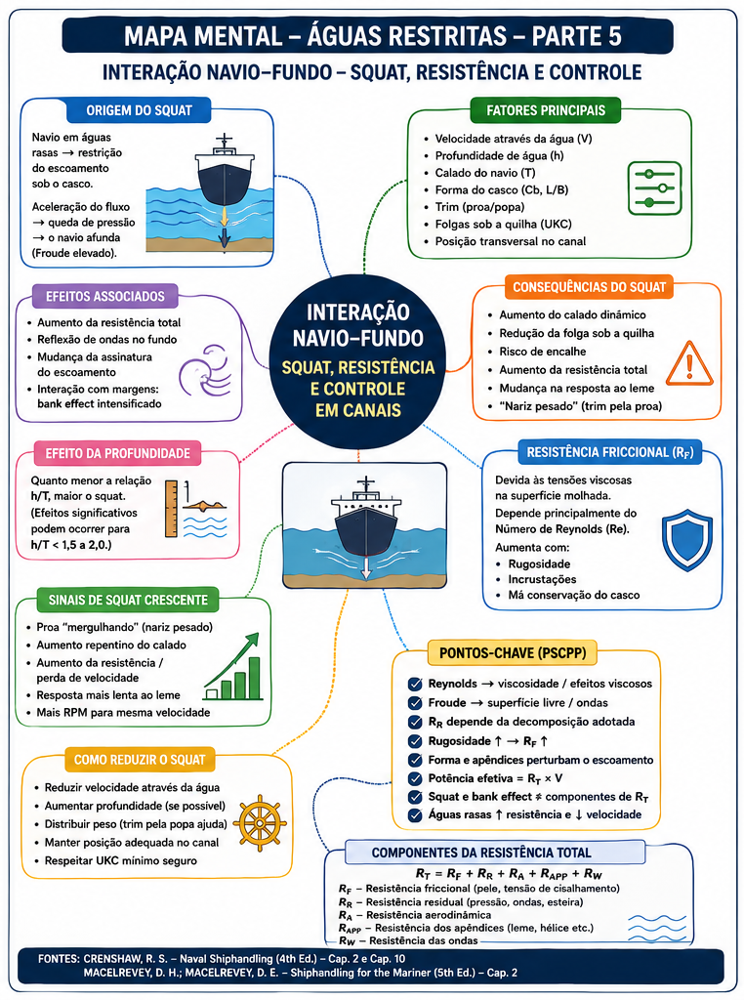
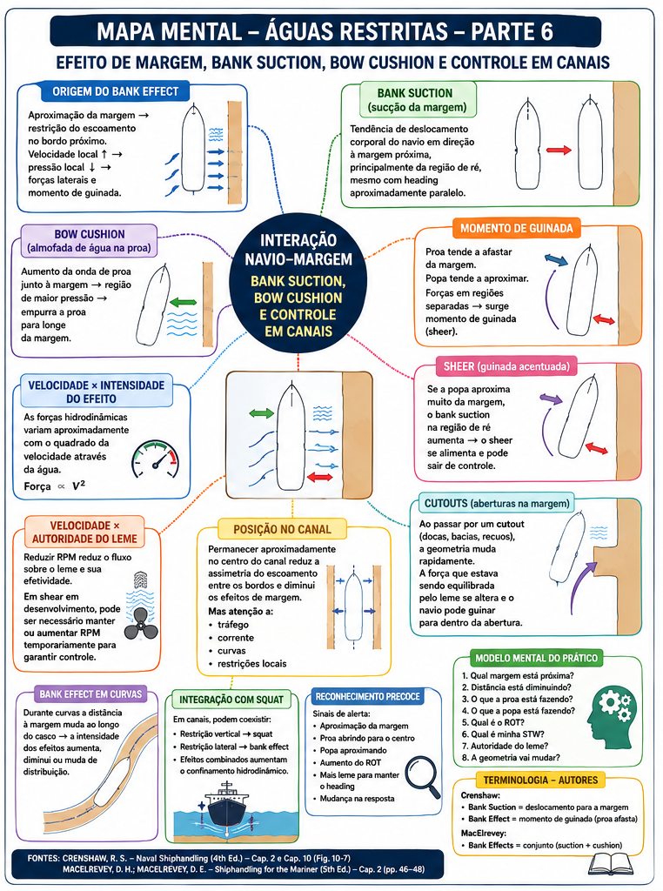
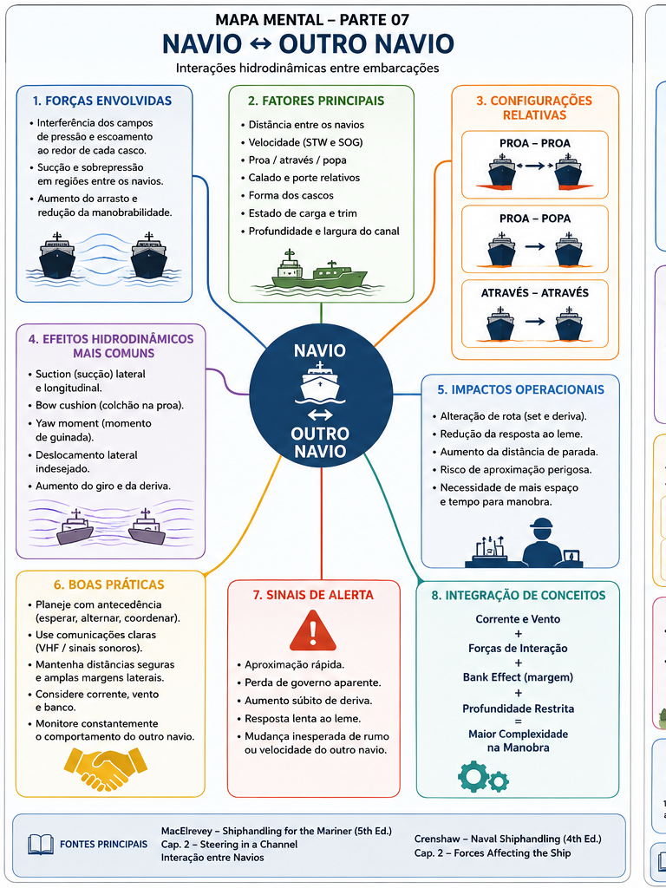
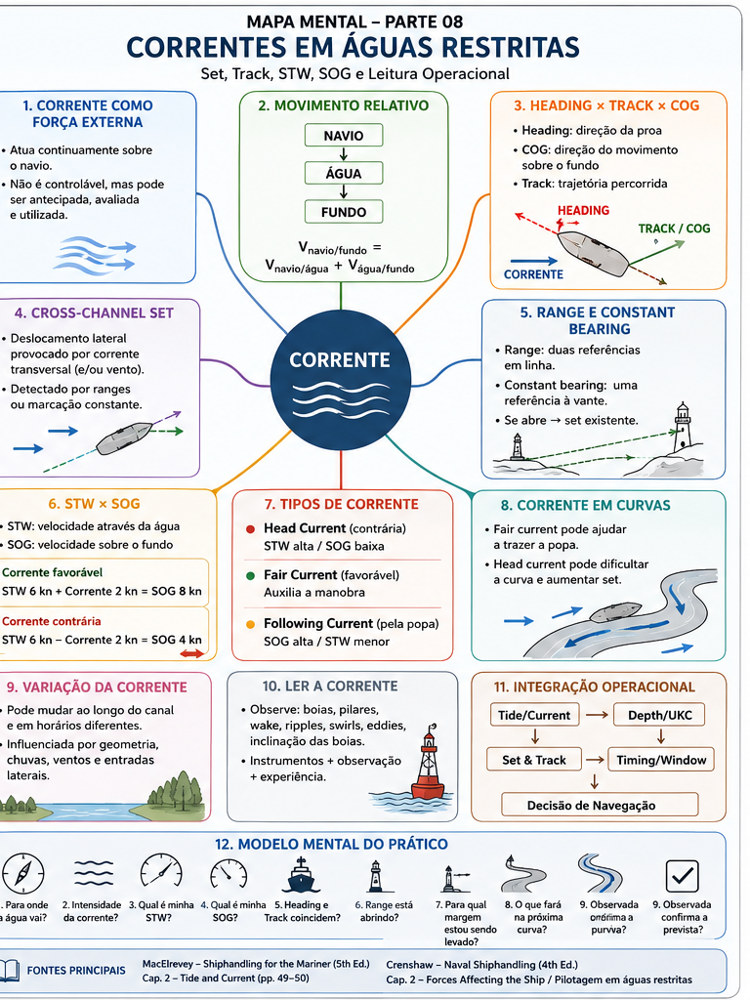
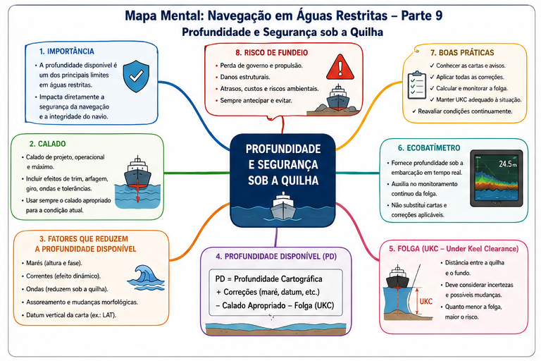
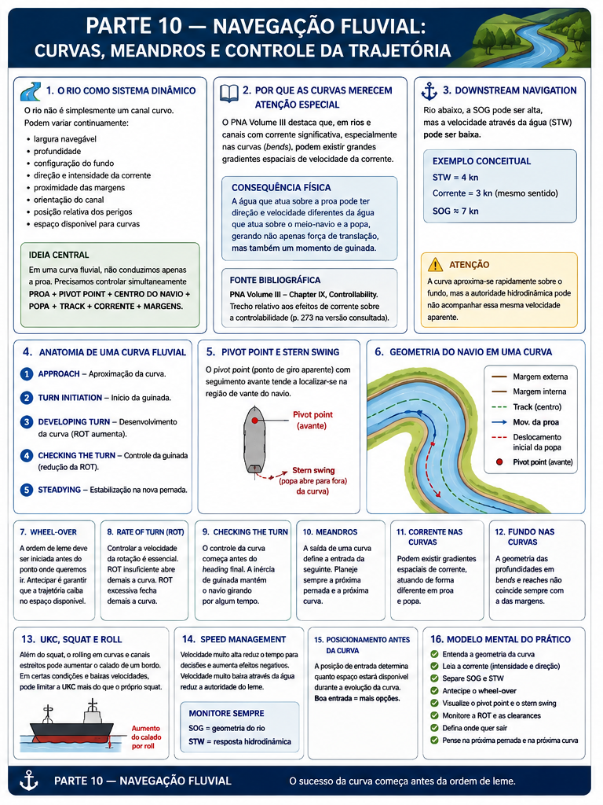
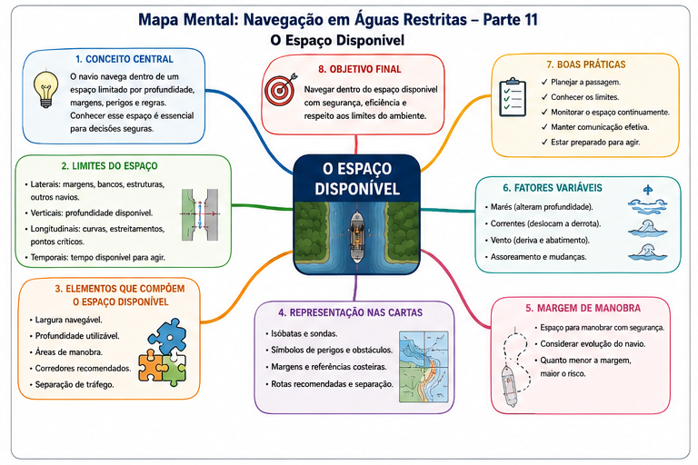
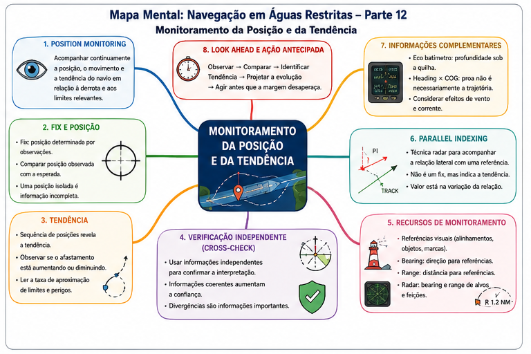

⚓ Navegação em Águas Restritas
Restricted Waters Navigation
A navegação em águas restritas representa uma condição na qual a condução do navio passa a ser fortemente influenciada pela proximidade de perigos, pela limitação do espaço disponível, pela profundidade da água, pela geometria do canal, pelas condições ambientais e pelas próprias características de manobra da embarcação.
Nessas circunstâncias, uma alteração de rumo, uma mudança de velocidade ou um deslocamento lateral aparentemente pequeno podem consumir rapidamente a margem de segurança disponível.
Por essa razão, esta aula não tratará a navegação em águas restritas como simples continuação da navegação costeira.
O objetivo será estudar como o navio deve ser planejado, monitorado e conduzido quando sua liberdade de movimento é limitada pelo ambiente ao seu redor.
O desenvolvimento combinará os fundamentos de navegação de Navegação: A Ciência e a Arte, a abordagem operacional de shiphandling apresentada por Crenshaw e MacElrevey, e, nas partes correspondentes, os princípios de Bridge Team Management, Bridge Procedures Guide e Theory and Practices of Marine Pilotage.
📊 Progresso da Aula
0% da aula concluída
📘 Identificação da aula
Disciplina: Navegação
Assunto: Navegação em Águas Restritas
Termo técnico principal: Restricted Waters Navigation
Nível: PSCPP
Abordagem: navegação, pilotagem, shiphandling e gerenciamento da passagem em ambiente restrito.
⏱ Cronômetro de Estudo
📖 Estudo
Estude com concentração durante o ciclo e utilize a pausa antes de iniciar uma nova sessão.
📋 Conteúdo programático
III — Navegação em Águas Restritas
Esta aula integra os conteúdos diretamente relacionados à condução da embarcação em águas restritas, preservando aulas específicas já existentes no módulo Navegação.
- fundamentos da navegação em águas restritas;
- dados táticos e características de manobra;
- curvas de giro e seus elementos;
- planejamento de guinadas;
- variações de velocidade;
- condução em canais e rios;
- navegação de segurança;
- navegação com corrente;
- marés e correntes de maré;
- profundidade e águas rasas;
- under-keel clearance;
- squat;
- efeitos de margem;
- curvas em canais;
- encontro e ultrapassagem de embarcações;
- navegação fluvial;
- navegação batimétrica;
- navegação com mau tempo em áreas restritas;
- passage planning em águas restritas;
- executing the plan;
- monitoring the ship's progress;
- teamwork;
- navegação com Prático a bordo;
- procedimentos operacionais relacionados à praticagem;
- contingências durante a passagem.
🎯 Objetivos de aprendizagem
Ao concluir esta aula, o aluno deverá ser capaz de:
- compreender por que a navegação em águas restritas exige precisão de posicionamento superior àquela normalmente necessária em águas abertas;
- relacionar as dimensões do navio, calado, velocidade e características de manobra ao espaço disponível;
- interpretar e empregar os dados táticos no planejamento e execução da passagem;
- avaliar corretamente avanço, afastamento, diâmetro tático e demais elementos da curva de giro;
- antecipar a trajetória da proa, do centro do navio e da popa durante uma alteração de rumo;
- planejar alterações de velocidade considerando tempo e distância necessários para que o navio responda;
- avaliar os efeitos de águas rasas, restrição lateral, squat e bank effect;
- interpretar os efeitos da corrente sobre heading, track, SOG e STW;
- conduzir conceitualmente curvas, encontros e ultrapassagens em canais;
- empregar referências visuais, radar, ecobatímetro e demais recursos pertinentes para monitorar a segurança da passagem;
- compreender os princípios de passage planning, execution e monitoring aplicados às águas restritas;
- integrar Prático, Comandante e equipe do passadiço ao processo de navegação;
- identificar antecipadamente situações degradadas e contingências;
- utilizar corretamente a terminologia técnica em inglês marítimo.
📚 Publicações utilizadas
Navegação: A Ciência e a Arte — Volume I
Autor: Altineu Pires Miguens.
É uma das referências fundamentais desta aula.
O Capítulo 8 — Uso dos Dados Táticos do Navio na Navegação em Águas Restritas será particularmente importante para compreender por que o navio real não altera instantaneamente seu rumo ou sua velocidade.
Na edição fornecida, o capítulo ocupa a numeração interna 8-1 a 8-21, seguido do apêndice de exercícios a partir de 8-22.
Também serão empregados, nas partes correspondentes, os capítulos indicados pela bibliografia oficial sobre navegação costeira, estimada, linhas de segurança, marés, correntes, instrumentos, publicações, auxílios à navegação e radar.
Naval Shiphandling — 4th Edition
Autor: Russell Sydnor Crenshaw.
A publicação complementará a abordagem do navegante com a perspectiva do oficial que efetivamente conduz o navio.
Será particularmente importante a seção Restricted Waters, na qual Crenshaw discute a mudança de ambiente existente quando o navio deixa as águas abertas e passa a operar dentro dos limites de um porto e de canais estreitos.
A obra será utilizada principalmente para aspectos de pilotagem visual, uso de referências, correntes, condução em canais, planejamento antecipado e percepção contínua da posição do navio.
Shiphandling for the Mariner — 5th Edition
Autores: Daniel H. MacElrevey e Daniel E. MacElrevey.
O Chapter 2 — Shiphandling in a Channel inicia-se na página impressa 46 da edição fornecida.
O capítulo aborda diretamente:
- Bank Effects;
- Planning Ahead;
- Tide and Current;
- Types of Rudders and Propulsion Systems;
- Effect of Trim on Handling Characteristics;
- Making a Turn in a Channel;
- Using Aids to Navigation When Turning;
- Meeting Another Vessel or Tow;
- Overtaking Another Vessel or Tow;
- Using Shiphandling Instrumentation;
- The Basics of Squat;
- Underkeel Clearance;
- Stopping and Maneuvering in a Channel.
Esses assuntos serão desenvolvidos nas partes correspondentes, sem antecipá-los superficialmente nesta introdução.
Bridge Team Management — 2nd Edition
Autores: A. J. Swift e T. J. Bailey.
A bibliografia oficial do PSCPP determina os Chapters 1 a 7, abrangendo: Bridge Team Management, Passage Appraisal, Passage Planning, Executing the Passage/Voyage Plan, Monitoring the Ship's Progress, Teamwork e Navigating with a Pilot on Board.
Bridge Procedures Guide — 6th Edition
International Chamber of Shipping.
A bibliografia oficial seleciona:
- Chapter 2 — Effective Bridge Organisation;
- Chapter 3 — Passage Planning;
- Chapter 5 — Operation and Maintenance of Bridge Equipment;
- Chapter 6 — Pilotage.
Theory and Practices of Marine Pilotage
Autor: Santosha K. Nayak.
A bibliografia do PSCPP seleciona:
- Chapter 5 — Entering Pilotage Waters;
- Chapter 6 — Safe Positioning of a Vessel in the Channel;
- Chapter 13 — Manoeuvering Inside Harbour Limits.
A publicação será utilizada principalmente para aproximar a teoria da perspectiva operacional da praticagem.
📚 Método bibliográfico desta aula
A partir desta nova versão, os conceitos importantes não serão apresentados como afirmações isoladas.
Sempre que possível, cada tópico indicará:
- publicação;
- capítulo ou seção;
- página ou numeração interna confirmada;
- publicações complementares;
- e diferenças de abordagem entre autores, quando existirem.
Quando uma página não puder ser confirmada com segurança, ela não será inventada.
🗂 Organização da aula
A aula será desenvolvida progressivamente, partindo do problema fundamental até situações operacionais complexas.
- fundamentos da navegação em águas restritas;
- dados táticos e comportamento real do navio;
- curvas de giro e dimensões da trajetória;
- planejamento de guinadas em canais;
- alterações de velocidade, parada e controle do movimento;
- águas rasas, UKC e squat;
- efeito de margem;
- correntes em águas restritas;
- marés e correntes de maré;
- curvas em rios e canais;
- encontro entre embarcações;
- ultrapassagem em canais;
- navegação fluvial;
- navegação batimétrica;
- mau tempo em águas restritas;
- passage planning;
- execution e monitoring;
- pilotage e bridge team;
- contingências;
- integração operacional e questões no padrão PSCPP.
PARTE 1 — FUNDAMENTOS DA NAVEGAÇÃO EM ÁGUAS RESTRITAS
Antes de estudar curvas de giro, bank effect, squat, correntes ou técnicas de pilotagem, é necessário compreender por que uma água restrita modifica a própria natureza do problema de navegação.
O primeiro passo, portanto, não é aprender uma manobra.
É compreender a mudança de escala, de precisão e de tempo disponível para tomar decisões.
1. O que muda quando o navio entra em águas restritas?
Miguens inicia o estudo específico dos dados táticos em águas restritas fazendo uma distinção fundamental entre o modelo simplificado frequentemente utilizado na navegação e o comportamento físico real da embarcação.
Em navegação oceânica e mesmo em determinadas situações de navegação costeira, pode-se trabalhar, para fins de construção da derrota, como se uma ordem de mudança de rumo produzisse imediatamente o novo rumo e como se uma ordem de mudança de velocidade produzisse imediatamente a nova velocidade.
Esse modelo é útil para determinados cálculos e representações.
Mas o navio real não funciona dessa maneira.
Depois de uma ordem de leme, a embarcação precisa de determinado intervalo de tempo e determinada distância para desenvolver a guinada e estabilizar-se na nova condição.
Da mesma forma, quando a potência ou a ordem de máquina é modificada, a velocidade do navio não muda instantaneamente.
Existe uma resposta dinâmica, durante a qual o navio continua avançando e ocupando espaço.
🧠 Primeira mudança de raciocínio
Em águas abertas, um erro de algumas centenas de metros pode não produzir uma consequência imediata.
Em águas restritas, essas mesmas centenas de metros podem representar:
- a largura inteira de um canal;
- a distância até uma margem;
- a distância até um banco;
- o espaço necessário para completar uma guinada;
- ou a diferença entre passar livre e atingir um perigo.
⚓ Aplicação Operacional
O Prático não pode pensar apenas:
“quando chegarmos aqui, colocaremos leme.”
Ele precisa pensar:
“se o leme for aplicado aqui, onde estarão a proa, o centro do navio e a popa durante toda a evolução?”
Essa mudança de raciocínio é a base de toda esta aula.
📚 Fonte bibliográfica
Fonte principal: MIGUENS, Altineu Pires. Navegação: A Ciência e a Arte — Volume I.
Capítulo 8: Uso dos Dados Táticos do Navio na Navegação em Águas Restritas.
Seção 8.1: Dados Táticos ou Características de Manobra dos Navios.
Localização confirmada: página interna 8-1, prosseguindo em 8-2.
2. Restrição de espaço e proximidade dos perigos
Miguens caracteriza a situação de águas restritas a partir de limitações que afetam diretamente a liberdade de movimento do navio.
O navio pode estar limitado:
- pelo seu calado;
- pelas dimensões da área disponível para manobra;
- ou simultaneamente pelos dois fatores.
Isso significa que a restrição não precisa existir apenas lateralmente.
Ela pode existir:
- lateralmente, pelas margens, bancos, estruturas ou outros navios;
- verticalmente, pela profundidade disponível;
- longitudinalmente, pela pequena distância até uma curva, perigo, berço, ponte ou ponto de parada;
- e temporalmente, porque as decisões precisam ser tomadas antes que a situação evolua além da possibilidade de correção.
🧠 Água restrita não significa apenas “canal estreito”
O conceito operacional é mais amplo.
O elemento essencial é a existência de uma restrição relevante à liberdade de movimento ou à margem de segurança da embarcação.
⚓ Pergunta do Prático
Ao analisar uma passagem, não pergunte somente:
“qual é a largura do canal?”
Pergunte também:
- qual é minha boca?
- qual é meu comprimento?
- qual é meu calado?
- quanto espaço a curva exige?
- quanto a popa abrirá?
- qual é minha UKC?
- qual é minha velocidade?
- qual é a corrente?
- quanto tempo tenho até o próximo ponto crítico?
📚 Fonte bibliográfica
Miguens — Volume I
Capítulo 8, Seção 8.1, página interna 8-1.
Miguens relaciona expressamente a navegação em águas restritas à proximidade dos perigos e às limitações impostas pelo calado e pelas dimensões da área de manobra.
Complemento operacional: Crenshaw, Naval Shiphandling, seção Restricted Waters.
Crenshaw descreve a entrada no porto como uma mudança concreta das condições de shiphandling: o canal estreita, a profundidade diminui e a quantidade de referências e auxílios aumenta.
3. A exigência de precisão aumenta
Uma das afirmações centrais de Miguens é que, em águas restritas, a precisão de posicionamento exigida é muito maior.
A razão é física e operacional:
o espaço entre a posição segura e o perigo é menor.
Consequentemente, o navegante precisa conhecer não apenas a posição atual, mas também prever a evolução futura da embarcação.
Essa previsão depende das características reais de manobra do navio.
POSIÇÃO ATUAL × POSIÇÃO FUTURA
Uma posição perfeita no instante atual não garante uma situação segura alguns minutos depois.
A navegação em águas restritas é essencialmente antecipatória.
⚓ Aplicação Operacional
Imagine um navio perfeitamente sobre a centerline de um canal.
Essa informação, isoladamente, não responde se ele está seguro.
Ainda precisamos saber:
- qual é o heading?
- qual é o ROT?
- qual é o movimento lateral?
- qual é a velocidade?
- qual é a corrente?
- onde está o próximo WOP?
- quanto espaço existe para interromper uma tendência?
A posição é uma fotografia.
O Prático precisa compreender o filme.
📚 Fonte bibliográfica
Miguens — Volume I
Capítulo 8, Seção 8.1, página interna 8-1.
A necessidade de maior precisão é apresentada pelo autor como consequência direta da proximidade dos perigos e das limitações da área de manobra.
4. Navegação e Shiphandling tornam-se inseparáveis
Crenshaw apresenta uma observação especialmente importante para compreender a navegação em porto.
Quando o navio está em águas abertas, é possível manter uma separação relativamente clara entre:
- determinar a posição;
- traçar a derrota;
- e conduzir o navio.
À medida que o canal estreita e a situação passa a evoluir rapidamente, essa separação diminui.
O oficial que está conning the ship precisa compreender continuamente onde o navio está, para onde está indo e como responderá às próximas ordens.
Crenshaw destaca que, em um porto restrito, a equipe de navegação pode manter o plot e fornecer posições, mas situações como:
- passagem entre boias em canal estreito;
- encontro com outros navios;
- guinadas complexas;
- uso simultâneo de máquinas e leme
podem evoluir mais rapidamente do que o ciclo formal de determinação e plotagem da posição.
Por isso, o conning officer também precisa desenvolver uma percepção visual contínua da situação.
🧠 Dois processos simultâneos
NAVIGATION
Onde estou? Onde está a derrota? Onde estão os perigos?
SHIPHANDLING
Como o navio está se movendo? Como responderá? O que acontecerá após minha próxima ordem?
Em águas restritas:
OS DOIS PROCESSOS PRECISAM FUNCIONAR JUNTOS.
⚓ Mentalidade do Prático
O Prático não deve olhar para uma posição eletrônica e enxergar apenas um símbolo sobre a carta.
Ele deve enxergar:
uma embarcação com comprimento, boca, calado, inércia, velocidade, ROT, movimento lateral e capacidade limitada de resposta.
📚 Fonte bibliográfica
Crenshaw, Russell Sydnor. Naval Shiphandling. 4th Edition.
Seção: Restricted Waters.
A seção inicia discutindo as diferenças encontradas quando o navio passa a operar dentro dos limites de um porto, incluindo canal estreito, menor profundidade, multiplicidade de referências e necessidade de acompanhar continuamente a posição.
Fonte complementar: Miguens, Volume I, Capítulo 8, Seção 8.1, pp. internas 8-1–8-2.
5. Think Ahead — o navio deve estar atrás do raciocínio
MacElrevey transforma o planejamento antecipado em um dos princípios centrais do shiphandling.
No Chapter 2 — Shiphandling in a Channel, a seção Planning Ahead aparece logo após a discussão inicial sobre bank effects.
O princípio é simples, mas operacionalmente profundo:
o shiphandler deve pensar vários movimentos à frente.
A manobra deve ser construída como uma sequência lógica, na qual cada ação prepara a condição necessária para a próxima.
Isso significa compreender:
- como o navio se comporta;
- quando reduzir velocidade;
- como utilizar as forças existentes;
- quando aplicar leme;
- quando utilizar máquina;
- e qual condição a embarcação apresentará depois de cada ação.
🧠 REATIVO × ANTECIPATÓRIO
Condução reativa:
o navio começa a sair da situação desejada → o operador percebe → ordena uma correção.
Condução antecipatória:
o operador reconhece a tendência → prevê a evolução → age antes que o desvio se desenvolva plenamente.
⚓ Princípio fundamental
Em águas restritas, o objetivo é:
fazer o navio responder às suas decisões, e não passar a reagir continuamente ao que o navio já fez.
📚 Fonte bibliográfica
MacElrevey & MacElrevey. Shiphandling for the Mariner. 5th Edition.
Chapter 2: Shiphandling in a Channel.
Seção: Planning Ahead.
Página impressa confirmada: 49.
A seção apresenta explicitamente o princípio de thinking ahead como fundamento da condução eficiente e segura.
6. Conhecer o navio deixa de ser opcional
Se o navio não responde instantaneamente, então o planejamento só pode ser preciso quando suas características de manobra são conhecidas.
Miguens denomina essas informações dados táticos e observa que, nos navios mercantes, são normalmente tratadas como características de manobra.
Segundo o autor, esses dados normalmente abrangem:
- elementos das curvas de giro;
- informações de máquinas;
- tabelas de aceleração e desaceleração;
- relações entre demanda, RPM e velocidade;
- correspondência entre ordens do telégrafo de manobra, rotações e velocidades.
Essas informações são obtidas a partir das provas realizadas com o navio e devem estar disponíveis para consulta operacional.
🧠 Conhecer o navio significa conhecer sua resposta
Não basta saber:
- LOA;
- boca;
- calado;
- deslocamento.
Para conduzi-lo, é necessário saber também:
quanto espaço e quanto tempo ele precisa para responder.
⚓ Aplicação Operacional
Dois navios com dimensões semelhantes não devem ser considerados automaticamente equivalentes em manobra.
Diferenças de:
- forma do casco;
- leme;
- propulsor;
- potência;
- calado;
- trim;
- carregamento
podem produzir respostas diferentes.
Por isso, o Pilot–Master Exchange e as informações de manobra do navio terão importância fundamental mais adiante nesta aula.
📚 Fonte bibliográfica
Miguens — Volume I
Capítulo 8 — Uso dos Dados Táticos do Navio na Navegação em Águas Restritas.
Seção 8.1: Dados Táticos ou Características de Manobra dos Navios.
Páginas internas confirmadas: 8-1 e 8-2.
O detalhamento das curvas de giro começa na Seção 8.2, página interna 8-2, e será desenvolvido integralmente na próxima parte.
7. Velocidade também determina quanto tempo resta para decidir
MacElrevey chama atenção para uma relação que acompanhará praticamente toda a aula:
velocidade e controle não podem ser analisados separadamente.
O navio precisa possuir movimento suficiente através da água para que seus sistemas de governo possam produzir resposta adequada.
Ao mesmo tempo, velocidade excessiva reduz o tempo disponível para tomar decisões e pode intensificar efeitos hidrodinâmicos indesejados em águas restritas.
Existe, portanto, um compromisso operacional:
⚖️ O equilíbrio
VELOCIDADE SUFICIENTE
para manter capacidade de governo
×
VELOCIDADE CONTROLADA
para preservar tempo, espaço e capacidade de reação.
⚠ Atenção do Prático
“Slow down” não é uma solução automática para qualquer problema.
Da mesma maneira, “mais máquina” não é uma solução automática para falta de controle.
É necessário compreender:
- qual velocidade o navio possui através da água;
- qual velocidade possui sobre o fundo;
- quanto fluxo chega ao leme;
- qual é a corrente;
- quanto espaço resta;
- e quais efeitos hidrodinâmicos estão presentes.
📚 Fonte bibliográfica
MacElrevey & MacElrevey, Shiphandling for the Mariner, 5th Edition.
Chapter 2 — Shiphandling in a Channel.
A discussão sobre velocidade, governo e disponibilidade de potência aparece no desenvolvimento do capítulo, inclusive na seção Types of Rudders and Propulsion Systems, a partir da página impressa 50.
O tema será retomado com maior profundidade nas partes sobre parada, correntes, bank effect e águas rasas.
8. O modelo mental fundamental do Prático
A partir das três perspectivas que iniciaram esta aula, podemos construir um primeiro modelo mental.
Miguens mostra que o navio necessita de tempo e distância para responder.
Crenshaw mostra que, em águas restritas, o conning officer precisa acompanhar a situação continuamente e não pode depender exclusivamente de uma posição formal obtida alguns instantes antes.
MacElrevey transforma essa necessidade em filosofia de condução:
THINK AHEAD.
🧠 A sequência fundamental
1 — ONDE ESTOU?
Posição atual e margem disponível.
2 — COMO ESTOU ME MOVENDO?
Heading, track, velocidade, ROT e movimento lateral.
3 — COMO MEU NAVIO RESPONDE?
Dados táticos e características de manobra.
4 — QUAIS FORÇAS ESTÃO ATUANDO?
Corrente, vento, fundo, margens e interação hidrodinâmica.
5 — ONDE ESTAREI DEPOIS DA PRÓXIMA ORDEM?
Antecipação da evolução.
6 — QUANTO ESPAÇO E TEMPO RESTAM?
Margem para corrigir uma evolução diferente da prevista.
⚓ Síntese da Parte 1
A navegação em águas restritas não consiste simplesmente em manter um navio entre duas margens.
Ela exige integrar:
POSIÇÃO + MOVIMENTO + RESPOSTA DO NAVIO + AMBIENTE + ANTECIPAÇÃO.
Essa equação conceitual será a base para todas as próximas partes.
🌐 Terminologia essencial da Parte 1
| Inglês marítimo | Português | Significado operacional |
|---|---|---|
| Restricted Waters | Águas restritas | Ambiente em que profundidade, espaço, perigos ou outras limitações reduzem significativamente a liberdade de movimento ou a margem de segurança. |
| Shiphandling | Condução / manobra do navio | Aplicação prática do conhecimento sobre a resposta do navio às forças, comandos e condições ambientais. |
| Conning | Condução direta do navio | Ato de dirigir a movimentação do navio por meio de ordens de rumo, leme, máquina e outros comandos pertinentes. |
| Conning Officer | Oficial conduzindo o navio | Pessoa que exerce a condução direta da embarcação naquele momento. |
| Manoeuvring Characteristics | Características de manobra | Informações que descrevem como o navio responde a alterações de leme, máquina e condição de movimento. |
| Tactical Data | Dados táticos | Terminologia empregada por Miguens para dados de manobra como curva de giro e informações de aceleração e desaceleração. |
| Think Ahead | Pensar antecipadamente | Princípio de planejar as ações antes que o comportamento do navio exija uma resposta reativa. |
| Safe Water | Água segura | Área na qual profundidade, perigos e demais limitações permitem a passagem segura da embarcação considerada. |
| Harbour Chart | Carta do porto | Carta utilizada para planejamento e acompanhamento da navegação portuária. |
| Danger Bearing | Marcação de perigo | Marcação estabelecida para auxiliar a distinguir a região segura da região perigosa. |
🧠 Mapa Mental — Parte 1
O mapa mental desta parte deverá sintetizar somente o conteúdo técnico estudado, sem reproduzir a interface do aplicativo.

Mapa Mental — Parte 1. Fundamentos da Navegação em Águas Restritas: posição, restrição de espaço, dados do navio, antecipação, velocidade e filosofia Think Ahead.
📚 Fontes específicas da Parte 1
MIGUENS, Altineu Pires. Navegação: A Ciência e a Arte — Volume I.
Capítulo 8 — Uso dos Dados Táticos do Navio na Navegação em Águas Restritas.
Seções utilizadas nesta parte: 8.1 e introdução da 8.2.
Páginas internas utilizadas: 8-1 a 8-2.
CRENSHAW, Russell Sydnor. Naval Shiphandling. 4th Edition.
Seção: Restricted Waters.
Conteúdo utilizado: mudança das condições entre águas abertas e porto, necessidade de conhecimento contínuo da posição, pilotagem visual, preparação da carta e estudo antecipado do porto.
MACELREVEY, Daniel H.; MACELREVEY, Daniel E. Shiphandling for the Mariner. 5th Edition.
Chapter 2 — Shiphandling in a Channel.
Páginas impressas utilizadas: 46–50, especialmente Planning Ahead e o início da discussão sobre velocidade, leme e propulsão.
PARTE 2 — DADOS TÁTICOS DO NAVIO E CURVA DE GIRO
Na Parte 1 estabelecemos um princípio fundamental:
em águas restritas, o navegante precisa antecipar onde o navio estará depois de uma determinada ordem.
Essa antecipação não deve depender apenas da experiência subjetiva.
O próprio navio fornece informações objetivas sobre sua capacidade de manobra.
Miguens reúne essas informações sob a denominação de dados táticos ou características de manobra.
Nesta parte, o estudo será concentrado em uma das informações mais importantes para a navegação em águas restritas:
a curva de giro do navio.
Não estudaremos a curva apenas como uma figura geométrica.
Vamos interpretá-la como uma representação do espaço efetivamente necessário para que um navio altere seu rumo.
9. Dados táticos ou características de manobra
Miguens emprega a expressão dados táticos para designar informações que permitem conhecer o comportamento do navio durante determinadas manobras.
No contexto mercante, essas informações aparecem normalmente associadas às características de manobra da embarcação.
Sua importância para a navegação em águas restritas decorre de um fato elementar:
uma ordem não produz instantaneamente o resultado desejado.
Quando o leme é aplicado, o navio necessita de tempo e percorre determinada distância até desenvolver a guinada.
Quando uma ordem de máquina é modificada, também existe um intervalo entre a ordem, a alteração do regime propulsivo e a resposta efetiva do movimento da embarcação.
Assim, os dados de manobra permitem substituir uma ideia vaga de “como o navio deve responder” por informações obtidas a partir do comportamento da própria embarcação.
🧠 Conceito essencial
DADOS TÁTICOS = MEMÓRIA DE COMO O NAVIO RESPONDE.
Eles ajudam o navegante a transformar:
ORDEM → RESPOSTA → TEMPO → DISTÂNCIA
em informação utilizável no planejamento da passagem.
⚓ Aplicação Operacional
Ao preparar uma alteração de rumo, não basta conhecer o novo rumo desejado.
O Prático precisa estimar:
- quando iniciar a guinada;
- quanto o navio continuará avançando;
- quanto se deslocará lateralmente;
- quanto espaço todo o casco ocupará;
- e em que momento a guinada deverá ser controlada.
A curva de giro fornece parte fundamental dessa informação.
📚 Fonte bibliográfica
MIGUENS, Altineu Pires. Navegação: A Ciência e a Arte — Volume I.
Capítulo 8: Uso dos Dados Táticos do Navio na Navegação em Águas Restritas.
Seção 8.1: Dados Táticos ou Características de Manobra dos Navios.
Páginas internas confirmadas: 8-1 a 8-2.
A curva de giro passa a ser desenvolvida especificamente na Seção 8.2.
10. Turning Circle — a curva de giro do navio
A curva de giro, ou turning circle, representa a trajetória descrita pelo navio durante uma guinada realizada sob condições determinadas.
Seu valor operacional não está apenas em mostrar que o navio consegue mudar de rumo.
A curva permite visualizar quanto espaço é consumido durante essa mudança.
Para a navegação em águas restritas, essa informação é decisiva.
Uma derrota pode parecer geometricamente possível quando observada apenas como duas linhas retas unidas por uma curva.
Entretanto, o navio possui:
- comprimento;
- boca;
- inércia;
- movimento lateral;
- rotação;
- e resposta progressiva ao leme.
Por isso, a trajetória real não corresponde a uma simples mudança instantânea de direção.
⚠ Atenção do Prático
O desenho acima não representa valores universais.
Cada navio possui seus próprios dados de manobra.
O diagrama serve para compreender as grandezas; os valores utilizados na operação devem ser os pertinentes à embarcação considerada e às condições aplicáveis.
📚 Fonte bibliográfica
Miguens — Volume I.
Capítulo 8, Seção 8.2 — Curvas de Giro.
A seção começa na página interna 8-2.
11. A guinada não começa como uma circunferência perfeita
Um erro conceitual comum é imaginar que, no instante em que o leme é aplicado, o navio passa imediatamente a descrever uma circunferência de raio constante.
Isso não ocorre.
A resposta é progressiva.
Após a aplicação do leme, a ação hidrodinâmica produz um momento de guinada, mas a embarcação conserva seu movimento anterior por efeito de sua inércia.
A trajetória começa, portanto, com forte componente na direção original.
À medida que a guinada se desenvolve, a orientação do casco, a velocidade angular e o movimento lateral também evoluem.
Somente depois dessa fase transitória o movimento se aproxima de uma condição de giro mais estabelecida.
🧠 Pense na sequência
LEME
↓
FORÇA HIDRODINÂMICA
↓
MOMENTO DE GUINADA
↓
ROTAÇÃO PROGRESSIVA
↓
TRAJETÓRIA CURVA.
⚓ Consequência Operacional
A primeira preocupação ao iniciar uma curva não é apenas:
“o navio vai girar?”
Mas:
“quanto ele continuará avançando antes que a alteração de rumo se torne suficiente?”
É exatamente por isso que o advance é tão importante.
📚 Fontes
Fonte principal: Miguens, Volume I, Capítulo 8, Seção 8.2 — Curvas de Giro.
Complemento conceitual: o material técnico de lemes já desenvolvido no Bridge Trainer trata a resposta como progressiva, com aplicação do leme, desenvolvimento da guinada e estabelecimento da curva.
12. Advance — Avanço
O advance é uma das dimensões fundamentais da curva de giro.
Ele expressa, em essência, quanto o navio avança na direção do rumo inicial durante o desenvolvimento da guinada, considerando a referência angular adotada para sua determinação.
Operacionalmente, o conceito responde a uma pergunta extremamente importante:
depois de iniciar a guinada, quanto espaço o navio ainda consumirá na direção em que vinha navegando?
🧠 ADVANCE = espaço consumido “para a frente”
Imagine uma curva de 90° para boreste.
Mesmo depois de colocar o leme a boreste, o navio continuará avançando na direção do rumo anterior.
Esse avanço precisa ser considerado antes de alcançar:
- uma margem;
- um banco;
- um quebra-mar;
- uma ponte;
- uma curva fechada;
- ou qualquer limite existente à vante.
⚓ Relação com o Wheel-Over Point
O Wheel-Over Point — WOP precisa ser estabelecido antes do ponto geométrico em que se deseja que o navio esteja no novo alinhamento.
Uma das razões é justamente o advance.
Se a guinada for iniciada somente no vértice da alteração de rumo, o navio continuará avançando além daquele ponto enquanto a curva se desenvolve.
📚 Fonte bibliográfica
Miguens — Volume I.
Capítulo 8, Seção 8.2 — Curvas de Giro.
O avanço aparece entre os elementos fundamentais utilizados para descrever a geometria da curva de giro.
13. Transfer — Afastamento
Enquanto o advance descreve o desenvolvimento na direção inicial, o transfer representa o deslocamento transversal do navio em relação à linha do rumo original, para a condição angular considerada.
Em português, Miguens emprega afastamento para essa dimensão.
O transfer permite avaliar quanto o navio já se afastou lateralmente de sua trajetória inicial durante a evolução.
🧠 Memorização
ADVANCE → PARA FRENTE.
TRANSFER → PARA O LADO.
⚓ Aplicação Operacional
Em uma curva de canal, o Prático precisa controlar simultaneamente:
quanto o navio ainda avança
e:
quanto já se deslocou lateralmente.
Essas duas grandezas não são alternativas.
Elas descrevem componentes diferentes da mesma evolução.
📚 Fonte bibliográfica
Miguens — Volume I.
Capítulo 8, Seção 8.2 — Curvas de Giro.
Conceito: afastamento / transfer como elemento geométrico da curva.
14. Tactical Diameter — Diâmetro Tático
O tactical diameter é outra dimensão essencial da capacidade de giro.
Ele está relacionado ao deslocamento transversal atingido quando o navio completa uma alteração de rumo de 180° em relação ao rumo inicial, conforme a definição empregada para a prova de manobra.
Em termos operacionais, o diâmetro tático fornece uma percepção imediata da escala lateral necessária para realizar uma grande alteração de rumo.
🧠 Não confunda
TRANSFER
é o afastamento transversal considerado para uma determinada fase angular da curva.
TACTICAL DIAMETER
é associado à posição alcançada após uma mudança de rumo de 180°.
⚓ Por que isso interessa ao Prático?
Porque um navio pode possuir espaço suficiente para colocar sua proa na direção desejada, mas não necessariamente possuir espaço suficiente para que todo o seu movimento de giro ocorra dentro da área segura.
O diâmetro tático é uma das referências que ajudam a dimensionar essa necessidade espacial.
📚 Fonte bibliográfica
Miguens — Volume I.
Capítulo 8, Seção 8.2 — Curvas de Giro.
Complemento normativo: a IMO utiliza advance e tactical diameter entre os parâmetros dos padrões de manobrabilidade.
As publicações MSC.137(76) e MSC/Circ.1053 fazem parte da bibliografia de Manobrabilidade do projeto e serão usadas apenas quando for necessário discutir os critérios normativos específicos, evitando misturar o conceito geométrico com o padrão de aprovação.
15. Advance não é sinônimo de distância até o Wheel-Over Point
Esta distinção merece atenção porque é fácil transformar um dado da curva de giro em uma regra operacional que a publicação não autoriza utilizar de maneira automática.
O advance é uma característica obtida em determinada condição de manobra.
O Wheel-Over Point, por outro lado, é um elemento do planejamento de uma curva em uma situação concreta.
Sua determinação precisa considerar a geometria da derrota e o comportamento esperado da embarcação nas condições da passagem.
⚠ Erro conceitual
“Meu advance é X, portanto sempre começo qualquer curva X metros antes.”
Esse raciocínio é excessivamente simplificado.
⚓ O dado tático é uma referência, não um piloto automático
Na passagem real, a resposta pode ser influenciada por fatores como:
- velocidade;
- ângulo de leme empregado;
- calado;
- trim;
- profundidade;
- vento;
- corrente;
- restrição lateral;
- condição propulsiva.
A curva de giro fornece uma base de previsão.
A navegação real exige monitoramento da resposta efetiva.
16. A curva não é apenas a trajetória de um ponto
Os dados da curva de giro são extremamente úteis, mas existe uma consideração fundamental para águas restritas:
o navio possui dimensões físicas.
Uma trajetória associada a um ponto de referência não representa automaticamente todo o espaço ocupado pela embarcação.
Durante uma guinada, proa, região central e popa descrevem trajetórias diferentes.
Além disso, o casco muda continuamente sua orientação em relação à trajetória.
Consequentemente, a área varrida pelo navio é maior que uma simples linha traçada na carta.
⚠ Atenção do Prático
Em uma curva próxima a uma margem, estrutura, navio atracado ou outro obstáculo, acompanhar apenas a proa pode produzir uma falsa percepção de segurança.
A pergunta correta é:
“onde passarão todas as partes do meu navio?”
17. Stern Swing — a popa também precisa de espaço
Ao iniciar uma alteração de rumo, a atenção visual tende naturalmente a acompanhar a proa.
Entretanto, a ação do leme e a rotação do navio fazem com que a popa também desenvolva movimento lateral.
Esse movimento, frequentemente referido como stern swing, é particularmente importante quando existem obstáculos próximos ao bordo externo da guinada.
Portanto, uma curva não deve ser avaliada apenas perguntando se existe espaço para a proa entrar no novo alinhamento.
É necessário verificar se existe espaço para a popa abrir durante a evolução.
🧠 Regra visual
PROA ENTRA NA CURVA.
POPA PRECISA DE ESPAÇO NO BORDO OPOSTO.
⚓ Situações críticas
O stern swing merece atenção especial em:
- saídas de cais;
- curvas próximas a estruturas;
- passagens junto a navios atracados;
- canais estreitos;
- entrada e saída de eclusas;
- passagens sob pontes ou através de gates.
📚 Relação bibliográfica
O conceito complementa a interpretação geométrica dos dados táticos de Miguens.
A importância operacional da trajetória de todo o casco é consistente com a abordagem de shiphandling empregada nas publicações operacionais utilizadas nesta aula.
Nesta seção, não atribuímos a Miguens uma definição específica de stern swing que não tenha sido confirmada no trecho consultado.
18. Dados táticos precisam ser interpretados dentro de suas condições
Uma curva de giro não deve ser entendida como uma característica absolutamente fixa e imutável do navio.
Ela representa o comportamento observado sob determinadas condições.
Na operação real, mudanças nas condições do navio e do ambiente podem modificar sua resposta.
Por isso, os dados disponíveis devem ser utilizados como referência técnica, mas associados à observação contínua da manobra efetivamente desenvolvida.
Dados do navio ≠ previsão infalível
A informação tática responde:
“como este navio respondeu nas condições em que o dado foi obtido?”
O Prático ainda precisa avaliar:
“como ele está respondendo agora?”
⚓ Aplicação Operacional
Durante a guinada, compare continuamente o comportamento previsto com o comportamento observado.
Se o navio:
- não desenvolve ROT como esperado;
- avança mais que o previsto;
- apresenta maior movimento lateral;
- ou aproxima-se de um limite mais rapidamente que o planejado,
o dado de planejamento não deve substituir a evidência operacional.
19. Turning Ability — relação com os padrões IMO
Os conceitos de advance e tactical diameter não aparecem apenas como elementos didáticos de uma curva de giro.
Eles também são empregados internacionalmente na avaliação da capacidade de manobra dos navios.
A IMO Resolution MSC.137(76) estabelece padrões para manobrabilidade e utiliza a turning ability como uma das capacidades a serem avaliadas.
A MSC/Circ.1053 fornece notas explicativas para a interpretação e aplicação desses padrões.
⚠ Duas perguntas diferentes
ARQUITETURA NAVAL / PADRÃO IMO:
o navio atende ao padrão estabelecido para capacidade de manobra?
PRATICAGEM:
o espaço disponível nesta passagem é compatível com a resposta deste navio nas condições atuais?
⚓ Não confundir conformidade com margem operacional
Um navio satisfazer um padrão internacional de manobrabilidade não significa que qualquer curva de qualquer canal seja automaticamente segura.
A geometria local, profundidade, corrente, velocidade, vento e margens disponíveis continuam determinando a segurança da passagem.
📚 Fontes normativas complementares
IMO Resolution MSC.137(76) — Standards for Ship Manoeuvrability.
MSC/Circ.1053 — Explanatory Notes to the Standards for Ship Manoeuvrability, Chapters 1–3.
Essas publicações constam da base bibliográfica de Manobrabilidade do Bridge Trainer.
20. Como o Prático deve “ler” uma curva de giro
Uma curva de giro não deve ser memorizada como um conjunto isolado de definições.
Ela deve ser transformada em uma sequência de perguntas operacionais.
1 — Quanto ainda vou avançar?
ADVANCE.
Existe espaço suficiente à vante para permitir que a guinada se desenvolva?
2 — Quanto vou me deslocar lateralmente?
TRANSFER.
Como esse deslocamento se compara à largura e à geometria da área disponível?
3 — Quanto espaço uma grande guinada exige?
TACTICAL DIAMETER.
A escala lateral da evolução é compatível com a área navegável?
4 — Onde passará a popa?
STERN SWING.
Existe obstáculo no bordo externo da guinada?
5 — Qual área todo o navio ocupará?
SWEPT PATH.
A trajetória de um único ponto não é suficiente para avaliar a folga do casco.
6 — A resposta real está coincidindo com a prevista?
MONITOR.
Compare continuamente a evolução observada com o comportamento esperado.
⚓ Síntese Operacional
O objetivo dos dados táticos não é fazer o Prático “decorar números”.
É permitir que ele visualize antecipadamente o espaço que o navio consumirá.
Em águas restritas:
CONHECER A CURVA = CONHECER PARTE DO FUTURO DO MOVIMENTO DO NAVIO.
21. Terminologia técnica da curva de giro
🌐 Inglês marítimo essencial
| Inglês marítimo | Português | Significado operacional |
|---|---|---|
| Turning Circle | Curva / círculo de giro | Trajetória utilizada para representar o comportamento do navio durante uma guinada. |
| Advance | Avanço | Distância desenvolvida na direção do rumo inicial durante a fase considerada da guinada. |
| Transfer | Afastamento | Deslocamento transversal em relação à linha do rumo inicial. |
| Tactical Diameter | Diâmetro tático | Dimensão transversal associada à posição do navio após uma alteração de rumo de 180° na prova de giro. |
| Turning Ability | Capacidade de giro | Capacidade da embarcação de executar uma alteração de rumo dentro de determinadas dimensões. |
| Stern Swing | Abertura / movimento lateral da popa | Movimento lateral da popa durante o desenvolvimento da guinada. |
| Swept Path | Área / faixa varrida | Envelope espacial ocupado pelo conjunto da embarcação durante seu movimento. |
| Wheel-Over Point — WOP | Ponto de início da guinada | Referência utilizada para iniciar uma alteração de rumo planejada. |
| Rate of Turn — ROT | Razão de guinada | Velocidade angular com que o heading do navio se altera. |
| Manoeuvring Characteristics | Características de manobra | Conjunto de informações que descreve a resposta dinâmica da embarcação. |
🧠 Mapa Mental — Parte 2
O mapa mental desta parte deverá representar exclusivamente:
- dados táticos;
- curva de giro;
- advance;
- transfer;
- tactical diameter;
- stern swing;
- swept path;
- e leitura operacional da curva pelo Prático.

Mapa Mental — Parte 2. Dados táticos, curva de giro e interpretação operacional do espaço ocupado pelo navio.
📚 Fontes específicas da Parte 2
MIGUENS, Altineu Pires. Navegação: A Ciência e a Arte — Volume I.
Capítulo 8: Uso dos Dados Táticos do Navio na Navegação em Águas Restritas.
Seções utilizadas: 8.1 — Dados Táticos ou Características de Manobra dos Navios; e 8.2 — Curvas de Giro.
Localização confirmada: Seção 8.1 nas páginas internas 8-1 a 8-2; Seção 8.2 iniciando na página interna 8-2.
IMO. Resolution MSC.137(76) — Standards for Ship Manoeuvrability.
Utilizada como complemento para relacionar advance, tactical diameter e turning ability aos padrões internacionais de manobrabilidade.
IMO. MSC/Circ.1053 — Explanatory Notes to the Standards for Ship Manoeuvrability.
Trecho da bibliografia: Chapters 1–3.
Utilizada como complemento explicativo dos padrões de manobrabilidade.
Observação bibliográfica: os conceitos adicionais de stern swing e swept path foram empregados nesta parte para interpretar operacionalmente a ocupação espacial do casco.
Eles não foram apresentados como definições textuais de Miguens quando essa atribuição não pôde ser confirmada no trecho consultado.
➡ Próxima etapa
Agora sabemos quanto espaço uma guinada pode consumir.
A próxima pergunta é:
COMO TRANSFORMAR ESSES DADOS EM UMA CURVA PLANEJADA DENTRO DE UM CANAL?
Na Parte 3, entraremos no estudo do Wheel-Over Point, planejamento geométrico da curva, controle da guinada, Rate of Turn, referências para iniciar e acompanhar a alteração de rumo e critérios para verificar se o navio está efetivamente seguindo a evolução planejada.
PARTE 3 — DETERMINAÇÃO DO PONTO DE GUINADA E EXECUÇÃO DA CURVA EM CANAL
Na Parte 2, estudamos os dados táticos do navio e aprendemos a interpretar advance, transfer, tactical diameter, stern swing e a área ocupada pelo casco durante uma guinada.
Agora precisamos transformar essas informações em uma decisão concreta de navegação:
onde o navio deve começar a guinar?
Miguens trata diretamente desse problema na Seção 8.7, Determinação do Ponto de Guinada.
O problema surge sempre que, durante uma passagem em águas restritas, a derrota planejada apresenta uma inflexão e a embarcação precisa passar de uma pernada para outra.
Na carta, essa mudança pode ser representada por duas linhas que se encontram em um ponto.
O navio real, entretanto, não chega a esse ponto, gira instantaneamente e passa a seguir a próxima linha.
Ele precisa iniciar a mudança de movimento antes.
🧠 Ideia central da Parte 3
DADOS TÁTICOS
↓
ADVANCE + TRANSFER
↓
PONTO DE GUINADA
↓
MARCAÇÃO DE GUINADA
↓
EXECUÇÃO E CONTROLE DA CURVA.
22. Ponto de Guinada — onde a manobra realmente começa
Miguens explica que, durante o planejamento da navegação em águas restritas, especialmente quando é necessário investir um canal estreito, uma inflexão da derrota prevista exige a determinação de um ponto de guinada.
Esse é o ponto onde o navio deve carregar o leme para que, mantidas determinadas condições de velocidade e de ângulo de leme, possa realizar a mudança de rumo desejada com segurança.
A posição desse ponto não é escolhida arbitrariamente.
Para determiná-la, Miguens utiliza os próprios dados táticos do navio, especialmente:
- advance — avanço;
- transfer — afastamento.
Esses valores devem corresponder, tanto quanto possível, às condições nas quais a curva será executada:
- velocidade;
- ângulo de leme;
- magnitude da alteração de rumo.
🧠 Conceito essencial
O ponto de guinada não é escolhido porque:
“parece um bom lugar para virar”.
Ele deve resultar da relação entre:
GEOMETRIA DA DERROTA + RESPOSTA DO NAVIO.
⚓ Aplicação Operacional
Quando um Prático olha uma curva de canal, não deve enxergar somente o vértice formado pelas duas pernadas.
Ele precisa imaginar a trajetória real que conectará uma pernada à outra.
O ponto onde a ordem de governo será iniciada precisa permitir que essa trajetória real se encaixe dentro da área navegável.
📚 Fonte bibliográfica
MIGUENS, Altineu Pires. Navegação: A Ciência e a Arte — Volume I.
Capítulo 8: Uso dos Dados Táticos do Navio na Navegação em Águas Restritas.
Seção 8.7: Determinação do Ponto de Guinada.
Página interna: 8-10.
23. Turning Point × Ponto de Guinada
É útil distinguir duas referências diferentes.
Turning Point
Representa, em termos de planejamento, a região ou referência associada à mudança entre duas pernadas da derrota.
Ponto de Guinada
Representa a posição na qual a ação de governo deve ser iniciada para que o navio desenvolva a curva necessária.
A diferença existe porque o navio possui advance e transfer.
⚠ Não confunda
PONTO EM QUE A DERROTA MUDA
não é necessariamente:
PONTO EM QUE O LEME É CARREGADO.
24. Método gráfico de Miguens
Miguens apresenta um procedimento gráfico para determinar o ponto de guinada utilizando os valores de avanço e afastamento obtidos da tabela de dados táticos.
O procedimento pode ser compreendido em quatro etapas fundamentais.
1 — Determinar a magnitude da guinada
Primeiro, identifica-se a diferença entre:
- rumo inicial;
- rumo final.
Essa diferença fornece o ângulo total da alteração de rumo.
2 — Consultar os dados táticos
Para:
- a velocidade planejada;
- o ângulo de leme escolhido;
- e o ângulo de guinada necessário,
obtêm-se:
ADVANCE
e:
TRANSFER.
3 — Aplicar geometricamente o Transfer
O afastamento é transportado na construção gráfica, paralelamente à direção pertinente à derrota inicial, de forma a localizar a geometria da saída da curva.
4 — Aplicar o Advance
O avanço correspondente é então utilizado para retroceder geometricamente até a posição onde a manobra precisa começar.
O resultado é o ponto de guinada.
⚓ O que o método faz?
Ele transforma:
DADOS DA CURVA DE GIRO
em:
UMA POSIÇÃO UTILIZÁVEL NA CARTA.
📚 Fonte bibliográfica
Miguens — Volume I
Capítulo 8, Seção 8.7 — Determinação do Ponto de Guinada.
Figuras de referência: 8.11 e 8.12.
Páginas internas: 8-10 a 8-12.
25. Exemplo completo — guinada de 50°
Miguens apresenta um exemplo particularmente útil porque mostra todo o processo desde a tabela de dados táticos até a referência visual utilizada durante a execução.
A situação considera uma alteração:
Rumo inicial: 000°
para:
Rumo final: 050°.
Portanto:
Guinada = 50°
O navio estará:
- a 12 nós;
- utilizando 15° de leme.
Dados disponíveis na tabela
| Guinada | Advance | Transfer |
|---|---|---|
| 45° | 270 jardas | 60 jardas |
| 60° | 310 jardas | 110 jardas |
Como a guinada desejada é de 50°, o valor não aparece diretamente na tabela.
Miguens utiliza interpolação linear entre os valores disponíveis.
Valores interpolados para 50°
Advance = 283 jardas
Transfer = 77 jardas
Construção gráfica
Miguens aplica primeiro o transfer de 77 jardas na geometria da derrota.
Depois, aplica o advance de 283 jardas.
A partir dessa construção, é determinada a posição onde a guinada deve efetivamente começar.
⚓ Por que este exemplo é importante?
Porque mostra que o ponto de guinada não precisa ser estimado “a olho” durante o planejamento.
Existe uma relação objetiva entre:
ALTERAÇÃO DE RUMO + VELOCIDADE + ÂNGULO DE LEME + DADOS TÁTICOS
que pode ser utilizada antes da passagem para determinar onde a manobra deverá começar.
📚 Fonte bibliográfica
Miguens, Volume I, Capítulo 8, Seção 8.7.
Figura 8.11.
Páginas internas: 8-10 e 8-11.
26. Marcação de Guinada — transformar uma posição em uma referência observável
Depois de determinar graficamente o ponto de guinada, ainda resta um problema operacional:
como saber, no passadiço, o instante em que esse ponto foi alcançado?
Miguens resolve esse problema procurando na carta um ponto notável à navegação que possa servir como referência.
A partir do ponto de guinada, é traçada uma marcação para essa referência.
Essa passa a ser a:
Marcação de Guinada — MG.
Do planejamento para o passadiço
PONTO DE GUINADA NA CARTA
↓
OBJETO NOTÁVEL
↓
MARCAÇÃO DE GUINADA
↓
REFERÊNCIA OBSERVÁVEL DURANTE A EXECUÇÃO.
Exemplo de Miguens
No exemplo da guinada de 50°, é identificada uma torre que pode ser utilizada como referência.
A marcação de guinada determinada é:
MG = 270°
Durante a execução, o navio:
- segue no rumo inicial 000°;
- a 12 nós;
- e, ao marcar a torre aos 270°, inicia a guinada;
- utilizando 15° de leme;
- com destino ao rumo 050°.
⚓ Aplicação Operacional
A marcação de guinada é poderosa porque reduz um problema geométrico complexo a uma indicação simples durante a execução:
“quando esta referência atingir esta marcação, começo a guinada.”
Isso conecta diretamente:
PLANEJAMENTO → OBSERVAÇÃO → AÇÃO.
📚 Fonte bibliográfica
Miguens, Volume I, Capítulo 8, Seção 8.7.
Página interna: 8-11.
Figura: 8.11.
27. Como escolher a referência para a Marcação de Guinada
Miguens não se limita a dizer que “qualquer objeto” pode ser utilizado.
O autor analisa a posição da referência e mostra que existem vantagens e desvantagens dependendo de sua geometria em relação ao ponto de guinada.
Caso 1 — referência próxima do través
Uma referência localizada de modo que, no ponto de guinada, sua marcação esteja próxima do través apresenta uma vantagem importante:
a marcação varia rapidamente.
Isso torna a indicação mais sensível ao instante de passagem pelo ponto planejado.
Miguens observa que essa geometria também reduz a influência prática de um desvio de giro desconhecido ou incorretamente considerado.
Vantagem
ALTA SENSIBILIDADE.
Próximo ao través, uma pequena mudança de posição produz maior variação na marcação.
⚠ Limitação
Se o navio já estiver deslocado da derrota planejada antes de iniciar a guinada, essa escolha não corrige automaticamente o erro transversal.
O navio poderá concluir a guinada também deslocado em relação à nova pernada.
Caso 2 — marcação aproximadamente paralela à nova pernada
Miguens analisa uma segunda geometria:
a referência é escolhida de modo que sua marcação, no ponto de guinada, fique aproximadamente paralela ao rumo da nova pernada.
Essa disposição possui uma vantagem diferente.
Mesmo existindo um determinado deslocamento do navio na pernada original, a geometria favorece sua chegada sobre a nova pernada ao final da guinada.
Vantagem
MELHOR RELAÇÃO COM A NOVA PERNADA.
⚠ Desvantagem
A marcação varia mais lentamente.
Consequentemente, o instante exato para iniciar a manobra é menos evidente.
📚 Fonte bibliográfica
Miguens, Volume I, Capítulo 8, Seção 8.7.
Figuras: 8.13, 8.14 e 8.15.
Páginas internas: 8-12 e 8-13.
28. Critério recomendado por Miguens
Como nem sempre existe um objeto exatamente na posição geometricamente ideal, Miguens apresenta uma solução prática.
Procura-se uma referência cuja marcação, no ponto de guinada, seja:
o mais próxima possível da paralela ao rumo da nova pernada.
Essa mesma referência pode então auxiliar também como marca de proa para o novo rumo.
Dupla função da referência
ANTES DA CURVA
indica o instante de iniciar a guinada.
DURANTE A CURVA
ajuda a avaliar se o navio está evoluindo corretamente para a nova pernada.
⚓ Controle do desenvolvimento da guinada
Miguens observa que uma marca de proa também pode ajudar a verificar se o navio está guinando na taxa adequada para atingir a nova pernada.
Em termos operacionais:
se a guinada está se desenvolvendo rápido demais, o leme pode precisar ser aliviado.
Se está lenta demais, pode ser necessário aumentar a ação de leme.
📚 Fonte bibliográfica
Miguens, Volume I, Capítulo 8, Seção 8.7.
Página interna: 8-13.
29. Making a Turn in a Channel — a visão de MacElrevey
Enquanto Miguens apresenta um método de planejamento geométrico baseado nos dados táticos, MacElrevey aborda o mesmo problema pela perspectiva do shiphandler durante a execução.
No capítulo Shiphandling in a Channel, o autor identifica duas questões básicas em qualquer curva de canal:
- onde começar a curva;
- quanto leme utilizar.
MacElrevey destaca que uma curva iniciada no local errado dificilmente poderá ser executada da maneira pretendida.
Curva iniciada tarde
Quando o navio espera demais para iniciar a guinada, pode tornar-se necessário:
- aplicar grande quantidade de leme;
- utilizar maior potência;
- desenvolver ROT elevado;
- e ainda tentar permanecer dentro dos limites do canal.
Curva iniciada cedo demais
MacElrevey observa que esse erro também é comum.
Nesse caso, o shiphandler pode precisar:
- conter a guinada;
- esperar;
- e depois reiniciar a curva.
Em um canal onde os efeitos de sucção da margem sejam significativos, interromper o swing e posteriormente tentar restabelecê-lo pode produzir uma situação desfavorável.
🧠 Comparação operacional
COMEÇAR TARDE → FALTA ESPAÇO.
COMEÇAR CEDO DEMAIS → PRECISA INTERROMPER E RECONSTRUIR A GUINADA.
📚 Fonte bibliográfica
MACELREVEY, Daniel H.; MACELREVEY, Daniel E.
Shiphandling for the Mariner. 5th Edition.
Chapter 2: Shiphandling in a Channel.
Seção: Making a Turn in a Channel.
Páginas impressas: 74–76.
30. Qual parte do navio deve chegar ao ponto de curva?
MacElrevey acrescenta uma observação extremamente importante para a condução prática.
A decisão de iniciar uma curva não deve ser tomada simplesmente porque:
- a proa chegou a determinada boia;
- ou o passadiço atingiu determinada posição.
Na abordagem do autor, é necessário considerar a posição do pivot point do navio.
MacElrevey orienta a iniciar a curva quando o pivot point estiver aproximadamente na posição adequada em relação ao turning point da pernada.
🧠 “Ships turn circles, not corners”
A ideia física é fundamental:
o navio descreve uma trajetória curva.
Ele não muda instantaneamente de uma linha reta para outra.
📚 Fonte bibliográfica
MacElrevey, Shiphandling for the Mariner, 5th Edition.
Chapter 2 — Shiphandling in a Channel.
Figura original de referência: Fig. 2-11 — Use the pivot point to position a ship in a turn.
Páginas impressas: 74–75.
31. Quanto leme utilizar?
Depois de escolher onde iniciar a curva, surge a segunda pergunta de MacElrevey:
quanto leme utilizar?
O ângulo de leme determina, em conjunto com:
- velocidade;
- características do navio;
- condições ambientais;
- profundidade;
- e configuração propulsiva,
a forma como a razão de guinada se desenvolverá.
MacElrevey enfatiza a importância de conhecer o navio por meio da prática e dos trial maneuvers.
Não se trata de aplicar o maior leme possível, mas de desenvolver uma curva controlada que posicione o navio onde se deseja na nova pernada.
🧠 O objetivo não é “fazer o navio virar”
O objetivo é:
fazer o navio virar NA QUANTIDADE CERTA, NA VELOCIDADE CERTA, NO LUGAR CERTO.
⚓ Aplicação Operacional
Uma ordem excessiva pode produzir:
- ROT maior que o necessário;
- maior necessidade de conter o swing;
- overshoot;
- aproximação indesejada ao bordo interno ou externo da nova pernada.
Uma ordem insuficiente pode produzir o problema oposto:
a curva simplesmente não se desenvolver com rapidez suficiente.
📚 Fonte bibliográfica
MacElrevey, Chapter 2, Making a Turn in a Channel.
Páginas: 74–76.
32. Usando uma boia para “ler” a curva
Na seção Using Aids to Navigation When Turning, MacElrevey mostra que uma boia próxima à curva pode ser utilizada para muito mais do que simplesmente indicar a posição do canal.
Ela pode funcionar como uma referência para perceber como a curva está se desenvolvendo.
O procedimento consiste em observar a boia em relação a um ponto fixo da própria embarcação, como:
- stay;
- stanchion;
- window frame;
- ou outra referência fixa visível do passadiço.
Situação 1 — a boia move-se visualmente para vante
Se a boia parece mover-se para a direção da proa em relação à referência fixa, a geometria indica que o navio está desenvolvendo uma curva que tende a levá-lo mais próximo da boia.
Se esse movimento para vante aumenta rapidamente, isso sugere que a taxa de mudança da geometria da curva também está aumentando.
Situação 2 — a boia permanece aproximadamente estacionária
Se a referência permanece aproximadamente na mesma posição relativa, a embarcação está descrevendo, em termos práticos, uma curva que mantém aproximadamente a mesma distância daquela referência.
Situação 3 — a boia abre para ré
Se a boia se desloca visualmente para ré, a distância entre o navio e a referência está aumentando.
🧠 Ler o movimento relativo
BOIA PARA VANTE → NAVIO TENDE A APROXIMAR.
BOIA ESTÁVEL → DISTÂNCIA APROXIMADAMENTE CONSTANTE.
BOIA PARA RÉ → NAVIO TENDE A AFASTAR.
📚 Fonte bibliográfica
MacElrevey, Shiphandling for the Mariner, 5th Edition.
Chapter 2 — Shiphandling in a Channel.
Seção: Using Aids to Navigation When Turning.
Figura original: Fig. 2-13.
Páginas impressas: 76–77.
33. Por que a referência fixa é especialmente útil com corrente?
MacElrevey destaca que a técnica de acompanhar uma boia ou outra referência fixa é especialmente útil quando existe corrente significativa.
A razão é importante.
O Prático não está interessado apenas:
- no movimento do navio através da água;
- ou apenas na sua razão de guinada.
Ele precisa conhecer o movimento resultante do navio em relação ao canal.
Esse movimento resulta da combinação entre:
- momentum do navio;
- swing;
- efeito da corrente.
Quando uma referência fixa é observada visualmente, o movimento resultante se torna imediatamente perceptível.
🧠 Grande princípio da praticagem
Não basta perguntar:
“meu navio está girando?”
Pergunte:
“para onde o movimento combinado está levando meu navio em relação ao canal?”
⚓ Aplicação Operacional
Uma curva pode apresentar um ROT aparentemente correto e ainda assim desenvolver uma trajetória inadequada sobre o fundo devido à corrente.
A referência fixa ajuda a enxergar essa diferença sem depender apenas de instrumentos.
📚 Fonte bibliográfica
MacElrevey, Chapter 2, Using Aids to Navigation When Turning.
Página impressa: 77.
34. Um alinhamento fornece mais que uma posição
MacElrevey amplia o raciocínio anterior para os ranges ou alinhamentos.
Um alinhamento pode informar se o navio está à direita, à esquerda ou sobre determinada linha.
Entretanto, o autor chama atenção para algo ainda mais importante:
a taxa com que o alinhamento está abrindo ou fechando.
Essa taxa fornece informação sobre a tendência do movimento transversal.
POSIÇÃO × TENDÊNCIA
Um alinhamento aberto mostra que existe um desvio.
A velocidade com que ele abre ou fecha mostra:
como esse desvio está evoluindo.
⚓ Aplicação Operacional
Em águas restritas, a tendência é frequentemente mais valiosa para a decisão imediata do que a posição isolada.
Um navio ligeiramente fora da linha, mas retornando de forma controlada, representa uma condição muito diferente de outro na mesma posição, porém afastando-se rapidamente.
📚 Fonte bibliográfica
MacElrevey, Shiphandling for the Mariner, Chapter 2.
Seção: Using Aids to Navigation When Turning.
Página impressa: 77.
35. Rate of Turn — acompanhar o desenvolvimento da guinada
O Rate of Turn — ROT representa a velocidade angular com que o heading da embarcação está mudando.
Durante a execução de uma curva, o ROT ajuda a responder:
- a guinada começou?
- está se desenvolvendo?
- está aumentando demais?
- está diminuindo?
- será necessário conter o swing?
Entretanto, uma distinção é essencial.
ROT descreve rotação.
Ele não descreve sozinho a trajetória sobre o fundo.
Por isso, deve ser interpretado junto com:
- posição;
- referências visuais;
- movimento relativo das boias;
- corrente;
- heading;
- track;
- cross-track.
🧠 ROT responde “quanto estou girando”
Mas ainda precisamos saber:
“para onde esse giro está levando o navio?”
36. Uma curva precisa ser iniciada e também terminada
Chegar ao ponto de guinada e iniciar corretamente a curva representa apenas a primeira metade do problema.
À medida que a razão de guinada se desenvolve, o navio adquire movimento rotacional.
Se nenhuma ação for tomada no momento adequado, a proa poderá ultrapassar o heading planejado da nova pernada.
A ação destinada a reduzir esse movimento é normalmente descrita, na terminologia operacional, como:
checking the swing.
Sequência completa
INICIAR
↓
DESENVOLVER
↓
MONITORAR
↓
CONTER O SWING
↓
ESTABILIZAR NA NOVA PERNADA.
⚠ Erro frequente
Esperar o navio atingir exatamente o novo heading para só então começar a conter uma razão de guinada significativa pode resultar em:
overshoot.
A saída da curva também precisa ser antecipada.
37. Miguens e MacElrevey: duas perspectivas complementares
Neste ponto, é importante perceber que as duas publicações não estão competindo.
Elas abordam o mesmo problema a partir de perspectivas diferentes.
| Miguens | MacElrevey |
|---|---|
| Planejamento geométrico | Execução prática |
| Advance e Transfer | Pivot Point e percepção do movimento |
| Determinação do Ponto de Guinada | Onde começar a curva |
| Marcação de Guinada | Boias e referências fixas |
| Construção na Carta Náutica | Feel, experiência e observação contínua |
🧠 Integração correta
MIGUENS: PLANEJE A GEOMETRIA.
MACELREVEY: LEIA O NAVIO DURANTE A EXECUÇÃO.
Para o Prático:
USE OS DOIS.
⚓ Aplicação Operacional
O planejamento fornece um ponto onde a curva deveria começar.
A experiência, as referências, o movimento real e as condições ambientais informam:
como aquela curva está realmente acontecendo.
38. Modelo mental completo para uma curva em canal
ANTES DA CURVA
- Qual é o rumo atual?
- Qual será o rumo final?
- Qual é a magnitude da guinada?
- Qual é a velocidade planejada?
- Qual ângulo de leme será utilizado?
- Quais são o advance e o transfer?
- Onde está o ponto de guinada?
- Qual referência indicará esse ponto?
NO INÍCIO DA CURVA
- A referência atingiu a marcação planejada?
- Onde está o pivot point?
- A velocidade está conforme o planejamento?
- O leme foi aplicado corretamente?
- O swing começou como esperado?
DURANTE A CURVA
- Qual é o ROT?
- Como as boias estão se movendo relativamente ao navio?
- O range está abrindo ou fechando?
- Onde estão proa e popa?
- Existe corrente alterando o movimento resultante?
- A trajetória real coincide com a planejada?
SAINDO DA CURVA
- Quando começar a check the swing?
- Quanto ROT ainda permanece?
- O heading final está sendo atingido?
- O navio está sobre a nova pernada?
- Existe movimento lateral residual?
- A embarcação está estabilizada para o próximo trecho?
⚓ Síntese Operacional
Uma curva segura não é simplesmente:
“colocar leme e esperar o novo rumo”.
Ela é um processo completo:
PLANEJAR → INICIAR → LER → AJUSTAR → CONTER → ESTABILIZAR.
39. Terminologia técnica da Parte 3
🌐 Inglês marítimo essencial
| Inglês marítimo | Português | Significado operacional |
|---|---|---|
| Turning Point | Ponto de alteração / referência da curva | Referência geométrica associada à mudança entre duas pernadas. |
| Wheel-Over Point — WOP | Ponto de início da guinada | Posição planejada onde se inicia a ação de governo. |
| Turning Bearing | Marcação de guinada | Marcação de uma referência utilizada para indicar o instante de início da manobra. |
| Pivot Point | Ponto de giro aparente | Referência aparente em torno da qual o navio parece desenvolver sua rotação. |
| Rate of Turn — ROT | Razão de guinada | Velocidade angular de mudança do heading. |
| Check the Swing | Conter a guinada | Ação destinada a reduzir o movimento rotacional já adquirido. |
| Overshoot | Ultrapassagem | Ultrapassagem do heading ou trajetória desejada durante a saída da curva. |
| Range | Alinhamento / enfiamento | Duas referências alinhadas utilizadas para controlar a posição transversal e sua tendência. |
| Relative Bearing | Marcação relativa | Direção de uma referência em relação ao eixo do navio. |
| Turning Reference | Referência de guinada | Objeto visual utilizado para auxiliar no início ou acompanhamento da curva. |
🧠 Mapa Mental — Parte 3
O mapa mental desta parte deverá representar exclusivamente:
- ponto de guinada;
- turning point;
- advance e transfer aplicados ao planejamento;
- método gráfico de Miguens;
- marcação de guinada;
- seleção da referência;
- pivot point;
- quantidade de leme;
- uso de boias e ranges durante a curva;
- Rate of Turn;
- check the swing;
- integração Miguens + MacElrevey.

Mapa Mental — Parte 3. Determinação do Ponto de Guinada, Marcação de Guinada e execução da curva em canal.
📚 Fontes específicas da Parte 3
MIGUENS, Altineu Pires. Navegação: A Ciência e a Arte — Volume I.
Capítulo 8: Uso dos Dados Táticos do Navio na Navegação em Águas Restritas.
Seção 8.7: Determinação do Ponto de Guinada.
Páginas internas utilizadas: 8-10 a 8-13.
Figuras utilizadas como referência conceitual: 8.11, 8.12, 8.13, 8.14 e 8.15.
Conteúdo utilizado:
- emprego de advance e transfer;
- determinação gráfica do ponto de guinada;
- interpolação dos dados táticos;
- determinação da Marcação de Guinada;
- seleção de referência próxima do través;
- seleção de referência aproximadamente paralela à nova pernada;
- uso da marca de proa para acompanhamento da evolução.
MACELREVEY, Daniel H.; MACELREVEY, Daniel E. Shiphandling for the Mariner. 5th Edition.
Chapter 2: Shiphandling in a Channel.
Seções utilizadas:
- Making a Turn in a Channel;
- Using Aids to Navigation When Turning.
Páginas impressas utilizadas: 74–77.
Figuras originais de referência: Fig. 2-11, Fig. 2-12 e Fig. 2-13.
Conteúdo utilizado:
- onde iniciar uma curva;
- quanto leme empregar;
- efeitos de iniciar tarde ou cedo demais;
- uso do pivot point como referência de posicionamento;
- uso de boias como indicadores relativos do desenvolvimento da curva;
- influência da corrente sobre o movimento resultante;
- interpretação da abertura e fechamento de ranges.
➡ Próxima etapa
Agora sabemos:
onde iniciar a guinada e como acompanhar se a curva está se desenvolvendo como planejado.
O próximo problema é igualmente importante:
COMO CONTROLAR A VELOCIDADE DO NAVIO ANTES, DURANTE E DEPOIS DE UMA PASSAGEM RESTRITA?
Na Parte 4, entraremos no estudo de:
- dados de aceleração e desaceleração;
- RPM × velocidade;
- ordens de telégrafo;
- distância percorrida durante redução de velocidade;
- stopping characteristics;
- controle de velocidade em canais;
- e relação entre velocidade, tempo e margem de decisão.
PARTE 4 — ACELERAÇÃO, DESACELERAÇÃO, VELOCIDADE E PARADA EM ÁGUAS RESTRITAS
Até agora, estudamos principalmente a alteração da direção do movimento do navio.
Entretanto, a navegação em águas restritas também exige antecipar como a embarcação modifica a sua velocidade.
Uma ordem de máquina não produz instantaneamente a velocidade desejada.
Da mesma maneira, a retirada de potência não elimina instantaneamente o seguimento do navio.
A embarcação possui:
- massa;
- inércia;
- energia cinética;
- resistência hidrodinâmica;
- características próprias do sistema propulsivo;
- e uma resposta que se desenvolve ao longo do tempo.
Por essa razão, Miguens inclui entre os dados táticos não somente as curvas de giro, mas também:
- Tabela de Aceleração e Desaceleração;
- Tabela de Parada em Emergência;
- correspondência entre ordens do Telégrafo de Manobras, demanda ou RPM e velocidade;
- tabela RPM × Velocidade.
🧠 Ideia central da Parte 4
Assim como uma guinada consome espaço e tempo,
uma alteração de velocidade também consome:
ESPAÇO + TEMPO.
Em águas restritas, reduzir tarde demais pode significar não possuir distância suficiente para recuperar o controle antes do próximo ponto crítico.
40. Dados de máquinas também são dados de navegação
Miguens inclui expressamente entre os dados táticos do navio as informações relacionadas à aceleração, desaceleração e resposta das máquinas.
Isso possui grande importância para a navegação em águas restritas.
A razão é simples:
não basta saber que determinada ordem corresponde a determinada velocidade.
Também é necessário saber:
- quanto tempo o navio levará para atingir essa velocidade;
- quanto percorrerá durante a transição;
- quanto tempo levará para reduzir;
- e quanto espaço continuará consumindo antes de efetivamente parar.
🧠 Rumo e velocidade possuem memória
Uma ordem de:
“LEME A BORESTE”
não produz instantaneamente a nova direção.
Da mesma maneira:
“DEVAGAR ADIANTE”
ou:
“PARAR MÁQUINAS”
não produz instantaneamente a nova condição de movimento.
⚓ Aplicação Operacional
Em uma aproximação, o Prático precisa pensar:
“quando preciso começar a retirar velocidade?”
e não:
“quando preciso já estar na velocidade baixa?”
A primeira pergunta é de planejamento.
A segunda, se feita tarde demais, pode se transformar em uma emergência.
📚 Fonte bibliográfica
MIGUENS, Altineu Pires. Navegação: A Ciência e a Arte — Volume I.
Capítulo 8: Uso dos Dados Táticos do Navio na Navegação em Águas Restritas.
Seção 8.6: Tabela de Aceleração e Desaceleração e Outros Dados de Máquinas.
Páginas internas: 8-8 e 8-9.
41. Aceleração — a nova velocidade precisa ser construída
Quando uma ordem de aumento de velocidade é executada, o navio não passa instantaneamente da velocidade inicial para a final.
O sistema propulsivo produz uma nova condição de empuxo, mas a embarcação precisa acelerar sua grande massa.
Durante esse processo, a velocidade cresce progressivamente.
Por isso, a Tabela de Aceleração e Desaceleração de Miguens fornece não apenas velocidades, mas também intervalos de tempo entre elas.
🧠 Ordem ≠ velocidade imediata
Entre:
ORDENAR
e:
ATINGIR A VELOCIDADE
existe uma fase transitória.
Durante toda essa fase, o navio continua:
- avançando;
- acelerando;
- consumindo espaço;
- e modificando sua resposta hidrodinâmica.
⚓ Aplicação Operacional
Se o Prático precisa de maior velocidade para determinada fase da passagem, não deve raciocinar como se a nova velocidade surgisse no instante da ordem.
É necessário antecipar:
- tempo de aceleração;
- distância percorrida;
- efeitos da maior velocidade sobre a manobra;
- e o ponto futuro onde essa velocidade deixará de ser desejável.
42. Exemplo de Miguens — de 10 para 25 nós
Miguens apresenta um exemplo numérico extraído da Figura 8.9.
Para o navio do exemplo, a passagem de:
10 nós
para:
25 nós
leva:
9 minutos.
Mas o autor não para no tempo.
Ele calcula também a distância percorrida enquanto essa aceleração está ocorrendo.
| Faixa de velocidade | Velocidade média usada | Tempo | Distância aproximada |
|---|---|---|---|
| 10 → 15 kn | 12,5 kn | 2 min | 833 yd |
| 15 → 20 kn | 17,5 kn | 2 min | 1.166 yd |
| 20 → 25 kn | 22,5 kn | 5 min | 3.750 yd |
Resultado apresentado por Miguens
Distância total = 5.749 jardas
≈ 2,87 milhas náuticas
🧠 O dado mais importante não é apenas “9 minutos”
Durante esses 9 minutos, a embarcação percorreu aproximadamente:
2,87 MN.
Em águas restritas, essa distância pode atravessar:
- várias curvas;
- pontos de alteração de rumo;
- áreas de menor profundidade;
- ou toda uma região crítica.
⚓ Lição operacional
Alterações significativas de velocidade precisam ser planejadas muito antes do local onde a nova velocidade será necessária.
📚 Fonte bibliográfica
Miguens, Volume I, Capítulo 8, Seção 8.6.
Figura 8.9.
Páginas internas: 8-8 e 8-9.
Os valores numéricos acima são os empregados pela própria publicação.
43. Desaceleração — retirar potência não elimina o seguimento
Na desaceleração, o mesmo princípio de resposta progressiva permanece válido.
Quando a potência propulsiva é reduzida ou retirada, o navio conserva energia cinética e continua avançando.
A resistência hidrodinâmica passa progressivamente a reduzir sua velocidade, mas esse processo necessita:
tempo
e:
distância.
⚠ “Parar máquinas” não significa “parar navio”
STOP ENGINES
significa retirar a ação propulsiva correspondente.
O navio, entretanto, pode conservar seguimento por considerável distância.
⚓ Aplicação Operacional
Em aproximações, o Prático precisa reconhecer a diferença entre:
retirar potência
e:
reduzir efetivamente o movimento sobre o fundo.
Esses eventos não são simultâneos.
44. Exemplo de Miguens — 30 nós até a parada
A mesma tabela da Figura 8.9 fornece um exemplo que evidencia de forma clara a inércia da embarcação.
Miguens informa que, para o navio considerado, estando a:
30 nós
e:
parando as máquinas,
serão necessários:
12 minutos
para que o navio efetivamente pare.
Durante esse intervalo, a embarcação ainda percorrerá aproximadamente:
4,1 milhas náuticas.
🧠 Compare os dois eventos
t = 0
ordem: PARAR MÁQUINAS.
t = 12 min
resultado: NAVIO EFETIVAMENTE PARADO.
Entre os dois:
≈ 4,1 MN DE MOVIMENTO.
⚓ Atenção do Prático
Esse exemplo não deve ser convertido em uma regra geral para todos os navios.
Ele demonstra a magnitude possível do fenômeno.
Para a operação, devem ser utilizados os dados específicos da embarcação considerada.
📚 Fonte bibliográfica
Miguens, Volume I, Capítulo 8, Seção 8.6, Figura 8.9.
Página interna: 8-9.
45. Telégrafo de Manobras, RPM e velocidade
Miguens apresenta, na Figura 8.10, uma tabela que relaciona três tipos de informação:
- indicação do Telégrafo de Manobras;
- RPM;
- velocidade correspondente.
Essa correspondência permite transformar uma ordem operacional em uma expectativa de condição propulsiva e velocidade.
Exemplo fornecido por Miguens
No navio da publicação:
2/3 ADIANTE
corresponde a:
92 RPM
e aproximadamente:
10,5 nós.
⚠ Não memorize esses valores como universais
Os números:
92 RPM e 10,5 kn
pertencem ao navio do exemplo de Miguens.
Outro navio poderá apresentar relação completamente diferente entre:
- ordem;
- RPM;
- potência;
- e velocidade resultante.
📚 Fonte bibliográfica
Miguens, Volume I, Capítulo 8, Seção 8.6.
Figura 8.10 — Tabela de Velocidades × RPM e Indicações do Telégrafo de Manobras.
Página interna: 8-9.
46. RPM × Velocidade — transformar velocidade desejada em regime de máquina
Na parte inferior da Figura 8.10, Miguens apresenta uma tabela relacionando:
RPM
e:
velocidade.
No exemplo da publicação, para navegar a:
20 nós,
o regime indicado é:
185 RPM.
🧠 Por que essa tabela é importante?
Porque permite ao navegante relacionar:
VELOCIDADE DESEJADA
com:
REGIME PROPULSIVO NECESSÁRIO.
⚠ Velocidade real não depende somente de RPM
A tabela representa a relação obtida para as condições consideradas.
Na passagem real, a velocidade efetivamente obtida pode ser modificada por fatores como:
- corrente;
- vento;
- calado;
- trim;
- condição do casco;
- profundidade;
- restrição do canal.
Por isso, a tabela é referência de comportamento do navio, não promessa de SOG constante em qualquer ambiente.
📚 Fonte bibliográfica
Miguens, Volume I, Capítulo 8, Seção 8.6, Figura 8.10.
Página interna: 8-9.
47. Esses dados devem estar disponíveis no Passadiço
Depois de apresentar as tabelas de:
- aceleração e desaceleração;
- Telégrafo de Manobras × RPM × velocidade;
- RPM × velocidade,
Miguens enfatiza que essas informações devem estar disponíveis para pronto uso no Passadiço e, no contexto naval da obra, também no CIC/COC.
🧠 Informação de manobra precisa estar onde a decisão é tomada
Uma tabela guardada em local de difícil acesso não possui o mesmo valor operacional de uma informação imediatamente disponível ao conning officer.
⚓ Relação com a praticagem
Antes de conduzir uma passagem crítica, o Prático precisa conhecer as características relevantes de aceleração, desaceleração e parada da embarcação.
Esse conhecimento faz parte da construção de uma imagem mental de:
“quanto navio ainda existe à frente de cada ordem”.
📚 Fonte bibliográfica
Miguens, Volume I, Capítulo 8, Seção 8.6.
Página interna: 8-9.
48. Velocidade moderada preserva opções de manobra
MacElrevey, ao discutir Stopping and Maneuvering in a Channel, apresenta um princípio operacional muito importante.
No cenário descrito, o navio precisa parar no canal e aguardar a disponibilidade dos rebocadores.
O autor observa que a situação permanece controlável porque a velocidade foi mantida moderada durante a passagem.
Isso não significa que exista uma velocidade universal definida como “moderada”.
O significado é operacional:
a velocidade precisa ser compatível com a distância disponível e com as opções de manobra que ainda permanecem abertas.
🧠 Velocidade também determina opções
Quanto maior a energia e o seguimento do navio, mais espaço pode ser necessário para:
- reduzir;
- parar;
- guinar;
- corrigir uma tendência;
- responder a uma contingência.
⚓ Filosofia operacional
Uma velocidade segura não deve ser avaliada somente pela pergunta:
“o navio consegue seguir nesta velocidade?”
A pergunta mais útil é:
“se alguma coisa mudar agora, ainda tenho espaço e tempo para fazer outra coisa?”
📚 Fonte bibliográfica
MacElrevey & MacElrevey. Shiphandling for the Mariner. 5th Edition.
Chapter 2: Shiphandling in a Channel.
Seção: Stopping and Maneuvering in a Channel.
Página impressa: 100.
49. Stopping or Reducing Headway — reduzir não é necessariamente parar
Em outro trecho da obra, MacElrevey trata especificamente de:
Stopping or Reducing Headway.
A distinção é importante.
Em muitas situações, o objetivo não é eliminar completamente o seguimento.
O objetivo é reduzir a velocidade a um nível compatível com:
- embarque do Prático;
- tráfego;
- fundeio;
- aproximação;
- curva;
- ou outra fase da manobra.
O autor apresenta três métodos gerais para reduzir o seguimento:
- uso da máquina a ré;
- slewing, isto é, alterações alternadas de heading em torno de um rumo-base;
- grandes alterações de heading, inclusive uma volta completa.
⚠ Fonte específica — não transformar em regra universal
Essa classificação é apresentada por MacElrevey no contexto de shiphandling desenvolvido em sua obra.
A escolha operacional depende da situação, do espaço, do tráfego, do tipo de navio e das condições locais.
⚓ Um princípio permanece válido
Reduzir velocidade é uma manobra.
Portanto, precisa ser:
planejada, iniciada, monitorada e avaliada.
📚 Fonte bibliográfica
MacElrevey, Shiphandling for the Mariner, 5th Edition.
Chapter 1.
Seção: Stopping or Reducing Headway.
Páginas impressas: 23–25.
50. Máquina a ré e redução de seguimento
MacElrevey identifica o uso da máquina a ré como o método mais comum para reduzir ou eliminar o seguimento.
Entretanto, o autor também chama atenção para suas limitações.
Um propulsor convencional pode ser menos eficiente operando a ré do que operando avante, e alguns sistemas propulsivos dispõem de potência a ré significativamente inferior à potência avante.
Além disso, a aplicação de máquina a ré em um navio com grande seguimento pode modificar a capacidade de governo e introduzir outros efeitos dependentes da configuração propulsiva.
🧠 Reverse thrust precisa vencer movimento existente
Ao ordenar máquina a ré, a embarcação:
não começa imediatamente a andar a ré.
Primeiro, o efeito precisa:
- reduzir o seguimento avante;
- aproximar a velocidade longitudinal de zero;
- e somente depois, se mantido, produzir seguimento a ré.
⚠ Atenção do Prático
Entre:
FULL ASTERN
e:
DEAD IN THE WATER
existe um intervalo no qual o navio ainda conserva movimento avante e pode apresentar alterações importantes de governo.
Esse intervalo precisa ser conhecido para a embarcação específica.
📚 Fonte bibliográfica
MacElrevey, Chapter 1, Stopping or Reducing Headway.
Páginas impressas: 23–24.
51. Por que pequenas diferenças de velocidade importam tanto?
A dificuldade de controlar uma embarcação não cresce apenas porque ela percorre mais distância por minuto quando está mais rápida.
A energia associada ao movimento também cresce.
Energia cinética — interpretação física
Ec = ½ mV²
Onde:
- m = massa do navio;
- V = velocidade.
A velocidade aparece ao quadrado.
Assim, para uma mesma massa, dobrar a velocidade quadruplica a energia cinética.
Exemplo conceitual
Se:
V → 2V
então:
Ec → 4Ec.
⚓ Interpretação para o Prático
Uma diferença que parece pequena no velocímetro pode representar uma diferença muito maior na quantidade de energia que precisará ser dissipada para reduzir ou parar a embarcação.
Isso ajuda a explicar por que:
“só mais alguns nós”
podem modificar profundamente a margem de manobra disponível.
📚 Observação bibliográfica
A expressão da energia cinética é utilizada aqui como fundamento físico para interpretar o problema operacional de velocidade e parada.
Os dados concretos de aceleração, desaceleração e parada utilizados nesta parte continuam sendo obtidos das publicações de Miguens e MacElrevey.
52. Tempo de resposta deve ser convertido em distância
Em águas restritas, dizer que determinada mudança leva:
“3 minutos”
é útil, mas ainda incompleto.
O Prático normalmente precisa saber:
“onde estarei daqui a esses 3 minutos?”
Por isso, Miguens transforma os intervalos de aceleração em distâncias percorridas.
Forma conceitual
d ≈ Vmédia × Δt
Quando a velocidade varia progressivamente, uma estimativa simples pode utilizar a velocidade média no intervalo, como ocorre no exemplo de Miguens.
🧠 Regra mental
Sempre transforme:
TEMPO DE RESPOSTA
em:
DISTÂNCIA DE RESPOSTA.
Essa distância é o que compete com o espaço disponível na carta.
53. Redução de velocidade: STW e SOG não são a mesma coisa
Quando existe corrente, a velocidade que interessa à resposta hidrodinâmica do navio e a velocidade com que ele se aproxima de uma referência fixa podem ser diferentes.
Speed Through Water — STW
Representa o movimento do navio em relação à massa de água.
Speed Over Ground — SOG
Representa a velocidade do movimento em relação ao fundo.
🧠 Duas perguntas
STW:
quanto movimento relativo existe entre navio e água?
SOG:
quão rapidamente estou chegando ao próximo perigo, WOP, berço ou limite fixo?
⚓ Aplicação Operacional
Uma embarcação contra uma corrente forte pode possuir:
boa STW para governo,
mas:
baixa SOG sobre o fundo.
Com corrente pela popa, pode ocorrer a situação inversa.
Esse tema será desenvolvido em profundidade na parte específica sobre correntes, mas precisa ser lembrado sempre que se discute distância de parada em canal.
54. Parar o navio e manter o heading são problemas simultâneos
MacElrevey chama atenção para um aspecto importante do stopping:
reduzir o seguimento não é a única preocupação.
Durante a parada, o navio também precisa ser mantido em uma orientação compatível com o espaço disponível.
Isso é particularmente importante em um canal, onde:
- a largura é limitada;
- uma grande guinada pode não ser possível;
- uma tendência da proa pode rapidamente aproximar o navio da margem;
- efeitos de hélice, leme, corrente e margem continuam atuando.
🧠 Uma boa parada possui dois objetivos
1 — REDUZIR HEADWAY.
2 — PRESERVAR CONTROLE DIRECIONAL.
⚓ Aplicação Operacional
Uma manobra que efetivamente reduza a velocidade longitudinal, mas deixe o navio atravessado no canal, pode não representar uma parada segura.
O shiphandler precisa administrar simultaneamente:
VELOCIDADE + HEADING + POSIÇÃO.
📚 Fonte bibliográfica
MacElrevey, Shiphandling for the Mariner, 5th Edition.
A obra trata do problema de parar mantendo controle do heading no capítulo inicial e o retoma, para o contexto do canal, em:
Stopping and Maneuvering in a Channel
na página impressa 100.
55. Conhecer a capacidade de parada antes de precisar dela
MacElrevey associa a capacidade de julgar se o navio pode ser parado na distância disponível ao conhecimento obtido por meio dos master's trials e da observação da resposta da embarcação.
O princípio é extremamente relevante para a praticagem:
não se deve descobrir a capacidade de parada somente quando já é necessário parar.
Conhecimento prévio
Antes da região crítica, o shiphandler deveria possuir uma imagem razoável de:
- tempo de resposta das máquinas;
- efeito da reversão;
- comportamento do heading;
- distância necessária;
- tendências específicas da embarcação.
⚓ Mentalidade do Prático
O questionamento deve ser:
“se eu precisar parar aqui, como este navio fará isso?”
e não:
“vamos descobrir quando chegar a hora.”
📚 Fonte bibliográfica
MacElrevey, Chapter 2, Stopping and Maneuvering in a Channel.
Página impressa: 100.
56. Velocidade consome margem operacional
Podemos agora integrar os conceitos estudados.
Quanto maior a velocidade, maior tende a ser a importância de:
- antecipar reduções;
- conhecer distância de parada;
- planejar curvas;
- acompanhar pontos críticos;
- manter opções disponíveis.
Em uma área restrita, a margem operacional pode ser entendida como a combinação de:
- espaço;
- tempo;
- capacidade de resposta.
🧠 Quanto mais rápido, mais cedo precisa pensar
MAIOR VELOCIDADE
→
PONTOS FIXOS CHEGAM MAIS RÁPIDO
→
MENOS TEMPO PARA DECIDIR
→
MAIOR NECESSIDADE DE ANTECIPAÇÃO.
⚓ Não existe “velocidade baixa” isoladamente
Uma determinada velocidade só pode ser julgada em relação a:
- o navio;
- o espaço;
- a profundidade;
- a corrente;
- a proximidade do próximo ponto crítico;
- a capacidade de governo;
- e o plano de contingência.
57. Modelo mental para velocidade e parada
1 — QUAL É MINHA VELOCIDADE AGORA?
Observe a condição real do navio.
2 — QUAL VELOCIDADE PRECISO DEPOIS?
Defina a condição necessária para a próxima fase da passagem.
3 — QUANTO TEMPO A TRANSIÇÃO LEVA?
Consulte os dados específicos de aceleração ou desaceleração.
4 — QUANTO VOU PERCORRER NESSE TEMPO?
Transforme tempo de resposta em distância.
5 — QUAL ORDEM / RPM PRODUZ A CONDIÇÃO DESEJADA?
Use os dados de máquinas da embarcação.
6 — A VELOCIDADE REAL ESTÁ RESPONDENDO COMO PREVISTO?
Compare dado planejado e comportamento observado.
7 — SE EU PRECISAR PARAR AGORA, TENHO ESPAÇO?
Essa pergunta deve permanecer continuamente disponível na mente durante a passagem restrita.
⚓ Síntese Operacional
Controle de velocidade não é apenas:
MANDAR MÁQUINA.
É compreender:
ORDEM → RESPOSTA DA MÁQUINA → RESPOSTA DO NAVIO → TEMPO → DISTÂNCIA → POSIÇÃO FUTURA.
58. Terminologia técnica da Parte 4
🌐 Inglês marítimo essencial
| Inglês marítimo | Português | Significado operacional |
|---|---|---|
| Acceleration | Aceleração | Processo de aumento da velocidade do navio ao longo do tempo. |
| Deceleration | Desaceleração | Redução progressiva da velocidade. |
| Stopping Distance | Distância de parada | Distância percorrida durante o processo até atingir a condição considerada de parada. |
| Stopping Time | Tempo de parada | Intervalo necessário para completar a manobra de parada. |
| Headway | Seguimento avante | Movimento longitudinal do navio para vante. |
| Reducing Headway | Redução do seguimento | Diminuição do movimento avante sem exigir necessariamente parada completa. |
| Stop Engines | Parar máquinas | Ordem de cessar a ação propulsiva correspondente; não significa que o navio estará imediatamente parado. |
| Astern | A ré | Regime propulsivo capaz de produzir empuxo no sentido de ré. |
| Dead in the Water | Sem seguimento pela água | Condição em que o navio não apresenta movimento significativo através da água, conforme o contexto operacional. |
| RPM | Rotações por minuto | Medida da rotação do eixo ou motor, conforme o sistema considerado. |
| Engine Telegraph | Telégrafo de Manobras | Sistema de indicação ou comando das ordens de máquina. |
| Speed Through Water — STW | Velocidade através da água | Velocidade do navio em relação à massa de água. |
| Speed Over Ground — SOG | Velocidade sobre o fundo | Velocidade do navio em relação ao fundo terrestre. |
| Steerageway | Seguimento suficiente para governo | Condição de movimento que permite ao navio responder adequadamente aos meios de governo, conforme suas características. |
🧠 Mapa Mental — Parte 4
O mapa mental desta parte deverá representar exclusivamente:
- dados de máquinas;
- aceleração;
- desaceleração;
- exemplo de 10 → 25 nós;
- exemplo de parada a partir de 30 nós;
- Telégrafo × RPM × velocidade;
- RPM × velocidade;
- distância durante a transição;
- Stopping / Reducing Headway;
- uso da máquina a ré;
- controle do heading durante a parada;
- velocidade moderada;
- margem operacional;
- modelo mental para redução e parada.

Mapa Mental — Parte 4. Aceleração, desaceleração, dados de máquinas e controle da velocidade em águas restritas.
📚 Fontes específicas da Parte 4
MIGUENS, Altineu Pires. Navegação: A Ciência e a Arte — Volume I.
Capítulo 8: Uso dos Dados Táticos do Navio na Navegação em Águas Restritas.
Seção 8.6: Tabela de Aceleração e Desaceleração e Outros Dados de Máquinas.
Páginas internas: 8-8 e 8-9.
Figuras: 8.9 e 8.10.
Conteúdo utilizado:
- Tabela de Aceleração e Desaceleração;
- Tabela de Parada em Emergência;
- ordens do Telégrafo × demanda/RPM × velocidade;
- RPM × velocidade;
- tempo de aceleração;
- distância percorrida durante a aceleração;
- tempo e distância até a parada;
- disponibilidade desses dados no Passadiço.
Exemplos numéricos reproduzidos em forma didática:
- 10 → 25 kn: 9 minutos e aproximadamente 2,87 MN;
- 30 kn + máquinas paradas: aproximadamente 12 minutos e 4,1 MN até a parada;
- 2/3 ADIANTE: 92 RPM e 10,5 kn no navio do exemplo;
- 20 kn: 185 RPM no navio do exemplo.
MACELREVEY, Daniel H.; MACELREVEY, Daniel E. Shiphandling for the Mariner. 5th Edition.
Chapter 1: Seção Stopping or Reducing Headway.
Páginas impressas: 23–25.
Conteúdo utilizado:
- redução de seguimento;
- uso da máquina a ré;
- limitações da reversão;
- métodos alternativos descritos pelo autor para redução de headway.
Chapter 2: Shiphandling in a Channel.
Seção: Stopping and Maneuvering in a Channel.
Página impressa: 100.
Conteúdo utilizado:
- importância de manter velocidade moderada;
- capacidade de parar dentro da distância disponível;
- conhecimento prévio obtido em master's trials;
- integração entre parada e controle do heading.
➡ Próxima etapa
Agora sabemos que controlar um navio em águas restritas não significa apenas controlar seu rumo.
Também é necessário controlar:
QUANTA ENERGIA DE MOVIMENTO A EMBARCAÇÃO LEVA PARA A PRÓXIMA FASE DA PASSAGEM.
Na Parte 5, passaremos para a dimensão vertical da navegação restrita:
- profundidade cartografada;
- profundidade disponível;
- calado;
- maré;
- Under Keel Clearance;
- squat;
- águas rasas;
- e relação entre velocidade, profundidade e comportamento do navio.
PARTE 5 — PROFUNDIDADE, CALADO, UNDER KEEL CLEARANCE E SQUAT
Nas partes anteriores, o problema da navegação em águas restritas foi analisado principalmente no plano horizontal:
- posição;
- trajetória;
- curvas;
- espaço lateral;
- velocidade;
- e distância necessária para responder às ordens.
Existe, entretanto, outra restrição igualmente importante:
o espaço disponível abaixo da quilha.
Em águas profundas, uma pequena alteração da posição vertical do navio normalmente possui pouca relevância para a segurança contra encalhe.
Em águas restritas, essa mesma alteração pode consumir parcela significativa da folga disponível.
O Prático precisa, portanto, construir continuamente uma imagem vertical da passagem:
FUNDO
↑
PROFUNDIDADE DISPONÍVEL
↑
QUILHA
↑
CALADO REAL DO NAVIO
↑
EFEITOS DINÂMICOS
É dessa relação que nasce um dos conceitos mais importantes da navegação em águas restritas:
UNDER KEEL CLEARANCE — UKC.
59. A dimensão vertical da navegação em águas restritas
A segurança da passagem não depende somente de o navio permanecer dentro dos limites laterais de um canal.
Também é necessário que exista espaço suficiente entre a parte mais baixa da embarcação e o fundo.
Esse problema parece, à primeira vista, uma simples comparação entre:
PROFUNDIDADE
e:
CALADO.
Na prática, a relação é dinâmica.
A profundidade disponível pode variar, e a posição vertical do próprio navio também pode variar.
🧠 Primeira mudança de raciocínio
Não pense apenas:
“qual é a profundidade?”
Pense:
“quanto espaço efetivamente existe entre o meu navio e o fundo nesta condição?”
⚓ Aplicação Operacional
Em uma passagem crítica, uma posição horizontal perfeita não garante segurança se a margem vertical for insuficiente.
O controle deve ocorrer simultaneamente em:
PLANO HORIZONTAL + PLANO VERTICAL.
60. Profundidade — o número da carta não encerra o problema
A profundidade utilizada para avaliar uma passagem não deve ser tratada como um número isolado.
O navegante precisa distinguir a informação representada na carta da profundidade efetivamente disponível no instante considerado.
Em termos conceituais, a profundidade disponível resultará da combinação das informações hidrográficas com o nível real da água.
🧠 Estrutura mental
PROFUNDIDADE CARTOGRAFADA
+
CONTRIBUIÇÃO DO NÍVEL DA ÁGUA
=
PROFUNDIDADE DISPONÍVEL
A forma exata de realizar essa relação depende do datum, da informação de maré e das condições locais.
⚠ Atenção do Prático
Nunca interprete automaticamente uma sondagem cartografada como a distância que existe naquele instante entre a superfície e o fundo.
É necessário conhecer a referência vertical utilizada e a condição atual do nível da água.
61. Calado — qual parte do navio está mais próxima do fundo?
O calado — draught/draft representa a distância vertical entre a superfície da água e a parte correspondente da obra viva, medida segundo as referências adotadas para a embarcação.
Para navegação em águas restritas, entretanto, não basta conhecer um único número denominado “calado”.
O Prático deve considerar a condição longitudinal da embarcação.
Se houver trim, os calados de proa e popa serão diferentes.
🧠 Pergunta operacional correta
Não apenas:
“qual é o calado?”
mas:
“qual é o maior calado relevante para esta passagem e como ele poderá mudar durante o movimento?”
⚓ Aplicação Operacional
A região mais profunda da embarcação é a que governa a margem vertical contra o fundo.
Além disso, efeitos dinâmicos podem modificar a posição do casco depois que o navio entra em movimento.
62. Under Keel Clearance — UKC
A expressão Under Keel Clearance, normalmente abreviada UKC, designa a folga abaixo da quilha.
É a margem vertical entre a parte inferior relevante da embarcação e o fundo.
Forma geométrica simplificada
UKC = profundidade disponível − calado
Essa expressão é extremamente útil para compreender o conceito geométrico.
Entretanto, a operação real é mais complexa.
A folga efetiva pode ser afetada por fatores dinâmicos e pelas incertezas associadas às informações utilizadas.
🧠 UKC estática × margem operacional real
Uma simples subtração pode fornecer uma folga geométrica inicial.
Mas o Prático precisa perguntar:
- o navio sofrerá squat?
- o nível da água mudará?
- há movimento vertical associado às condições ambientais?
- qual é a confiabilidade dos dados de profundidade?
- qual é a condição real de calado e trim?
⚓ Princípio fundamental
UKC NÃO É APENAS UMA CONTA.
É uma margem de segurança vertical que precisa permanecer adequada durante toda a passagem.
📚 Base técnica confirmada
O material técnico do projeto emprega explicitamente:
Under Keel Clearance — UKC = folga abaixo da quilha.
O mesmo conjunto relaciona águas rasas, restrição do escoamento, squat e redução da folga disponível.
63. A folga disponível muda quando o navio se move
Imagine inicialmente um navio parado em água calma.
A distância vertical entre sua quilha e o fundo pode ser determinada geometricamente a partir da profundidade e do calado.
Agora coloque o mesmo navio em movimento.
O escoamento ao redor e sob o casco se modifica.
Em águas rasas ou restritas, essa modificação pode produzir afundamento dinâmico e alteração de trim.
Portanto:
UKC COM NAVIO PARADO
não deve ser automaticamente interpretada como:
UKC DURANTE A PASSAGEM.
⚓ Aplicação Operacional
Quanto menor a folga inicial, mais importante se torna compreender cada mecanismo capaz de consumir essa margem.
64. Maré e profundidade disponível
Em regiões sujeitas à variação de maré, o nível da superfície da água muda ao longo do tempo.
Consequentemente, a profundidade disponível para determinado navio também pode variar.
Isso significa que uma passagem inviável em determinada condição pode possuir maior margem vertical em outra.
🧠 A quarta dimensão é o tempo
O problema deixa de ser apenas:
ONDE ESTÁ A ÁGUA PROFUNDA?
e passa a incluir:
QUANDO HAVERÁ ÁGUA SUFICIENTE?
⚠ Atenção
Não transformar esta relação em uma simples soma sem verificar:
- datum da carta;
- datum da previsão de maré;
- hora considerada;
- local da previsão;
- condições meteorológicas que possam alterar o nível observado.
65. Squat — o navio pode ocupar mais espaço vertical em movimento
O squat é um dos fenômenos mais importantes para compreender a navegação em águas rasas e restritas.
No material técnico já utilizado no Bridge Trainer, squat é definido como a combinação de:
- afundamento dinâmico;
- e alteração de trim produzida pelo movimento do navio.
O fenômeno está associado à modificação do escoamento e da distribuição de pressão ao redor do casco.
⚠ Conceito fundamental
SQUAT NÃO SIGNIFICA QUE O NAVIO FICOU MAIS PESADO.
O deslocamento não aumenta por causa do squat.
O que muda é a posição do casco em relação à superfície da água durante o movimento.
⚓ Consequência operacional
Um navio que possui folga suficiente quando parado pode apresentar folga significativamente menor quando navegando.
Por isso, o squat deve ser considerado antes de entrar na região crítica.
📚 Base técnica confirmada
O conteúdo hidrodinâmico já desenvolvido a partir das publicações técnicas do projeto estabelece que:
- águas rasas ou restritas modificam o escoamento;
- o squat envolve afundamento dinâmico e alteração de trim;
- pode ocorrer juntamente com aumento da resistência e perda de velocidade;
- squat não é componente da resistência total.
66. Por que o squat se torna crítico em águas rasas?
Quando a distância entre o casco e o fundo diminui, o espaço disponível para o escoamento sob a embarcação também diminui.
O movimento do navio precisa deslocar água ao redor do casco, mas o fundo passa a restringir essa passagem.
A distribuição de velocidades e pressões ao redor do casco é então modificada.
Essa interação está associada ao afundamento dinâmico e à alteração de trim característicos do squat.
🧠 Visualize o problema
MAIS PROFUNDIDADE
→ maior espaço para o escoamento ao redor e sob o casco.
MENOS PROFUNDIDADE
→ maior restrição ao escoamento.
MAIOR RESTRIÇÃO
→ efeitos de águas rasas tornam-se progressivamente mais relevantes.
⚓ Não existe uma “fronteira visual”
O Prático não verá uma linha na água dizendo:
“A PARTIR DAQUI COMEÇA O EFEITO DE ÁGUAS RASAS”.
A transição é hidrodinâmica e progressiva.
Por isso, profundidade relativa ao calado, velocidade e características do canal precisam ser avaliadas antes da região crítica.
67. Velocidade — variável operacional decisiva para o squat
O squat é um efeito dinâmico.
Portanto, a velocidade do navio é uma variável central na intensidade do fenômeno.
À medida que a velocidade aumenta, o escoamento necessário para acomodar a passagem do casco torna-se mais intenso.
Em condições restritas, isso pode aumentar o afundamento dinâmico e consumir maior parcela da UKC disponível.
🧠 Relação operacional essencial
VELOCIDADE ↑
→
EFEITOS DINÂMICOS ↑
→
SQUAT PODE AUMENTAR
→
UKC EFETIVA ↓
⚓ Uma das ferramentas do Prático está no telégrafo
Quando a margem vertical se torna crítica, a velocidade não deve ser encarada apenas como variável de tempo de viagem.
Ela também participa da gestão da folga abaixo da quilha.
68. Squat não é somente afundamento: o trim também importa
Um erro conceitual comum é imaginar squat como se todo o navio simplesmente descesse a mesma distância.
A definição utilizada nas fontes técnicas do projeto inclui:
AFUNDAMENTO DINÂMICO + ALTERAÇÃO DE TRIM.
Isso significa que a proa e a popa não precisam apresentar a mesma variação vertical.
🧠 Consequência
A pergunta importante não é somente:
“quanto o navio afundou?”
mas também:
“qual extremidade se aproximou mais do fundo?”
⚓ Aplicação Operacional
A análise da UKC deve considerar a geometria real do navio e sua resposta dinâmica, não apenas um calado médio.
69. Blockage — quando o navio ocupa parcela importante do canal
O termo técnico blockage é empregado para expressar o grau de restrição que o navio impõe ao espaço disponível para o escoamento em uma seção do canal.
Em termos físicos, quanto maior a parcela da seção disponível ocupada pela embarcação, menor é o espaço restante para a água passar ao redor do casco.
🧠 Navio e canal formam um sistema
O comportamento não depende somente das dimensões do navio.
Depende da relação:
NAVIO ↔ PROFUNDIDADE ↔ LARGURA ↔ SEÇÃO DO CANAL.
⚓ Consequência operacional
O mesmo navio, na mesma velocidade, pode apresentar comportamento diferente quando passa de uma região mais aberta para uma região mais confinada.
70. Águas rasas modificam mais do que a UKC
A aproximação do fundo não representa somente um risco geométrico de tocar a quilha.
A restrição do escoamento pode modificar o próprio comportamento hidrodinâmico da embarcação.
O material técnico já desenvolvido no projeto associa águas rasas e restritas a alterações em:
- distribuição de pressão;
- sistema de ondas;
- resistência;
- velocidade obtida para determinada potência;
- squat;
- e comportamento de manobra.
🧠 O fundo começa a “participar” da manobra
Em águas profundas, o fundo possui pouca influência sobre o campo de escoamento do navio.
À medida que a profundidade relativa diminui, essa hipótese deixa progressivamente de ser válida.
⚓ Sinal operacional importante
Mudanças inesperadas na resposta do navio ao entrar em região de menor profundidade não devem ser interpretadas isoladamente.
Profundidade, velocidade, UKC e confinamento precisam ser analisados como partes do mesmo problema.
71. Pense na UKC como um orçamento de segurança
Uma forma didática de compreender a margem vertical é tratá-la como um orçamento.
Existe inicialmente uma determinada folga geométrica.
Durante a operação, diversos fatores podem consumir parcelas dessa folga.
Modelo mental — não é fórmula normativa
Margem vertical disponível
menos
efeitos e incertezas relevantes
resulta na:
margem operacional remanescente.
Entre os fatores que precisam ser considerados conforme a situação estão:
- calado e trim;
- nível da água;
- squat;
- condições ambientais;
- qualidade e confiabilidade das informações hidrográficas;
- características específicas da passagem.
⚠ Importante
O quadro acima é um modelo didático de raciocínio.
Não substitui critérios oficiais de UKC, procedimentos do porto, requisitos da companhia, publicações náuticas ou normas aplicáveis.
72. O erro clássico: usar somente profundidade − calado
Considere a seguinte situação conceitual:
profundidade disponível: 12,0 m;
calado: 11,0 m.
A subtração geométrica fornece:
12,0 − 11,0 = 1,0 m
Seria incorreto, entretanto, concluir automaticamente:
“o navio possui 1 metro de margem segura”.
Esse valor representa, neste exemplo, somente a folga geométrica inicial.
Ainda seria necessário avaliar os fatores dinâmicos e as incertezas relevantes à passagem.
🧠 Pegadinha conceitual PSCPP
PROFUNDIDADE − CALADO
pode determinar a geometria básica da folga,
mas:
NÃO RESOLVE SOZINHA O PROBLEMA OPERACIONAL DA UKC.
73. Reduzir velocidade pode proteger a margem vertical
Na Parte 4, estudamos a velocidade como variável relacionada a:
- energia;
- distância de parada;
- tempo de resposta;
- margem para contingências.
Agora aparece uma nova função:
a velocidade também influencia os efeitos hidrodinâmicos que consomem UKC.
🧠 Integração entre as Partes 4 e 5
VELOCIDADE ALTA
pode significar simultaneamente:
- mais distância para parar;
- menos tempo para decidir;
- maior intensidade de efeitos hidrodinâmicos;
- maior preocupação com squat.
⚓ Gestão de risco
A redução antecipada de velocidade pode preservar duas margens diferentes:
MARGEM HORIZONTAL
e:
MARGEM VERTICAL.
74. Modelo mental do Prático para a dimensão vertical
1 — QUAL É A PROFUNDIDADE CARTOGRAFADA?
Identifique a informação hidrográfica relevante ao trecho.
2 — QUAL É O NÍVEL DA ÁGUA?
Determine a condição aplicável ao horário da passagem.
3 — QUAL É A PROFUNDIDADE DISPONÍVEL?
Integre corretamente as referências verticais.
4 — QUAL É O CALADO REAL?
Considere proa, popa e trim.
5 — QUAL É A UKC GEOMÉTRICA?
Determine a folga antes dos efeitos dinâmicos.
6 — QUANTO O SQUAT PODE CONSUMIR?
Considere velocidade, profundidade e confinamento.
7 — QUE OUTROS FATORES REDUZEM A MARGEM?
Considere as condições e incertezas aplicáveis à passagem.
8 — QUAL MARGEM RESTA?
A decisão operacional deve ser tomada com base na condição final, não apenas na primeira subtração.
⚓ Sequência mental
CARTA → NÍVEL DA ÁGUA → PROFUNDIDADE → CALADO → UKC → SQUAT → INCERTEZAS → MARGEM FINAL.
75. Terminologia técnica da Parte 5
🌐 Inglês marítimo essencial
| Inglês marítimo | Português | Significado operacional |
|---|---|---|
| Depth | Profundidade | Distância vertical associada à profundidade da água segundo a referência considerada. |
| Charted Depth | Profundidade cartografada | Profundidade indicada na carta náutica em relação ao datum utilizado. |
| Draught / Draft | Calado | Distância vertical entre a superfície da água e a referência inferior da embarcação. |
| Under Keel Clearance — UKC | Folga abaixo da quilha | Margem vertical entre a parte inferior relevante do navio e o fundo. |
| Squat | Squat / afundamento dinâmico com alteração de trim | Mudança dinâmica da posição vertical e do trim associada ao movimento em águas rasas ou restritas. |
| Shallow Water | Águas rasas | Condição na qual a proximidade do fundo passa a influenciar de forma relevante o escoamento e o comportamento do navio. |
| Restricted Water | Águas restritas | Ambiente em que as dimensões disponíveis limitam o movimento ou o escoamento ao redor do navio. |
| Blockage | Bloqueio / grau de bloqueio | Relação associada à parcela da seção disponível ocupada pelo navio e à consequente restrição do escoamento. |
| Trim | Trim | Diferença longitudinal da condição de calado entre proa e popa. |
| Tidal Height | Altura da maré | Elevação do nível da água em relação à referência utilizada. |
| Chart Datum | Datum da carta | Referência vertical à qual as profundidades cartografadas estão relacionadas. |
76. Síntese operacional da Parte 5
A navegação vertical em águas restritas pode ser resumida por uma pergunta:
⚓ QUANTO ESPAÇO REALMENTE EXISTE ENTRE O MEU NAVIO E O FUNDO DURANTE A PASSAGEM?
Para responder, não basta conhecer uma sondagem e um calado.
É necessário integrar:
- profundidade cartografada;
- nível da água;
- calado;
- trim;
- UKC;
- velocidade;
- squat;
- confinamento;
- e demais fatores relevantes à passagem.
⚓ Regra mental
NÃO NAVEGUE COM A PROFUNDIDADE.
NAVEGUE COM A MARGEM.
A profundidade é uma informação.
A margem remanescente é o que determina quanto espaço vertical ainda existe para absorver variações e incertezas.
🧠 Mapa Mental — Parte 5
O mapa mental desta parte deverá representar exclusivamente:
- dimensão vertical da navegação;
- profundidade cartografada;
- nível da água;
- profundidade disponível;
- calado e trim;
- Under Keel Clearance;
- UKC estática e condição dinâmica;
- maré;
- squat;
- afundamento dinâmico;
- alteração de trim;
- velocidade × squat;
- shallow water;
- blockage;
- gestão da margem vertical;
- modelo mental do Prático.

Mapa Mental — Parte 5. Profundidade, calado, Under Keel Clearance, squat e gestão da margem vertical em águas restritas.
📚 Fontes e controle bibliográfico — Parte 5
Esta parte utiliza conceitos compatíveis com o conjunto técnico já incorporado ao projeto, especialmente:
- Navegação: A Ciência e a Arte — Volume I, de Altineu Pires Miguens, obra cadastrada para Navegação nos Capítulos 1 a 8 e 10 a 14;
- Shiphandling for the Mariner, de Daniel H. MacElrevey, para comportamento operacional em canais e águas restritas;
- Naval Shiphandling, de Russell Sydnor Crenshaw, Chapter 2 — Forces Affecting the Ship, como suporte aos efeitos hidrodinâmicos sobre a embarcação;
- Principles of Naval Architecture — Volume II, Ship Resistance and Flow e Practical Ship Hydrodynamics, para os fundamentos hidrodinâmicos de águas rasas e restrição do escoamento.
⚠ Controle de precisão bibliográfica
As páginas específicas dessas publicações não foram inseridas nesta Parte 5 quando não puderam ser confirmadas diretamente nos arquivos recuperados.
Isso é intencional.
Nenhuma página, equação empírica ou coeficiente de squat será atribuído a um autor sem confirmação na publicação correspondente.
Quando recuperarmos os trechos completos das fontes, podemos complementar esta seção com:
- capítulos;
- seções;
- páginas;
- figuras;
- equações;
- e eventuais diferenças entre os autores.
📌 Conceitos confirmados no material técnico do projeto
- Shallow Water — águas rasas;
- Restricted Water — águas restritas;
- Under Keel Clearance — UKC — folga abaixo da quilha;
- Blockage — grau de bloqueio do canal pelo navio;
- Squat — combinação de afundamento dinâmico e alteração de trim associada ao movimento;
- squat não representa aumento do peso ou do deslocamento do navio;
- águas rasas podem modificar pressão, ondas, resistência e velocidade obtida para uma mesma condição propulsiva.
➡ Próxima etapa
Nesta parte, construímos a dimensão vertical da passagem.
Agora sabemos que o fundo não é apenas um limite geométrico.
Ele modifica o campo de escoamento e pode alterar o comportamento do navio.
Na próxima parte, esse raciocínio será aprofundado para estudar como profundidade limitada e confinamento modificam a manobrabilidade, preparando a análise detalhada das interações navio–fundo e navio–margem.
PARTE 6 — EFEITO DE MARGEM, BANK SUCTION, BOW CUSHION E CONTROLE EM CANAIS
Na Parte 5, estudamos como a restrição vertical provocada pelo fundo pode modificar o escoamento ao redor do navio.
Agora acrescentaremos uma segunda restrição:
a proximidade lateral de uma margem.
Quando o navio se desloca aproximadamente paralelo a uma margem e deixa a região central do canal, a água deixa de encontrar o mesmo espaço disponível nos dois bordos.
Entre o costado e a margem mais próxima, a passagem da água torna-se mais restrita.
O escoamento acelera, a distribuição de pressão ao redor do casco torna-se assimétrica e surgem forças capazes de produzir:
- movimento lateral;
- afastamento da proa;
- aproximação da popa;
- momento de guinada;
- e, em condições extremas, um sheer difícil de controlar.
🧠 Ideia central da Parte 6
Com uma margem próxima:
A PROA TENDE A AFASTAR-SE DA MARGEM
enquanto:
A REGIÃO DE RÉ TENDE A APROXIMAR-SE DELA.
Esses dois efeitos criam uma tendência de guinada que precisa ser reconhecida antes que a situação se torne crítica.
77. Por que a margem altera o comportamento do navio?
Crenshaw desenvolve o problema a partir de um princípio hidrodinâmico fundamental:
as forças exercidas pela água sobre o navio manifestam-se por diferenças de pressão.
Quando o navio está em uma região suficientemente aberta e distante das margens, existe maior simetria entre o escoamento de um bordo e do outro.
Ao aproximar-se de uma margem, essa simetria é perdida.
O espaço entre:
COSTADO
e:
MARGEM
torna-se menor.
Para que a continuidade do escoamento seja mantida, a água que atravessa essa região restrita precisa modificar sua velocidade.
Crenshaw explica que, no bordo próximo, a velocidade do fluxo aumenta e o nível da água entre navio e margem é reduzido.
Essa alteração corresponde a uma redução da pressão naquela região, produzindo uma força lateral em direção à margem.
🧠 Cadeia causa → efeito
NAVIO APROXIMA DA MARGEM
↓
PASSAGEM DA ÁGUA FICA MAIS ESTREITA
↓
VELOCIDADE LOCAL DO ESCOAMENTO AUMENTA
↓
PRESSÃO LOCAL DIMINUI
↓
SURGE FORÇA LATERAL EM DIREÇÃO À MARGEM.
⚓ Aplicação Operacional
Uma redução da distância à margem não significa somente que existe menos espaço físico.
Ela pode modificar as próprias forças que atuam sobre o navio.
É por isso que um desvio lateral aparentemente pequeno pode passar a se desenvolver mais rapidamente depois que a embarcação entra em uma região hidrodinamicamente crítica.
📚 Fonte bibliográfica
CRENSHAW, Russell Sydnor. Naval Shiphandling. 4th Edition.
Desenvolvimento sobre navegação em canais restritos, incluindo:
- restrição do escoamento;
- sinkage;
- bank suction;
- bank effect;
- Figura 10-7 — Water surface profile for ship located off centerline of canal.
O princípio físico geral de forças hidrodinâmicas como diferenças de pressão é apresentado pelo autor no Chapter 2 — Forces Affecting the Ship.
78. Bank Suction — tendência de deslocamento para a margem
Crenshaw denomina bank suction a tendência de o navio ser deslocado corporalmente em direção à margem mais próxima.
O fenômeno aparece quando o navio, antes aproximadamente centralizado, passa a navegar mais próximo de um dos lados do canal.
No bordo mais próximo, a área disponível para o escoamento é reduzida.
A velocidade local da água aumenta e a pressão na região entre navio e margem diminui.
O resultado é uma tendência de movimento lateral da embarcação para a margem.
⚠ Um ponto que costuma ser esquecido
Crenshaw afirma que, se o navio for mantido em curso paralelo à margem adjacente, ele ainda pode mover-se corporalmente em direção a ela.
Ou seja:
HEADING PARALELO NÃO GARANTE DISTÂNCIA CONSTANTE À MARGEM.
📚 Fonte bibliográfica
Crenshaw — Naval Shiphandling.
Trecho associado à Figura 10-7 e à descrição de bank suction em canal restrito.
79. Bow Cushion — a proa tende a afastar-se da margem
A aproximação da margem não produz apenas a tendência lateral descrita como bank suction.
Na região da proa, ocorre outro fenômeno.
Crenshaw observa que, quando a embarcação se aproxima da margem, a onda de proa no bordo mais próximo torna-se mais pronunciada.
Essa região de maior pressão produz uma tendência de empurrar a proa para longe da margem.
MacElrevey emprega a expressão cushion of water para a região que se forma entre a proa e a margem.
🧠 Memorização
CUSHION = ALMOFADA.
Mentalmente:
uma “almofada” de água junto à proa empurra-a para longe da margem.
⚓ Atenção do Prático
Olhar somente para a proa pode produzir uma interpretação enganosa.
Ao perceber a proa afastando-se da margem, poderíamos imaginar que a situação está melhorando.
Mas simultaneamente a popa pode estar aproximando-se ainda mais da margem.
📚 Fontes
Crenshaw: aumento da onda de proa junto à margem e tendência de afastamento da proa.
MacElrevey: Bank Effects, Chapter 2, pp. impressas 46–48; combinação entre suction no quarter e cushion junto à proa.
80. Atenção à terminologia: os autores não usam os termos exatamente da mesma maneira
Este é um ponto importante para o PSCPP.
A expressão bank effect pode aparecer em diferentes publicações como:
- nome geral para o conjunto de interações navio–margem;
- ou, em uma descrição mais específica, como o efeito de guinada associado ao afastamento da proa.
Crenshaw, no trecho analisado, faz uma distinção particularmente clara.
| Termo em Crenshaw | Efeito descrito |
|---|---|
| Bank Suction | Tendência de deslocamento corporal do navio em direção à margem próxima. |
| Bank Effect | Momento de torção / guinada que tende a fazer a proa afastar-se da margem. |
MacElrevey, por sua vez, apresenta Bank Effects como o problema geral e descreve a combinação de:
- suction sobre o quarter próximo;
- bank cushion junto à proa.
🧠 Para estudar corretamente
Não decore apenas:
BANK EFFECT = uma única força.
Entenda o mecanismo:
ASSIMETRIA DE PRESSÃO → FORÇA LATERAL + MOMENTO DE GUINADA.
⚠ Atenção PSCPP
Se uma questão citar explicitamente um autor, observe a terminologia empregada por ele.
Em questões conceituais gerais, Bank Effect é frequentemente utilizado para o conjunto de efeitos navio–margem.
81. Por que surge um momento de guinada?
A interação com a margem não produz necessariamente uma única força aplicada no centro do navio.
As pressões ao longo do casco não são distribuídas uniformemente.
Na condição clássica descrita pelas publicações:
- na região de vante, o cushion tende a afastar a proa;
- na região de ré, a sucção tende a aproximar a popa.
Como essas forças atuam em regiões longitudinalmente separadas, surge um momento de guinada.
Exemplo — margem a boreste
Se a margem está a boreste:
PROA → tende a bombordo.
POPA → tende a boreste.
O conjunto favorece uma guinada da proa para bombordo, ou seja, para longe da margem.
Exemplo — margem a bombordo
Se a margem está a bombordo:
PROA → tende a boreste.
POPA → tende a bombordo.
Novamente, a proa tende para longe da margem.
82. Sheer — quando a tendência começa a se alimentar
Crenshaw descreve uma situação particularmente perigosa.
Se o navio, navegando próximo à margem, momentaneamente aproxima-se em excesso, o efeito hidrodinâmico pode aumentar até ultrapassar a capacidade disponível de correção pelo leme.
A proa é então forçada para longe da margem.
Ao mesmo tempo, a popa gira em direção a ela.
Com a popa ainda mais próxima, o bank suction sobre a região de ré aumenta.
Isso reforça o próprio movimento que já estava ocorrendo.
🧠 Ciclo de realimentação perigoso
NAVIO MUITO PRÓXIMO
↓
BANK EFFECT AUMENTA
↓
PROA AFASTA
↓
POPA APROXIMA
↓
BANK SUCTION NA POPA AUMENTA
↓
SHEER AUMENTA.
⚠ Consequência extrema descrita por Crenshaw
O autor alerta que o sheer pode tornar-se tão pronunciado que o navio:
atravessa o canal e corre risco de atingir a margem oposta antes de ser recuperado.
Esse é justamente o tipo de situação que precisa ser evitado pela detecção precoce da tendência.
📚 Fonte bibliográfica
Crenshaw, Naval Shiphandling, trecho imediatamente posterior à Figura 10-7.
83. Velocidade e intensidade do efeito de margem
Crenshaw liga diretamente a intensidade dos efeitos hidrodinâmicos à velocidade do navio através da água.
No desenvolvimento teórico do Chapter 2, o autor mostra que a pressão dinâmica está relacionada ao quadrado da velocidade do escoamento.
Posteriormente, ao tratar dos canais, observa que:
bank effect e bank suction dependem da velocidade através da água e, de forma geral, as forças hidrodinâmicas variam aproximadamente com o quadrado da velocidade.
Relação física conceitual
Força hidrodinâmica ∝ V²
🧠 Consequência
Se a velocidade através da água aumenta, os efeitos hidrodinâmicos podem aumentar de maneira muito mais intensa que uma simples relação linear.
⚓ Recomendação de Crenshaw
Depois de descrever bank suction, bank effect e sinkage, o autor conclui:
velocidade moderada deve ser a regra durante a navegação em canal.
Isso deve ser entendido como um princípio de gerenciamento dos efeitos hidrodinâmicos, não como um valor numérico universal.
📚 Fontes
Crenshaw, Chapter 2 — Forces Affecting the Ship: pressão dinâmica proporcional a V².
Crenshaw, trecho de canais restritos: dependência do Bank Effect e Bank Suction da velocidade através da água.
84. Um paradoxo operacional: reduzir velocidade também reduz a ação do leme
MacElrevey destaca uma dificuldade importante quando o navio já está sofrendo um Bank Effect significativo.
Em condições normais, reduzir a velocidade pode ser desejável para diminuir a intensidade dos efeitos hidrodinâmicos.
Entretanto, durante um sheer já em desenvolvimento, a situação pode ser diferente.
Ao reduzir abruptamente a velocidade ou RPM, o fluxo sobre o leme também pode diminuir.
Com menor fluxo, a capacidade do leme de produzir força lateral pode ser reduzida antes que o navio tenha perdido quantidade significativa de seguimento.
🧠 O conflito
MENOR VELOCIDADE
pode reduzir, no tempo adequado, os efeitos de margem.
Mas:
MENOR FLUXO SOBRE O LEME
também pode reduzir a capacidade imediata de controlar um sheer já desenvolvido.
⚠ Técnica descrita por MacElrevey
MacElrevey apresenta uma orientação específica para a situação em que o navio já se aproxima excessivamente da margem e começa a atravessar o canal sob efeito de sheer.
Nessa condição, o autor recomenda não reduzir imediatamente a rotação da máquina, pois o leme precisa da máxima efetividade disponível.
Ele descreve a utilização de:
- leme em direção à margem próxima;
- aumento temporário da rotação, para aumentar o fluxo sobre o leme;
- contenção do swing depois que a proa já se afastou alguns graus;
- retorno para uma posição mais segura no canal;
- e somente então redução da velocidade.
⚠ Limite de aplicação
Essa sequência é uma técnica operacional descrita por MacElrevey para o cenário apresentado na obra.
Não deve ser transformada em comando universal para qualquer navio, qualquer sistema propulsivo ou qualquer situação.
A resposta depende das características da embarcação, do leme, do propulsor, da profundidade, da distância à margem e da evolução real do movimento.
📚 Fonte bibliográfica
MacElrevey & MacElrevey. Shiphandling for the Mariner. 5th Edition.
Chapter 2 — Shiphandling in a Channel.
Seção: Bank Effects.
Páginas impressas: 46–48.
85. Por que o navio pode precisar apontar ligeiramente para fora da margem?
Crenshaw observa que, na prática, um navio pode navegar com segurança relativamente próximo de uma margem, mas pode precisar manter uma pequena inclinação para longe dela para compensar a tendência de bank suction.
Além disso, pode ser necessário aplicar alguns graus de leme em direção à margem para contrariar a tendência da proa de afastar-se.
🧠 Parece contraditório?
O navio pode estar:
APONTANDO LIGEIRAMENTE PARA LONGE DA MARGEM
enquanto:
UTILIZA LEME EM DIREÇÃO À MARGEM.
Isso ocorre porque o shiphandler não está controlando apenas o heading.
Ele está equilibrando:
- força lateral;
- momento de guinada;
- posição transversal;
- e tendência do movimento.
⚓ Uma lição muito importante
RUDDER ANGLE
e:
HEADING
não precisam apontar para a mesma finalidade intuitiva.
O leme pode estar criando a força necessária para equilibrar uma interação externa já atuante sobre o casco.
📚 Fontes
Crenshaw descreve diretamente essa condição no trecho associado à Figura 10-7.
MacElrevey também observa que o navio pode precisar manter pequena inclinação para longe da margem ou permanecer mais centralizado no canal.
86. Por que a região central reduz a assimetria hidrodinâmica?
Quando a embarcação permanece aproximadamente na região central de um canal simétrico, o espaço disponível para o escoamento é mais semelhante nos dois bordos.
Isso não significa que todos os efeitos hidrodinâmicos desapareçam.
A profundidade ainda pode ser restrita e o navio ainda pode sofrer squat, aumento da resistência e alterações de manobrabilidade.
Entretanto, a assimetria lateral produzida pela proximidade de apenas uma margem tende a ser menor.
🧠 CENTRO DO CANAL
não é importante apenas por fornecer:
MAIOR DISTÂNCIA GEOMÉTRICA ÀS DUAS MARGENS.
Ele também tende a reduzir:
A ASSIMETRIA HIDRODINÂMICA ENTRE OS BORDOS.
⚠ Mas não transforme isso em regra absoluta
A posição ideal pode ser modificada por:
- tráfego;
- corrente;
- geometria do canal;
- curvas;
- profundidade desigual;
- encontro com outra embarcação;
- restrições locais.
87. Interrupções na margem — o perigo dos Cutouts
Crenshaw apresenta um efeito menos intuitivo e extremamente interessante para praticagem.
Considere um navio navegando próximo a uma margem contínua.
O leme encontra-se ajustado para equilibrar as forças provocadas pela interação com essa margem.
Subitamente, o navio passa por uma abertura lateral:
- uma doca;
- uma bacia;
- um recuo;
- uma área de espera;
- ou outro cutout na margem.
Ao alcançar a abertura, a geometria do escoamento muda rapidamente.
A força que anteriormente tendia a afastar a proa pode ser reduzida ou removida.
Mas o leme que estava sendo utilizado para contrariá-la continua aplicado.
Consequentemente, o navio pode começar a guinar para dentro da abertura.
⚓ Caso citado por Crenshaw
O autor relata observações de Práticos no Canal de Suez sobre navios que apresentavam tendência de guinar para áreas de recuo destinadas ao cruzamento de grandes embarcações.
A situação era particularmente insidiosa porque, antes de alcançar a abertura, a margem de passagem parecia adequada.
🧠 Lição maior
Não monitore somente:
A POSIÇÃO DA MARGEM.
Monitore também:
MUDANÇAS NA GEOMETRIA DA MARGEM.
Cada mudança geométrica pode alterar as forças hidrodinâmicas sobre o navio.
📚 Fonte bibliográfica
Crenshaw, Naval Shiphandling, desenvolvimento sobre interrupções na margem imediatamente após a discussão da Figura 10-7.
88. Por que grandes navios são especialmente sensíveis?
Crenshaw observa que os efeitos severos de:
- sinkage;
- bank effect;
- bank suction
tornam-se particularmente problemáticos para navios muito grandes em canais muito restritos.
A explicação está na relação entre:
- dimensões do navio;
- profundidade;
- largura do canal;
- área disponível para o escoamento.
🧠 Não pense apenas em metros
Uma distância lateral de 30 metros pode representar:
grande margem para uma embarcação pequena,
mas:
forte confinamento para um navio com boca e deslocamento muito maiores.
⚓ O parâmetro relevante é relativo
O Prático deve avaliar o navio em relação ao canal, não apenas as dimensões isoladas de cada um.
📚 Fonte
Crenshaw observa expressamente que os efeitos descritos são muito mais significativos em grandes navios operando em canais fortemente restritos.
89. Bank Effect e Squat podem existir ao mesmo tempo
Um canal pode restringir o escoamento em duas dimensões simultaneamente.
Restrição vertical
O fundo limita o espaço disponível sob o casco.
Restrição lateral
A margem limita o escoamento em um dos bordos.
Assim, o navio pode apresentar simultaneamente:
- squat;
- bank suction;
- bow cushion;
- mudança na resposta de governo;
- aumento do confinamento hidrodinâmico.
🧠 Pense tridimensionalmente
O navio não está apenas “entre duas linhas”.
Ele está atravessando um volume de água limitado por:
- fundo;
- margem de bombordo;
- margem de boreste;
- superfície livre.
A própria geometria desse volume participa do comportamento da embarcação.
⚓ Integração com a Parte 5
Se o navio desloca-se lateralmente para uma margem:
a margem horizontal diminui.
Se simultaneamente a velocidade produz squat:
a margem vertical diminui.
Portanto, uma única decisão de velocidade pode influenciar mais de uma barreira de segurança.
90. Bank Effect durante uma curva
Durante uma curva, a geometria entre navio e margem muda continuamente.
A proa, a região central e a popa não permanecem à mesma distância da margem.
Isso significa que o Bank Effect pode:
- aumentar;
- diminuir;
- mudar de distribuição ao longo do casco
durante a própria evolução.
🧠 Integração com as Partes 2 e 3
Durante uma curva em canal, o Prático precisa pensar simultaneamente em:
ADVANCE + TRANSFER + PIVOT POINT + STERN SWING + BANK EFFECT.
⚓ Não analise a curva somente geometricamente
Uma curva pode caber geometricamente na carta,
mas ainda apresentar uma condição hidrodinâmica desfavorável se a popa passar excessivamente próxima de uma margem.
91. Como reconhecer que o Bank Effect está aumentando?
O Bank Effect não deve ser reconhecido somente quando a guinada já está pronunciada.
O Prático precisa acompanhar tendências.
Entre os sinais que precisam ser relacionados ao contexto estão:
- aproximação progressiva de uma margem;
- necessidade crescente de leme para manter o heading;
- proa começando a abrir para o centro do canal;
- popa aproximando-se da margem;
- aumento inesperado do ROT;
- mudança na relação entre heading e track;
- mudança na resposta ao leme.
🧠 A posição é importante. A tendência é ainda mais importante.
Pergunte:
“A distância está diminuindo?”
Depois:
“COM QUE RAPIDEZ ela está diminuindo?”
⚓ Antecipação
Quanto mais cedo o efeito for reconhecido, menor tende a ser a correção necessária.
Esperar o sheer se tornar evidente significa permitir que a dinâmica já tenha acumulado momento de guinada.
92. Princípios de controle do efeito de margem
As publicações operacionais não reduzem o problema a uma única ordem de leme válida para todos os casos.
A resposta depende de:
- distância à margem;
- velocidade através da água;
- profundidade;
- dimensões do navio;
- tipo e eficiência do leme;
- propeller wash;
- momento de guinada já existente;
- espaço disponível no canal.
Princípios recorrentes nas fontes
- Evitar aproximação excessiva antes que o efeito se torne crítico.
- Utilizar velocidade compatível com o confinamento.
- Monitorar proa E popa.
- Controlar tendência, não apenas posição.
- Preservar efetividade do leme.
- Reconhecer mudanças na geometria da margem.
⚓ Regra mental
CORRIJA CEDO ANTES QUE A HIDRODINÂMICA COMESSE A CORRIGIR O NAVIO POR VOCÊ.
93. O perigo de transformar um Bank Effect em overshoot
Quando a proa começa a afastar-se da margem, pode surgir a tentação de aplicar rapidamente uma grande correção.
Entretanto, o navio possui inércia rotacional.
Se o leme produzir um momento elevado, a razão de guinada pode continuar crescendo mesmo depois que a posição já começa a melhorar.
Uma correção excessiva e tardia pode então transformar:
BANK EFFECT
em:
ROT EXCESSIVO + OVERSHOOT.
⚓ O objetivo
Não é apenas “fazer a proa voltar”.
É recuperar:
POSIÇÃO + HEADING + ROT + TENDÊNCIA LATERAL
de maneira controlada.
94. Modelo mental do Prático para Bank Effect
1 — QUAL MARGEM ESTÁ MAIS PRÓXIMA?
Identifique o lado de maior restrição lateral.
2 — MINHA DISTÂNCIA ESTÁ DIMINUINDO?
Observe posição e tendência lateral.
3 — O QUE A PROA ESTÁ FAZENDO?
Procure tendência de Bow Cushion.
4 — O QUE A POPA ESTÁ FAZENDO?
Procure tendência de Bank Suction.
5 — QUAL É O ROT?
Determine se um sheer já está se desenvolvendo.
6 — QUAL É MINHA STW?
A intensidade dos efeitos hidrodinâmicos depende fortemente da velocidade através da água.
7 — QUANTA AUTORIDADE DE LEME TENHO?
Avalie o fluxo sobre o leme e a capacidade disponível de controle.
8 — A GEOMETRIA DA MARGEM VAI MUDAR?
Procure:
- cutouts;
- bacias;
- docas;
- curvas;
- mudanças de largura.
⚓ Síntese
Com uma margem próxima, pense:
PROA AFASTA + POPA APROXIMA = MOMENTO DE GUINADA.
Depois pergunte:
ESSA TENDÊNCIA ESTÁ AUMENTANDO OU DIMINUINDO?
95. Terminologia técnica da Parte 6
🌐 Inglês marítimo essencial
| Inglês marítimo | Português | Significado operacional |
|---|---|---|
| Bank Effect | Efeito de margem | Termo usado para efeitos hidrodinâmicos associados à proximidade da margem; em Crenshaw, também designa especificamente a tendência de guinada que afasta a proa. |
| Bank Suction | Sucção da margem | Tendência de deslocamento do navio, particularmente da região de ré, em direção à margem próxima. |
| Bank Cushion | Cushion / almofada de água junto à margem | Região de maior pressão junto à proa que contribui para afastá-la da margem. |
| Bow Cushion | Efeito de afastamento da proa | Tendência da proa de deslocar-se para longe da margem. |
| Sheer | Guinada súbita / tendência acentuada de guinada | Desenvolvimento de uma tendência pronunciada de mudança de direção, potencialmente difícil de controlar. |
| Quarter | Alheta / região de ré | Região lateral do navio próxima à popa. |
| Lateral Clearance | Folga lateral | Distância disponível entre o navio e a margem ou outro limite. |
| Cutout | Reentrância / abertura na margem | Interrupção da margem que modifica a geometria do escoamento e pode alterar abruptamente o Bank Effect. |
| Steady Heading | Proa estável | Condição de heading mantido aproximadamente constante. |
| Rudder Authority | Autoridade / capacidade do leme | Capacidade disponível do leme para produzir força e controlar a orientação do navio. |
| Ship–Bank Interaction | Interação navio–margem | Conjunto de efeitos hidrodinâmicos produzidos pela presença próxima de uma margem. |
96. Síntese bibliográfica — Crenshaw × MacElrevey
| Crenshaw | MacElrevey |
|---|---|
| Explica o mecanismo pela restrição do escoamento e diferença de pressão. | Mostra como os efeitos aparecem concretamente na condução de um navio em canal. |
| Distingue Bank Suction do momento denominado Bank Effect. | Apresenta Bank Effects como conjunto operacional de suction + cushion. |
| Descreve o aumento do fluxo junto à margem e a queda local da superfície/pressão. | Descreve suction no quarter e cushion na proa. |
| Explica o risco de sheer progressivo e até cruzamento descontrolado do canal. | Discute a reação do shiphandler quando o sheer já começou. |
| Discute cutouts e mudança abrupta das forças de margem. | Destaca a importância de manter reserva de RPM e capacidade de leme. |
| Recomenda velocidade moderada em canais. | Mostra que reduzir RPM no instante errado pode reduzir a autoridade do leme. |
🧠 Integração
CRENSHAW: ENTENDA A FÍSICA E A EVOLUÇÃO DAS FORÇAS.
MACELREVEY: ENTENDA COMO O SHIPHANDLER RECONHECE E CONTROLA ESSA EVOLUÇÃO.
Para o Prático, as duas perspectivas são complementares.
🧠 Mapa Mental — Parte 6
O mapa mental desta parte deverá representar exclusivamente:
- origem hidrodinâmica do Bank Effect;
- restrição do escoamento;
- diferença de pressão;
- Bank Suction;
- Bow / Bank Cushion;
- momento de guinada;
- Sheer;
- velocidade × intensidade do efeito;
- velocidade × autoridade do leme;
- posição no centro do canal;
- cutouts;
- Bank Effect em curvas;
- integração com Squat;
- reconhecimento precoce;
- modelo mental do Prático;
- diferenças terminológicas Crenshaw × MacElrevey.

Mapa Mental — Parte 6. Interação navio–margem, Bank Suction, Bow Cushion, Sheer e controle operacional em canais restritos.
📚 Fontes específicas da Parte 6
CRENSHAW, Russell Sydnor. Naval Shiphandling. 4th Edition.
Conteúdo utilizado:
- forças hidrodinâmicas como diferenças de pressão;
- pressão dinâmica e dependência aproximada com V²;
- restrição do escoamento em canal;
- bank suction;
- bank effect;
- Figura 10-7 — Water surface profile for ship located off centerline of canal;
- sheer provocado pela proximidade excessiva da margem;
- navegação próxima à margem;
- efeito da velocidade;
- cutouts e mudança súbita da geometria lateral.
Capítulo explicitamente integrante da bibliografia PSCPP: Chapter 2 — Forces Affecting the Ship.
MACELREVEY, Daniel H.; MACELREVEY, Daniel E. Shiphandling for the Mariner. 5th Edition.
Chapter 2: Shiphandling in a Channel.
Seção: Bank Effects.
Páginas impressas confirmadas: 46–48.
Conteúdo utilizado:
- suction no quarter junto à margem;
- bank cushion na proa;
- sheering;
- redução da efetividade do leme com redução do fluxo;
- uso operacional de rudder angle e engine revolutions na recuperação do sheer;
- necessidade de manter reserva de RPM;
- tendência de movimento lateral para a margem mesmo com heading paralelo.
⚠ Divergência terminológica preservada
A aula não tenta forçar os dois autores a utilizar exatamente a mesma nomenclatura.
Quando Crenshaw distingue:
Bank Suction
de:
Bank Effect,
essa distinção foi mantida.
Quando MacElrevey utiliza Bank Effects como contexto geral e descreve suction + cushion, essa abordagem também foi preservada.
➡ Próxima etapa
Nesta parte, estudamos a interação entre:
NAVIO ↔ MARGEM.
O próximo passo será acrescentar uma segunda embarcação ao mesmo campo de escoamento.
Na Parte 7, entraremos em:
- Ship–Ship Interaction;
- encontro entre navios em canais;
- pressões entre os cascos;
- bow cushion entre embarcações;
- suction durante a passagem;
- efeito conjunto navio–navio–margem;
- ultrapassagem;
- e riscos particulares de meeting e overtaking em águas restritas.
PARTE 7 — INTERAÇÃO ENTRE NAVIOS: MEETING E OVERTAKING EM ÁGUAS RESTRITAS
Na Parte 6, estudamos a interação entre:
NAVIO ↔ MARGEM.
Agora introduziremos um segundo casco no mesmo campo de escoamento.
Quando duas embarcações passam suficientemente próximas, principalmente em um canal estreito ou raso, cada uma modifica o campo de velocidades, ondas e pressões experimentado pela outra.
A situação torna-se ainda mais complexa porque os navios não interagem apenas entre si.
Simultaneamente podem existir:
- efeitos de margem;
- restrição do fundo;
- squat;
- corrente;
- movimento relativo entre os dois navios;
- ação de leme e propulsor;
- e redução das folgas laterais.
🧠 Ideia central
Quando dois navios se encontram dentro de uma área restrita, o problema deixa de ser:
“meu navio dentro do canal”
e passa a ser:
“DOIS NAVIOS ALTERANDO MUTUAMENTE O ESCOAMENTO DENTRO DO MESMO CANAL”.
97. Ship–Ship Interaction — interação entre embarcações
O movimento de um navio produz uma distribuição de velocidades e pressões ao redor de seu casco.
Quando existe espaço suficiente, a influência dessa distribuição sobre outro navio pode ser pequena.
À medida que a distância entre as embarcações diminui, os campos hidrodinâmicos passam a interferir um no outro.
Em canal estreito, a água que precisa passar entre os cascos possui espaço limitado.
O fluxo nessa região pode acelerar, modificando a pressão entre as embarcações.
🧠 O princípio físico é familiar
Na Parte 6:
CASCO + MARGEM → RESTRIÇÃO DO ESCOAMENTO.
Agora:
CASCO + OUTRO CASCO → RESTRIÇÃO DO ESCOAMENTO.
A geometria é diferente, mas novamente a distribuição de pressão é modificada.
⚓ Aplicação Operacional
A passagem segura não deve ser avaliada somente pela pergunta:
“as bocas dos dois navios cabem no canal?”
Também é necessário perguntar:
“o que acontecerá quando os dois campos hidrodinâmicos começarem a interagir?”
📚 Fonte principal
MACELREVEY, Daniel H.; MACELREVEY, Daniel E.
Shiphandling for the Mariner. 5th Edition.
Chapter 2 — Shiphandling in a Channel.
Seções:
- Meeting Another Vessel or Tow;
- Overtaking Another Vessel or Tow;
- Underkeel Clearance — Meeting and Passing / Overtaking.
98. O que significa um canal “largo o suficiente”?
MacElrevey inicia a seção sobre encontro afirmando que, quando o canal possui largura suficiente, a passagem entre dois navios torna-se relativamente simples.
O problema, entretanto, é determinar:
o que significa “suficientemente largo”.
O autor relaciona essa avaliação principalmente ao porte dos navios, com destaque para:
- beam — boca;
- draft — calado.
Assim, uma largura absoluta de canal não deve ser interpretada isoladamente.
🧠 O parâmetro é relativo
LARGURA DO CANAL
precisa ser analisada em relação a:
BOCA DOS NAVIOS + CALADO + PROFUNDIDADE + CONDIÇÕES HIDRODINÂMICAS.
⚠ Não transforme exemplos locais em regra universal
MacElrevey apresenta experiências do Canal do Panamá para ilustrar limites utilizados localmente.
Esses valores resultam de:
- experiência dos Práticos locais;
- características daquele canal;
- tipos de navios;
- e testes em simulador.
Eles não constituem uma dimensão universal para qualquer canal.
📚 Fonte bibliográfica
MacElrevey, Chapter 2 — Meeting Another Vessel or Tow.
Página impressa: 78.
99. Um encontro é um processo dinâmico, não um único instante
Durante um encontro, a geometria relativa entre os dois cascos muda continuamente.
Podemos dividir o processo didaticamente em quatro fases:
- aproximação das proas;
- passagem das proas;
- costados aproximadamente lado a lado;
- passagem das popas.
Cada fase possui uma distribuição diferente de pressões e diferentes braços em relação aos centros de rotação das embarcações.
🧠 O efeito não permanece constante
Enquanto os navios passam:
A GEOMETRIA MUDA → AS PRESSÕES MUDAM → AS FORÇAS MUDAM → OS MOMENTOS MUDAM.
100. Meeting in a Narrow Channel — abordagem de MacElrevey
Para condições em que a largura disponível se torna limitada, MacElrevey apresenta na Figura 2-14 uma sequência prática de encontro.
A lógica geral não é simplesmente colocar os dois navios paralelos às margens desde grande distância e esperar que passem.
O autor descreve uma manobra progressiva em que a posição, o leme e o swing são ajustados à medida que os navios se aproximam e passam um pelo outro.
Sequência apresentada na obra
FASE 1 — APROXIMAÇÃO
Os navios aproximam-se quase de proa.
Quando a separação é suficientemente reduzida para iniciar a manobra planejada, cada embarcação desloca-se para seu respectivo lado do canal.
FASE 2 — PROAS SE CRUZAM
À medida que as proas ficam aproximadamente pelo través, o leme é utilizado para controlar a posição das popas.
FASE 3 — CASCOS PASSANDO
É necessário acompanhar cuidadosamente a tendência de swing, pois agora:
- a margem próxima atua sobre o quarter;
- o outro navio também modifica o campo de pressão;
- as forças na proa e popa mudam rapidamente.
FASE 4 — POPAS SE LIBERAM
Quando os navios finalmente se separam, ocorre nova mudança nas forças hidrodinâmicas, e cada navio precisa retomar uma condição estável em seu canal.
⚠ Atenção
A sequência descrita é a técnica apresentada por MacElrevey para o cenário discutido na obra.
Ela não deve ser convertida em uma ordem de manobra universal.
A condução real depende:
- do navio;
- da largura e profundidade do canal;
- da corrente;
- da velocidade;
- da embarcação encontrada;
- e dos procedimentos locais.
📚 Fonte bibliográfica
MacElrevey, Shiphandling for the Mariner, 5th Edition.
Chapter 2 — Meeting Another Vessel or Tow.
Figura 2-14 — Meeting in a narrow channel.
Páginas impressas: 78–80.
101. O navio sofre ao mesmo tempo interação com o outro navio e com a margem
Este é um dos aspectos mais importantes para compreender um meeting em canal estreito.
Quando cada navio se desloca para seu respectivo lado, ele reduz:
a distância até a margem próxima.
Ao mesmo tempo, reduz também:
a distância até o outro navio.
Assim, duas interações podem ocorrer simultaneamente:
NAVIO ↔ MARGEM
+
NAVIO ↔ NAVIO.
MacElrevey chama atenção especialmente para a fase em que o quarter está próximo da margem enquanto outra região do navio sofre a influência da embarcação que passa.
⚓ Consequência operacional
O leme necessário para controlar uma tendência pode variar rapidamente durante o encontro.
Por isso, não é adequado aplicar uma determinada correção no início da passagem e assumir que ela permanecerá correta até o final.
102. A velocidade é uma das principais variáveis do encontro
Depois de descrever a sequência de encontro, MacElrevey enfatiza:
a velocidade é fundamental.
O navio deve navegar em condição que:
- reduza a intensidade dos efeitos de sucção;
- mas preserve reserva suficiente de máquina;
- e permita aumentar o fluxo sobre o leme, caso isso se torne necessário.
🧠 Novamente surge o equilíbrio
VELOCIDADE EXCESSIVA
→ maior intensidade de interação hidrodinâmica.
VELOCIDADE BAIXA DEMAIS SEM RESERVA DE CONTROLE
→ menor capacidade de responder rapidamente quando necessário.
⚓ Filosofia operacional
O objetivo não é apenas:
“passar devagar”.
É passar com:
VELOCIDADE COMPATÍVEL COM A INTERAÇÃO E COM RESERVA DE GOVERNO.
📚 Fonte
MacElrevey, Meeting Another Vessel or Tow, página impressa 80.
103. O encontro ainda não terminou quando as proas passaram
Um erro de percepção é considerar a situação resolvida assim que a proa do outro navio passa pela nossa.
MacElrevey mostra que ainda existe interação significativa enquanto:
- os costados passam;
- os quarters se aproximam;
- e as popas finalmente se liberam.
O autor descreve uma mutual suction na fase final, quando as regiões de ré se aproximam e depois se afastam.
🧠 Regra mental
PROA PASSOU ≠ MANOBRA TERMINOU.
O meeting termina somente quando:
OS CAMPOS DE INTERAÇÃO DEIXAM DE SER RELEVANTES E OS NAVIOS SE SEPARAM.
⚓ Continue observando a popa
A fase final pode produzir mudanças rápidas na tendência lateral e no swing.
📚 Fonte
MacElrevey, Meeting Another Vessel or Tow, pp. 79–80.
104. Meeting pode aumentar rapidamente o Squat
Mais adiante no mesmo capítulo, ao tratar de Underkeel Clearance, MacElrevey apresenta um efeito particularmente importante:
o encontro entre navios pode aumentar significativamente o squat.
A razão é coerente com o que já estudamos.
Quando dois grandes cascos ocupam simultaneamente uma seção restrita do canal, o espaço disponível para o escoamento é ainda mais reduzido.
A interação navio–navio passa, portanto, a afetar também a dimensão vertical da segurança.
📚 Exemplo apresentado por MacElrevey
A Figura 2-21 mostra dados de uma embarcação encontrando um containership em canal restrito.
No caso estudado, o sinkage aumentou fortemente durante a passagem.
A publicação utiliza esse caso para alertar que a interação entre navios pode produzir mudança rápida do calado dinâmico.
⚠ Atenção máxima em pequena UKC
Um canal que parece seguro para um navio isolado pode apresentar margem vertical muito menor durante um meeting.
Portanto:
UKC DE UM NAVIO SOZINHO NÃO REPRESENTA NECESSARIAMENTE A UKC DURANTE O ENCONTRO.
📚 Fonte bibliográfica
MacElrevey, Chapter 2 — Underkeel Clearance.
Figura 2-21.
Páginas impressas: 98–99.
105. Durante o encontro existem três margens que precisam ser protegidas
O meeting em águas restritas não possui apenas uma distância crítica.
O Prático precisa acompanhar simultaneamente:
1 — SHIP CLEARANCE
Distância entre as duas embarcações.
2 — BANK CLEARANCE
Distância entre seu navio e a margem próxima.
3 — UNDER KEEL CLEARANCE
Distância vertical entre o navio e o fundo.
Essas três margens não são independentes.
Ao abrir lateralmente para aumentar a distância do outro navio, podemos diminuir a distância da margem.
Ao aumentar velocidade para melhorar a ação do leme, podemos intensificar:
- ship–ship interaction;
- bank effect;
- squat.
⚓ O problema é tridimensional
Uma decisão destinada a melhorar uma margem pode piorar outra.
O Prático precisa administrar o conjunto.
106. Overtaking — por que a ultrapassagem merece atenção especial?
MacElrevey afirma que a mecânica da ultrapassagem pode ser conduzida de forma segura desde que o shiphandler compreenda a importância decisiva da velocidade.
Na ultrapassagem, os dois navios navegam aproximadamente no mesmo sentido.
Consequentemente, a velocidade relativa entre eles pode ser muito menor que durante um meeting.
Isso significa que eles podem permanecer lado a lado por um período consideravelmente maior.
🧠 Meeting × Overtaking
MEETING
→ elevada velocidade relativa;
→ período de interação relativamente curto.
OVERTAKING
→ menor velocidade relativa;
→ período de interação mais prolongado.
⚓ Consequência
Mesmo que a aproximação pareça menos “violenta”, o tempo prolongado sob interação pode tornar a ultrapassagem particularmente exigente em canal estreito.
📚 Fonte bibliográfica
MacElrevey, Shiphandling for the Mariner, 5th Edition.
Chapter 2 — Overtaking Another Vessel or Tow.
Páginas impressas: 80–81.
107. A embarcação ultrapassada pode ser a mais vulnerável
MacElrevey chama atenção para um aspecto operacional muito importante:
durante uma ultrapassagem, a embarcação mais lenta pode tornar-se mais difícil de controlar.
O risco aumenta particularmente quando determinadas regiões dos dois cascos ficam lado a lado e o campo de pressão atua sobre:
- proa;
- quarter;
- popa;
- leme.
🧠 Menor velocidade própria = menor reserva de governo
O navio ultrapassado normalmente está em velocidade inferior.
Consequentemente, pode possuir menor fluxo sobre o leme justamente quando a interação externa se intensifica.
⚓ Orientação operacional de MacElrevey
O autor descreve que a embarcação ultrapassada reduz a velocidade antes da manobra, mas precisa manter steerageway.
Durante a passagem, pode aumentar as rotações conforme necessário para elevar o fluxo sobre o leme e preservar governo.
📚 Fonte
MacElrevey, Overtaking Another Vessel or Tow, pp. 80–81.
108. Minimizar o tempo abeam
MacElrevey enfatiza que o navio que ultrapassa não deve permanecer abeam da outra embarcação por mais tempo que o necessário.
Quanto maior o período lado a lado, maior o tempo durante o qual as duas embarcações permanecem sujeitas à interação hidrodinâmica.
🧠 O objetivo não é velocidade máxima
O objetivo é:
VELOCIDADE MODERADA + TEMPO DE INTERAÇÃO TÃO CURTO QUANTO PRUDENTEMENTE POSSÍVEL.
⚠ Dois extremos inadequados
Ultrapassagem rápida demais:
efeitos hidrodinâmicos podem tornar-se muito intensos.
Ultrapassagem lenta demais:
os navios permanecem sob interação por período prolongado.
A solução exige equilíbrio.
📚 Fonte
MacElrevey, Overtaking Another Vessel or Tow, página impressa 81.
109. Overtaking e Squat — o que a publicação realmente afirma?
Este é um ótimo exemplo de como precisamos distinguir:
DADO CONFIRMADO
de:
HIPÓTESE OPERACIONAL.
MacElrevey considera razoável esperar que, durante uma ultrapassagem em canal estreito, a interação entre os navios possa aumentar o squat.
Ele também observa que, como a velocidade relativa é menor, o período de interação é maior.
Entretanto, o próprio autor registra:
os dados disponíveis não eram suficientes para afirmar com certeza a magnitude desse comportamento.
⚠ Portanto, não vamos afirmar:
“o squat na ultrapassagem é comprovadamente sempre maior que no meeting.”
A publicação não autoriza essa conclusão absoluta.
O que MacElrevey recomenda assumir por segurança
Na ausência de dados suficientes, o autor considera prudente trabalhar com a hipótese de que o aumento de calado durante uma ultrapassagem em canal estreito seja:
igual ou maior que durante o meeting
e:
persista por mais tempo.
Isso é uma postura conservadora de segurança, não uma afirmação experimental definitiva.
⚓ Excelente ponto para o PSCPP
Se uma alternativa afirmar:
“MacElrevey comprova que squat em overtaking é sempre maior que em meeting”
a formulação é excessiva.
O autor explicitamente menciona falta de dados conclusivos.
📚 Fonte bibliográfica
MacElrevey, Chapter 2 — Underkeel Clearance — Overtaking.
Páginas impressas: 99–100.
O índice da obra também referencia Underkeel Clearance: meeting and passing, 98–100; overtaking, 100.
110. Velocidade própria e velocidade relativa são problemas diferentes
Para compreender meeting e overtaking, é útil separar duas grandezas.
Velocidade de cada navio através da água
Influencia:
- forças hidrodinâmicas;
- fluxo sobre o leme;
- squat;
- bank effect.
Velocidade relativa entre os navios
Influencia principalmente:
- a rapidez com que a geometria relativa muda;
- o tempo que os navios permanecem sob forte interação.
🧠 Exemplo conceitual
Dois navios a 8 kn em sentidos opostos:
elevada velocidade relativa.
Dois navios a 8 kn e 6 kn no mesmo sentido:
pequena velocidade relativa.
Mesmo assim, cada casco continua desenvolvendo efeitos hidrodinâmicos compatíveis com sua própria velocidade através da água.
111. O perigo de esquecer a margem durante o encontro
Durante o meeting, a atenção naturalmente se volta para a embarcação que se aproxima.
Entretanto, ao deslocar seu navio para o próprio lado do canal, a margem próxima torna-se hidrodinamicamente mais importante.
Pode surgir então uma combinação:
SHIP–SHIP INTERACTION
+
BANK SUCTION
+
BOW CUSHION
+
SQUAT.
⚓ Duas ameaças laterais ao mesmo tempo
De um lado:
OUTRO NAVIO.
Do outro:
A MARGEM.
E abaixo:
O FUNDO.
Essa é uma das razões pelas quais a experiência em determinada hidrovia possui enorme valor operacional.
112. Meeting e Overtaking precisam ser resolvidos antes que os navios estejam próximos
Quando a interação já se tornou forte, as opções disponíveis podem ser menores.
Por isso, o raciocínio deve começar antes da aproximação.
Antes do Meeting
- qual é a largura disponível?
- qual é a profundidade?
- qual é a UKC?
- qual o porte dos dois navios?
- qual a velocidade?
- onde ocorrerá o ponto de encontro?
- existem curvas, cutouts ou áreas de menor profundidade?
- qual margem de governo permanecerá?
Antes do Overtaking
- existe largura suficiente para passar?
- quanto tempo os navios ficarão lado a lado?
- qual é a velocidade relativa?
- o navio ultrapassado conseguirá manter steerageway?
- qual é a UKC durante a interação?
- há trecho melhor para realizar a manobra?
⚓ Think Ahead novamente
A melhor maneira de controlar uma interação hidrodinâmica severa é:
EVITAR CRIAR UMA GEOMETRIA QUE A TORNE SEVERA.
113. Shiphandling e regras de navegação são camadas diferentes
MacElrevey também relaciona a ultrapassagem às responsabilidades estabelecidas pelas Rules of the Road.
Entretanto, o Bridge Trainer possui uma aula específica para COLREG 1972.
Por isso, nesta aula o foco permanece na camada hidrodinâmica e operacional da manobra.
Aqui estudamos:
- interação dos cascos;
- sucção;
- squat;
- velocidade;
- governo;
- margem disponível.
Na aula de COLREG:
serão tratadas as obrigações regulamentares aplicáveis ao encontro, ultrapassagem e navegação em canais estreitos.
⚓ Integração futura
Na operação real, as duas camadas são inseparáveis:
O QUE A REGRA EXIGE
+
O QUE O NAVIO FISICAMENTE CONSEGUE FAZER.
114. Modelo mental do Prático para Meeting e Overtaking
1 — QUAL É A GEOMETRIA?
Meeting ou Overtaking?
2 — QUAL É A LARGURA DISPONÍVEL?
Considere:
- bocas;
- margens laterais;
- canal navegável.
3 — QUAL É A PROFUNDIDADE E A UKC?
A interação pode modificar o squat.
4 — QUAL É A STW DE CADA NAVIO?
Ela influencia a intensidade dos efeitos hidrodinâmicos.
5 — QUAL É A VELOCIDADE RELATIVA?
Ela ajuda a determinar quanto tempo a interação permanecerá.
6 — ONDE ESTÁ A OUTRA EMBARCAÇÃO EM RELAÇÃO AO MEU CASCO?
Proa com proa?
Proa com quarter?
Costados?
Popas?
7 — O QUE A MARGEM ESTÁ FAZENDO AO MESMO TEMPO?
Nunca esqueça do Bank Effect.
8 — MEU NAVIO AINDA POSSUI AUTORIDADE DE LEME?
Observe:
- steerageway;
- RPM;
- resposta de heading;
- ROT.
9 — QUANDO A INTERAÇÃO TERMINARÁ?
Não relaxe quando apenas as proas passarem.
Acompanhe até as popas se liberarem.
⚓ Síntese Operacional
Durante um meeting ou overtaking, pense simultaneamente:
OUTRO NAVIO + MARGEM + FUNDO + VELOCIDADE + GOVERNO.
O objetivo não é simplesmente:
“NÃO COLIDIR”.
É manter durante toda a passagem:
CONTROLE HIDRODINÂMICO + MARGEM LATERAL + MARGEM VERTICAL.
115. Terminologia técnica da Parte 7
🌐 Inglês marítimo essencial
| Inglês marítimo | Português | Significado operacional |
|---|---|---|
| Ship–Ship Interaction | Interação entre embarcações | Alteração das forças e momentos sobre um navio provocada pelo campo hidrodinâmico de outra embarcação próxima. |
| Meeting | Encontro | Passagem entre embarcações navegando em sentidos opostos. |
| Passing | Passagem | Termo geral associado à passagem entre embarcações, conforme o contexto. |
| Overtaking | Ultrapassagem | Passagem de uma embarcação por outra que segue aproximadamente no mesmo sentido. |
| Abeam | Pelo través | Condição em que uma referência ou embarcação se encontra aproximadamente na direção transversal do navio. |
| Mutual Suction | Sucção mútua | Interação de baixa pressão entre regiões próximas dos dois cascos. |
| Relative Speed | Velocidade relativa | Taxa de aproximação ou separação entre as embarcações. |
| Combined Beam | Soma das bocas | Grandeza útil para interpretar o espaço transversal ocupado pelos dois navios. |
| Steerageway | Seguimento suficiente para governo | Condição de movimento que permite resposta adequada aos meios de governo. |
| Quarter | Alheta / região de ré | Região lateral próxima à popa, importante nas interações entre navio, margem e outro casco. |
| Sinkage | Afundamento | Componente vertical do squat, capaz de reduzir a folga abaixo da quilha. |
| Passing Distance | Distância de passagem | Separação lateral entre os navios durante a manobra. |
116. O que MacElrevey acrescenta às Partes 5 e 6
As Partes anteriores construíram separadamente:
NAVIO ↔ FUNDO
e:
NAVIO ↔ MARGEM.
MacElrevey mostra que, durante meeting e overtaking, essas relações precisam ser analisadas junto com:
NAVIO ↔ NAVIO.
| Problema | Consequência principal |
|---|---|
| Navio próximo à margem | Bank Effect / Bank Suction |
| Navio próximo ao fundo | Squat / redução da UKC |
| Outro navio próximo | Ship–Ship Interaction |
| Dois navios + canal raso | Possível intensificação do sinkage / squat |
| Dois navios + margem próxima | Superposição de interação navio–navio e navio–margem |
| Overtaking | Interação potencialmente mais prolongada pela menor velocidade relativa |
🧠 Evolução do raciocínio
PARTE 5: FUNDO.
PARTE 6: MARGEM.
PARTE 7: OUTRO NAVIO.
Na prática, os três podem atuar:
AO MESMO TEMPO.
🧠 Mapa Mental — Parte 7
O mapa mental desta parte deverá representar exclusivamente:
- Ship–Ship Interaction;
- Meeting;
- fases do encontro;
- largura disponível;
- influência de boca e calado;
- efeito simultâneo da margem;
- velocidade no meeting;
- mutual suction;
- interação durante a passagem das popas;
- aumento de squat durante meeting;
- três margens: ship clearance, bank clearance e UKC;
- Overtaking;
- velocidade relativa;
- steerageway do navio ultrapassado;
- tempo abeam;
- cautela bibliográfica sobre squat em overtaking;
- modelo mental do Prático.

Mapa Mental — Parte 7. Ship–Ship Interaction, Meeting, Overtaking, Squat e controle das margens durante a passagem entre navios.
📚 Fontes específicas da Parte 7
MACELREVEY, Daniel H.; MACELREVEY, Daniel E.
Shiphandling for the Mariner. 5th Edition.
Chapter 2 — Shiphandling in a Channel.
Seção: Meeting Another Vessel or Tow.
Páginas impressas: 78–80.
Figura: 2-14 — Meeting in a narrow channel.
Conteúdo utilizado:
- relação entre largura do canal, boca e calado;
- sequência operacional do meeting;
- bank suction durante a passagem;
- interação com a outra embarcação;
- controle do swing;
- mutual suction;
- importância da velocidade;
- reserva de RPM para aumentar a efetividade do leme.
Seção: Overtaking Another Vessel or Tow.
Páginas impressas: 80–81.
Conteúdo utilizado:
- importância decisiva da velocidade;
- risco de permanecer abeam por muito tempo;
- vulnerabilidade da embarcação ultrapassada;
- manutenção de steerageway;
- uso de RPM para preservar o fluxo sobre o leme.
Seção: Underkeel Clearance.
Meeting and Passing: pp. 98–100.
Overtaking: p. 100.
Figura 2-21: Ships meeting in restricted channels and increase in squat.
Conteúdo utilizado:
- aumento rápido de sinkage durante encontro;
- possível redução severa de UKC;
- integração ship–ship interaction × squat;
- hipótese conservadora para overtaking;
- registro explícito da insuficiência de dados para afirmar com certeza que o squat em overtaking seja necessariamente maior que em meeting.
⚠ Precisão bibliográfica importante
A afirmação sobre overtaking + squat foi preservada exatamente no nível de certeza apresentado por MacElrevey.
A obra considera razoável, por segurança, assumir efeito igual ou maior e mais prolongado que no meeting, mas registra falta de dados suficientes para confirmar essa hipótese com certeza.
CRENSHAW, Russell Sydnor. Naval Shiphandling. 4th Edition.
Utilizado como fundamento complementar para compreender:
- Bank Effect;
- Bank Suction;
- restrição do escoamento;
- mudanças de pressão em canais;
- e superposição da interação com a margem durante passagens entre navios.
➡ Próxima etapa
Nas Partes 5, 6 e 7 construímos três grandes interações hidrodinâmicas:
NAVIO ↔ FUNDO
NAVIO ↔ MARGEM
NAVIO ↔ OUTRO NAVIO.
Agora adicionaremos uma força capaz de deslocar continuamente todo esse sistema:
A CORRENTE.
Na Parte 8, entraremos em:
- Set;
- Drift;
- STW × SOG;
- Heading × Track;
- Cross-Channel Set;
- Crab Angle;
- corrente de proa e de popa;
- corrente durante curvas;
- corrente × Bank Effect;
- e leitura operacional da corrente pelo Prático.
PARTE 8 — CORRENTES EM ÁGUAS RESTRITAS: SET, TRACK, STW, SOG E LEITURA OPERACIONAL
Nas Partes 5, 6 e 7, estudamos três importantes interações hidrodinâmicas:
NAVIO ↔ FUNDO
NAVIO ↔ MARGEM
NAVIO ↔ OUTRO NAVIO.
Agora acrescentaremos uma variável capaz de transportar continuamente o navio em relação a todos esses elementos:
A CORRENTE.
Crenshaw coloca a corrente, incluindo tidal currents, entre as forças externas fundamentais que atuam sobre uma embarcação.
Diferentemente do leme, propulsor, espias ou ferro, ela não pode ser controlada pelo navio.
Entretanto, se corretamente compreendida, pode ser:
ANTECIPADA, AVALIADA E UTILIZADA.
🧠 Ideia central
A corrente modifica:
- onde o navio estará;
- quanto tempo levará para chegar até lá;
- a trajetória sobre o fundo;
- a geometria de uma curva;
- a aproximação às margens;
- e o tempo disponível para cada decisão.
Por isso:
HEADING NÃO É NECESSARIAMENTE TRACK.
117. Current — uma força externa que o Prático precisa incorporar à manobra
Crenshaw inicia o estudo das forças que afetam o navio incluindo a corrente entre as fontes fundamentais de força externa.
O autor ressalta um princípio importante:
a corrente não é controlável, mas isso não significa que precise ser tratada apenas como perturbação.
Quando conhecida e corretamente avaliada, ela pode ser utilizada em favor da manobra.
MacElrevey emprega a mesma filosofia ao discutir Tide and Current em canais e rios.
Em determinadas situações, uma corrente favorável pode auxiliar a evolução do navio.
Em outras, uma corrente contrária pode tornar determinada curva mais difícil.
🧠 Mudança de mentalidade
Não pense:
“A corrente está atrapalhando.”
Pense:
“QUE FORÇA E QUE MOVIMENTO ESTA CORRENTE ESTÁ ACRESCENTANDO AO SISTEMA?”
⚓ Aplicação Operacional
A decisão de:
- onde iniciar uma curva;
- qual heading manter;
- quanto abrir de uma margem;
- qual velocidade utilizar;
- e onde encontrar outro navio
pode ser modificada pela corrente.
📚 Fonte bibliográfica
CRENSHAW, Russell Sydnor. Naval Shiphandling. 4th Edition.
Chapter 2 — Forces Affecting the Ship.
A corrente, incluindo tidal current, é apresentada como uma das forças externas que atuam sobre o navio.
Fonte complementar: MacElrevey, Shiphandling for the Mariner, Chapter 2 — Tide and Current, pp. impressas 49–50.
118. O navio se move através da água — e a água também se move
Para interpretar corretamente a corrente, é necessário separar dois movimentos.
Primeiro:
o navio se move em relação à água.
Segundo:
a massa de água pode mover-se em relação ao fundo.
O movimento observado sobre a superfície terrestre resulta da combinação dessas duas componentes.
Relação vetorial conceitual
Vnavio/fundo = Vnavio/água + Vágua/fundo
🧠 Três referenciais
NAVIO
↕
ÁGUA
↕
FUNDO.
Confundir esses referenciais é uma das fontes de erro conceitual mais importantes em águas restritas.
⚓ Exemplo mental
Um navio pode estar perfeitamente alinhado com o eixo do canal e possuir bom seguimento através da água.
Se a massa de água está sendo transportada lateralmente, o navio pode, mesmo assim, estar atravessando o canal sobre o fundo.
119. Heading, Course Over Ground e Track não são a mesma coisa
Em corrente, a direção para a qual a proa aponta pode ser diferente da direção do movimento efetivo sobre o fundo.
Heading
É a direção para a qual o eixo longitudinal do navio aponta.
Course Over Ground — COG
Representa a direção instantânea do movimento sobre o fundo.
Track
Representa a trajetória efetivamente percorrida ou considerada sobre o fundo, conforme o contexto.
⚠ Conceito crítico
PROA PARALELA AO CANAL
não significa necessariamente:
TRACK PARALELO AO CANAL.
120. Cross-Channel Set — deslocamento transversal ao canal
Crenshaw dedica atenção especial ao cross-channel set.
O navio pode estar seguindo determinado heading, mas sofrer uma tendência de deslocamento para um dos bordos do canal.
Esse set transversal pode ser causado por:
- corrente transversal;
- vento;
- ou combinação dos dois.
O ponto decisivo é que:
a orientação do navio não revela sozinha o deslocamento transversal.
🧠 Cadeia de risco
CROSS-CHANNEL SET
↓
CROSS-TRACK ERROR AUMENTA
↓
BANK CLEARANCE DIMINUI
↓
BANK EFFECT PODE AUMENTAR.
⚓ Integração com a Parte 6
A corrente pode, portanto, não apenas levar o navio para uma margem.
Ela pode colocá-lo na geometria necessária para que:
A PRÓPRIA MARGEM PASSE A ALTERAR O MOVIMENTO DO NAVIO.
📚 Fonte bibliográfica
Crenshaw — Naval Shiphandling.
No desenvolvimento sobre pilotagem visual em porto, o autor afirma que:
- harbor ranges;
- ou bearing constante para uma referência fixa
fornecem excelente indicação do cross-channel set.
121. O alinhamento transforma a corrente em movimento visível
Um range ou alinhamento fornece uma linha fixa sobre o fundo.
Se o navio está exatamente sobre essa linha e permanece nela, a geometria das duas referências continua alinhada.
Se uma corrente transversal começa a transportar a embarcação lateralmente, o alinhamento começa a abrir.
🧠 O range mostra mais que posição
Ele pode mostrar:
POSIÇÃO + TENDÊNCIA + SENTIDO DO SET.
⚓ Observação de Crenshaw
O autor destaca que essa informação é útil porque:
o efeito do vento pode permanecer relativamente semelhante em diversas regiões do porto,
enquanto:
a corrente pode mudar de acordo com os canais e a geometria local.
📚 Fonte
Crenshaw, seção de pilotagem em águas restritas, trecho sobre:
harbor ranges, constant bearings e cross-channel set.
122. Constant Bearing — criar um “range” com uma única referência
Crenshaw apresenta uma alternativa quando não existe um range conveniente.
O navegador pode selecionar um objeto conspícuo à vante que esteja sobre a direção da trajetória desejada.
A embarcação é então conduzida de modo que a marcação desse objeto permaneça constante e correspondente à direção escolhida.
O princípio cria, na prática, uma referência semelhante à proporcionada por um alinhamento.
🧠 Se o objeto deveria permanecer fixo...
...mas começa a deslocar-se lateralmente em relação à proa,
existe uma indicação de que:
A TRAJETÓRIA REAL ESTÁ SE AFASTANDO DA LINHA PREVISTA.
⚓ Aplicação
Essa técnica é especialmente valiosa porque utiliza uma referência externa fixa, independente da percepção subjetiva do heading.
📚 Fonte
Crenshaw, Naval Shiphandling, trecho de pilotagem visual em porto:
constant bearing to a fixed object ahead.
123. STW × SOG — duas velocidades que respondem a perguntas diferentes
Speed Through Water — STW
É a velocidade do navio em relação à massa de água.
Speed Over Ground — SOG
É a velocidade do navio em relação ao fundo.
Crenshaw utiliza exatamente essa lógica para estimar a componente longitudinal da corrente.
Ele recomenda comparar:
- a velocidade através da água, obtida por log ou estimada por RPM;
- com a velocidade efetivamente realizada sobre o fundo.
Exemplo conceitual — corrente favorável
STW = 6 kn
corrente longitudinal de aproximadamente 2 kn no mesmo sentido:
SOG ≈ 8 kn
Exemplo conceitual — corrente contrária
STW = 6 kn
corrente de aproximadamente 2 kn em sentido contrário:
SOG ≈ 4 kn
🧠 Qual velocidade interessa?
Para pensar em:
ESCOAMENTO SOBRE CASCO E LEME → STW.
Para pensar em:
TEMPO ATÉ UM WOP, BERÇO, PONTE OU PERIGO FIXO → SOG.
⚠ Não escolha uma e ignore a outra
Em corrente forte, STW e SOG podem apresentar diferença significativa.
As duas precisam ser interpretadas simultaneamente.
📚 Fonte
Crenshaw, Naval Shiphandling, trecho sobre fore-and-aft set.
O autor recomenda comparar velocidade através da água com velocidade realizada sobre o fundo para avaliar a corrente longitudinal.
124. Head Current — corrente contrária ao movimento sobre o fundo
Quando a embarcação avança contra a corrente, ela pode apresentar:
STW RELATIVAMENTE ALTA
e:
SOG RELATIVAMENTE BAIXA.
Do ponto de vista do controle do navio, essa combinação pode ser favorável em determinadas situações.
Existe fluxo significativo sobre casco e leme, enquanto a aproximação a um ponto fixo sobre o fundo ocorre mais lentamente.
Exemplo conceitual
Navio:
STW = 5 kn
Corrente contrária:
3 kn
SOG aproximada:
2 kn.
⚓ Valor operacional
A embarcação pode possuir:
BOA AÇÃO HIDRODINÂMICA SOBRE O LEME
enquanto:
AVANÇA LENTAMENTE EM RELAÇÃO AO FUNDO.
Isso explica por que trabalhar contra a corrente pode, em certas manobras, fornecer boa controlabilidade.
125. Following / Fair Current — corrente no mesmo sentido do movimento
Quando a corrente atua no mesmo sentido do movimento, a situação pode se inverter.
A embarcação pode apresentar:
STW MENOR
e:
SOG MAIOR.
Assim, o navio percorre rapidamente a geometria do canal sobre o fundo, mas possui menor velocidade relativa em relação à água do que a SOG poderia sugerir.
Exemplo conceitual
STW: 3 kn
corrente favorável: 3 kn
SOG aproximada: 6 kn
⚠ A SOG pode enganar a percepção de governo
O navio pode estar avançando rapidamente em relação:
- à margem;
- ao WOP;
- a uma ponte;
- ao próximo perigo.
Mas isso não significa que exista fluxo sobre o leme equivalente àquela SOG.
126. Tide and Current — a corrente modifica a maneira de fazer uma curva
MacElrevey dedica uma parte específica do Chapter 2 ao comportamento de grandes navios em curvas de rios sob corrente.
O autor observa que determinados rios podem ser muito difíceis para grandes embarcações quando a corrente atua de forma desfavorável à curva.
Em contraste, uma fair current pode auxiliar o navio a completar a evolução.
Na situação descrita por MacElrevey, a corrente favorável atua sobre a região de ré, ajudando a trazer a popa ao redor da curva.
A geometria local e os eddy currents também podem contribuir para o movimento da proa.
🧠 A corrente não empurra apenas “o navio inteiro”
Durante uma curva, diferentes partes do casco podem experimentar componentes diferentes da corrente.
O resultado pode produzir:
FORÇA LATERAL + MOMENTO DE GUINADA.
⚓ Aplicação Operacional
A pergunta não é apenas:
“qual é a velocidade da corrente?”
Também precisamos saber:
“COMO ESSA CORRENTE ATUARÁ SOBRE PROA, MEIO-NAVIO E POPA DURANTE A CURVA?”
📚 Fonte bibliográfica
MacElrevey, Shiphandling for the Mariner, 5th Edition.
Chapter 2 — Tide and Current.
Páginas impressas: 49–50.
Figura de referência: Fig. 2-2.
127. Stemming the Tide — corrente contrária durante uma curva
MacElrevey compara a condição anterior com um navio stemming the tide, isto é, navegando contra a corrente.
Para uma mesma velocidade sobre o fundo, essa condição pode significar maior velocidade da água passando entre o navio e a margem.
Na configuração descrita pelo autor, isso pode:
- retardar o movimento da popa ao redor da curva;
- modificar o efeito de margem;
- e favorecer o deslocamento da proa e do navio em direção à margem durante a evolução.
🧠 Pegadinha importante
Em pernada reta, corrente de proa pode fornecer boa STW com baixa SOG.
Mas:
EM UMA CURVA, ESSA MESMA CORRENTE PODE PRODUZIR UMA GEOMETRIA MAIS DIFÍCIL.
⚓ Não existem rótulos absolutos
“Corrente pela proa” não significa automaticamente:
MELHOR CONDIÇÃO.
“Corrente pela popa” não significa automaticamente:
PIOR CONDIÇÃO.
É necessário avaliar a geometria específica da manobra.
📚 Fonte
MacElrevey, Tide and Current, pp. 49–50.
128. A corrente não precisa ser igual ao longo de todo o canal
Tanto MacElrevey quanto Crenshaw fazem observações importantes sobre a variabilidade local da corrente.
MacElrevey afirma que a corrente pode mudar em momentos diferentes em diferentes regiões de um canal.
Além do fenômeno de maré, ela pode sofrer influência de fatores como:
- chuvas intensas e descarga fluvial;
- ventos fortes;
- geometria local;
- curvas;
- estreitamentos;
- entradas laterais.
Crenshaw, por sua vez, ressalta que a corrente em determinado ponto depende fortemente dos canais existentes naquela região.
⚠ Erro operacional
“A corrente era esta na última pernada, então continuará igual.”
Essa conclusão não é segura.
⚓ Mentalidade do Prático
A corrente deve ser:
PREVISTA
e depois:
CONFIRMADA LOCALMENTE.
E essa confirmação deve ser repetida ao longo da passagem.
📚 Fontes
MacElrevey: Tide and Current, pp. 49–50.
Crenshaw: trecho sobre cross-channel set e avaliação da corrente durante pilotagem em porto.
129. Read the Water — aprender a enxergar a corrente
Crenshaw não limita a avaliação da corrente a tabelas ou instrumentos.
O autor recomenda observar diretamente a água e as estruturas do canal.
Entre os sinais mencionados estão:
- current wake junto às boias;
- fluxo ao redor de pilares;
- ripples;
- swirls;
- eddies;
- turbulência a jusante;
- inclinação das boias.
🧠 O ambiente funciona como instrumento
A boia não mostra apenas:
“onde está o canal”.
Ela também pode mostrar:
“O QUE A ÁGUA ESTÁ FAZENDO AGORA”.
⚠ Limitação indicada por Crenshaw
A inclinação de uma boia pode ajudar a avaliar:
- direção;
- intensidade aproximada da corrente.
Mas o autor alerta que algumas boias são muito sensíveis e podem inclinar-se bastante mesmo em correntes fracas.
Portanto:
OBSERVE, MAS NÃO TRANSFORME UMA ÚNICA PISTA EM MEDIÇÃO PRECISA.
📚 Fonte
Crenshaw, Naval Shiphandling, trecho sobre antecipação da corrente no canal pela observação de boias e estruturas.
130. Corrente transversal pode iniciar uma cadeia de Bank Effect
Agora podemos integrar diretamente as Partes 6 e 8.
Uma corrente transversal pode levar o navio progressivamente para uma das margens.
Inicialmente, o problema é principalmente cinemático:
o navio está sendo transportado lateralmente.
Quando a lateral clearance diminui suficientemente, o problema passa também a ser hidrodinâmico.
A margem começa a modificar o campo de pressão ao redor do casco.
🧠 Cadeia completa
CROSS-CURRENT
↓
CROSS-CHANNEL SET
↓
BANK CLEARANCE ↓
↓
BANK SUCTION + BOW CUSHION
↓
YAW / SHEER.
⚓ Consequência
Não espere o Bank Effect aparecer para corrigir um cross-channel set.
A correção mais eficiente é reconhecer a primeira tendência enquanto ainda existe boa margem lateral.
131. Corrente e Wheel-Over Point
Na Parte 3, determinamos o ponto de guinada a partir:
- da geometria da derrota;
- dos dados táticos;
- do advance;
- do transfer.
Em uma corrente significativa, a trajetória sobre o fundo durante a guinada pode não coincidir com aquela obtida em água parada.
A corrente transporta a embarcação durante todo o período da curva.
🧠 O WOP não existe isolado do ambiente
Para interpretar uma curva real, pense:
WOP + STW + SOG + CURRENT + ROT + BANK CLEARANCE.
⚓ Pergunta correta
Não apenas:
“onde começa a curva?”
Mas:
“onde a corrente colocará o navio DURANTE toda a curva?”
132. Uma corrente pequena pode produzir grande deslocamento se houver tempo suficiente
A corrente produz um deslocamento que se acumula com o tempo.
Uma intensidade aparentemente modesta pode resultar em grande erro transversal se permanecer atuando durante vários minutos.
Relação conceitual
Deslocamento ≈ velocidade da corrente × tempo
Considere apenas como exemplo de ordem de grandeza:
corrente transversal: 1 kn.
Em: 6 minutos,
a água percorre:
0,1 MN ≈ 185 m.
🧠 1 nó parece pouco?
Em mar aberto, 185 metros podem ser pouco relevantes.
Em um canal restrito, essa distância pode representar:
- toda a lateral clearance;
- mais que a distância até a margem;
- ou a diferença entre permanecer na faixa segura e entrar em Bank Effect severo.
⚓ O objetivo é perceber a tendência, não esperar o erro
Quando o cross-track error já é grande, a correção necessária também tende a ser maior.
O profissional experiente procura detectar:
OS PRIMEIROS SINAIS DE SET.
133. Predicted Current × Observed Current
MacElrevey alerta que a corrente pode ocorrer em horário diferente do previsto devido à influência de condições locais e meteorológicas.
Crenshaw, por sua vez, orienta o shiphandler a observar continuamente a corrente real nas boias e estruturas ao longo do canal.
As duas ideias convergem para um princípio operacional:
🧠 PREVER NÃO É CONFIRMAR
A previsão responde:
“O QUE ESPERAMOS ENCONTRAR?”
A observação responde:
“O QUE ESTÁ ACONTECENDO AGORA?”
⚓ Conduta
Planeje utilizando as melhores informações disponíveis.
Durante a passagem:
CONFIRME → COMPARE → ATUALIZE A IMAGEM MENTAL.
📚 Fontes
MacElrevey, Tide and Current, pp. 49–50.
Crenshaw, trecho de pilotagem em águas restritas sobre observação da corrente em boias e pilares.
134. Modelo mental do Prático para corrente em águas restritas
1 — PARA ONDE A ÁGUA ESTÁ SE MOVENDO?
Identifique a direção predominante da corrente.
2 — QUAL É SUA INTENSIDADE?
Utilize:
- dados previstos;
- instrumentos;
- observação local.
3 — QUAL É MINHA STW?
Quanto movimento existe entre navio e água?
4 — QUAL É MINHA SOG?
Quanto rapidamente estou percorrendo o canal em relação ao fundo?
5 — HEADING E TRACK COINCIDEM?
Se não, qual componente está produzindo a diferença?
6 — O RANGE ESTÁ ABRINDO?
Procure cross-channel set.
7 — PARA QUAL MARGEM ESTOU SENDO LEVADO?
Integre:
CURRENT + BANK CLEARANCE + BANK EFFECT.
8 — O QUE A CORRENTE FARÁ NA PRÓXIMA CURVA?
Não extrapole automaticamente a condição da pernada atual.
9 — A CORRENTE OBSERVADA CONFIRMA A PREVISTA?
Observe:
- boias;
- pilings;
- eddies;
- ranges;
- COG/SOG;
- movimento do navio.
⚓ Síntese
Em corrente, não conduza apenas:
A PROA.
Conduza:
A TRAJETÓRIA DO NAVIO SOBRE O FUNDO.
135. Terminologia técnica da Parte 8
🌐 Inglês marítimo essencial
| Inglês marítimo | Português | Significado operacional |
|---|---|---|
| Current | Corrente | Movimento horizontal da massa de água em relação ao fundo. |
| Tidal Current | Corrente de maré | Corrente associada ao fenômeno de maré. |
| Cross-Current | Corrente transversal | Corrente com componente transversal à direção considerada. |
| Cross-Channel Set | Set transversal ao canal | Tendência de deslocamento do navio para um dos lados do canal. |
| Fore-and-Aft Set | Componente longitudinal do set | Efeito da corrente aproximadamente paralelo ao eixo longitudinal ou à direção de movimento. |
| Head Current | Corrente contrária / pela proa | Corrente aproximadamente oposta ao movimento pretendido sobre o fundo. |
| Fair Current | Corrente favorável | Corrente que atua aproximadamente no sentido desejado do movimento. |
| Following Current | Corrente pela popa | Corrente aproximadamente no mesmo sentido do movimento do navio. |
| Stemming the Tide | Navegar contra a corrente de maré | Condição em que o navio avança contra o fluxo predominante da maré. |
| Speed Through Water — STW | Velocidade através da água | Velocidade do navio em relação à massa de água. |
| Speed Over Ground — SOG | Velocidade sobre o fundo | Velocidade em relação à superfície terrestre. |
| Course Over Ground — COG | Direção do movimento sobre o fundo | Direção instantânea do deslocamento da embarcação em relação ao fundo. |
| Heading | Proa | Direção para a qual o eixo longitudinal do navio aponta. |
| Track | Trajetória | Caminho percorrido ou planejado sobre o fundo, conforme o contexto. |
| Range | Alinhamento | Referência visual capaz de indicar posição e tendência em relação a uma linha fixa. |
| Constant Bearing | Marcação constante | Manutenção de uma referência em bearing constante para controlar uma trajetória. |
| Eddy | Redemoinho / corrente local | Movimento local ou rotacional da água, comum próximo a curvas, obstáculos e descontinuidades. |
| Current Wake | Esteira indicativa da corrente | Perturbação visível produzida pelo fluxo ao passar por uma boia, pilar ou estrutura fixa. |
136. Crenshaw × MacElrevey — duas formas complementares de estudar corrente
| Crenshaw | MacElrevey |
|---|---|
| Trata a corrente como força externa fundamental. | Aplica a corrente diretamente à condução em canais e curvas de rios. |
| Ensina a detectar cross-channel set por ranges e constant bearings. | Explica como fair current e head current podem modificar a evolução em curvas. |
| Compara STW e velocidade sobre o fundo para avaliar a componente longitudinal. | Relaciona corrente à profundidade, curva e controle do navio. |
| Ensina a observar boias, pilings, swirls e eddies. | Alerta que a corrente pode mudar em horários diferentes em diferentes regiões do canal. |
| Enfatiza avaliação contínua do ambiente. | Enfatiza usar tide/current como parte do planejamento da manobra. |
🧠 Integração
CRENSHAW: APRENDA A ENXERGAR E MEDIR O SET.
MACELREVEY: APRENDA A USAR A CORRENTE NA MANOBRA.
🧠 Mapa Mental — Parte 8
O mapa mental desta parte deverá representar exclusivamente:
- corrente como força externa;
- movimento navio–água–fundo;
- Heading × Track × COG;
- Cross-Channel Set;
- ranges como detectores de set;
- Constant Bearing;
- STW × SOG;
- Head Current;
- Fair / Following Current;
- corrente em curvas;
- Stemming the Tide;
- variação local da corrente;
- leitura da água por boias, pilings e eddies;
- Current × Bank Effect;
- Current × WOP;
- efeito acumulado do set;
- Predicted × Observed Current;
- modelo mental do Prático.

Mapa Mental — Parte 8. Correntes, Set, Heading × Track, STW × SOG e leitura operacional do movimento da água.
📚 Fontes específicas da Parte 8
MACELREVEY, Daniel H.; MACELREVEY, Daniel E.
Shiphandling for the Mariner. 5th Edition.
Chapter 2 — Shiphandling in a Channel.
Seção: Tide and Current.
Páginas impressas confirmadas: 49–50.
Figura de referência: Fig. 2-2.
Conteúdo utilizado:
- fair current durante curvas;
- ação da corrente sobre a região de ré;
- eddy currents;
- stemming the tide;
- maior fluxo entre navio e margem em determinadas condições;
- mudança da corrente em diferentes regiões do canal;
- influência de chuvas e ventos sobre a corrente observada;
- necessidade de observar a corrente real.
CRENSHAW, Russell Sydnor.
Naval Shiphandling. 4th Edition.
Chapter 2 — Forces Affecting the Ship.
Conteúdo utilizado:
- corrente e tidal current como forças externas;
- forças em água associadas a diferenças de pressão;
- relação das forças hidrodinâmicas com velocidade do escoamento.
Trecho de pilotagem em águas restritas / porto.
Conteúdo utilizado:
- harbor ranges;
- constant bearing to fixed objects;
- cross-channel set;
- separação conceitual entre efeito de vento e corrente;
- fore-and-aft set;
- comparação entre speed through the water e velocidade realizada sobre o fundo;
- observação de current wake junto a boias;
- observação do fluxo junto a pilings;
- ripples, swirls e eddies;
- inclinação de boias como indicação qualitativa da corrente;
- necessidade de formar uma imagem mental da corrente ao longo do canal.
⚠ Controle bibliográfico
Não foram atribuídas páginas impressas ao trecho de Crenshaw sobre cross-channel set porque a numeração correspondente não foi confirmada com segurança na versão OCR consultada.
O conteúdo, entretanto, foi localizado diretamente na publicação.
➡ Próxima etapa
A corrente é apenas uma das manifestações do fenômeno de maré.
Na Parte 9, avançaremos para:
- maré;
- níveis de água;
- enchente e vazante;
- correntes de maré;
- slack water;
- relação temporal entre altura de maré e corrente;
- Tábuas das Marés;
- Cartas de Correntes de Maré;
- janela de maré;
- UKC × maré;
- planejamento temporal da passagem.
Essa parte fará a ligação direta entre:
NAVEGAÇÃO + CORRENTE + UKC + TEMPO.
PARTE 9 — MARÉ APLICADA À NAVEGAÇÃO EM ÁGUAS RESTRITAS
Na Parte 8, estudamos como a corrente pode modificar continuamente a trajetória do navio sobre o fundo.
Agora acrescentaremos uma segunda variável fundamental:
O NÍVEL DA ÁGUA.
Em águas restritas, a maré interessa ao navegante principalmente porque pode modificar a profundidade disponível e porque as correntes de maré podem alterar o movimento do navio sobre o fundo.
Para o Prático, essas duas consequências precisam ser integradas ao planejamento da passagem.
🧠 Ideia central desta parte
Não estudaremos aqui a teoria oceanográfica completa das marés.
Nosso problema é operacional:
QUANTA ÁGUA TEREMOS?
QUANDO TEREMOS ESSA ÁGUA?
QUE CORRENTE PODERÁ EXISTIR DURANTE A PASSAGEM?
e:
ESSAS CONDIÇÕES SÃO COMPATÍVEIS COM O NAVIO E COM A MANOBRA?
137. A maré na perspectiva do navegante
Na navegação em águas restritas, a variação do nível da água pode alterar diretamente a margem vertical disponível entre o fundo do navio e o fundo da via navegável.
Isso significa que uma mesma embarcação, com o mesmo calado e passando exatamente pela mesma região, pode encontrar condições diferentes em horários diferentes.
🧠 Pense em três elementos
NAVIO
+
FUNDO
+
NÍVEL DA ÁGUA
=
CONDIÇÃO VERTICAL DA PASSAGEM.
⚓ Aplicação Operacional
Em uma passagem limitada por profundidade, o horário pode deixar de ser apenas uma questão de conveniência.
Ele pode tornar-se uma condição necessária para a segurança da navegação.
138. Altura da maré e profundidade disponível
A profundidade representada na carta náutica é referida ao datum vertical adotado para aquela carta.
Quando o nível real da água se encontra acima desse plano de referência, existe uma altura de água que deve ser considerada na determinação da profundidade disponível naquele instante.
Relação conceitual simplificada
Profundidade disponível = Profundidade cartografada + Altura da maré
⚠ Atenção
Essa relação representa o conceito básico.
A avaliação operacional real deve respeitar:
- o datum utilizado na publicação;
- a informação de maré aplicável ao local;
- o horário considerado;
- as limitações e observações da publicação;
- as condições reais observadas.
⚓ Pergunta operacional
A pergunta não é:
“QUAL É A PROFUNDIDADE DA CARTA?”
isoladamente.
A pergunta correta é:
“QUAL SERÁ A PROFUNDIDADE EFETIVAMENTE DISPONÍVEL NO MOMENTO DA PASSAGEM?”
139. Tide × Under Keel Clearance — UKC
Na Parte dedicada às águas rasas, estudamos a Under Keel Clearance — UKC como a folga vertical entre a parte mais baixa do navio e o fundo.
A maré pode modificar essa folga porque altera a profundidade disponível.
Modelo estático simplificado
UKC estática ≈ Profundidade disponível − Calado
Combinando com a relação anterior:
UKC estática ≈ Profundidade cartografada + Altura da maré − Calado
⚠ Mas essa ainda não é toda a história
A folga real durante uma passagem não depende apenas desses três valores.
Na avaliação operacional, podem ser relevantes, conforme a situação:
- squat;
- trim;
- heel / list;
- movimentos produzidos por ondas;
- incertezas de profundidade;
- incertezas do nível da água;
- mudanças do calado;
- margens de segurança adotadas.
⚓ Integração fundamental
Nunca pense:
MARÉ = UKC.
Pense:
MARÉ → PROFUNDIDADE DISPONÍVEL → UKC → MARGEM DE SEGURANÇA.
140. Exemplo conceitual — o horário modifica a UKC
Considere, apenas para compreender a relação física, um trecho onde:
profundidade cartografada = 11,0 m
e um navio com:
calado = 11,5 m.
Condição A
Altura da maré:
0,5 m
Profundidade disponível:
11,0 + 0,5 = 11,5 m
UKC estática simplificada:
11,5 − 11,5 = 0 m
Condição B
Altura da maré:
2,0 m
Profundidade disponível:
11,0 + 2,0 = 13,0 m
UKC estática simplificada:
13,0 − 11,5 = 1,5 m
🧠 O navio não mudou. O fundo não mudou.
O que mudou?
O NÍVEL DA ÁGUA.
E com ele:
A CONDIÇÃO VERTICAL DA PASSAGEM.
⚠ Exemplo didático
Os números acima servem apenas para demonstrar a relação matemática básica.
Eles não representam critério operacional de UKC nem autorização para passagem.
141. Rising Tide × Falling Tide — tendência também importa
Conhecer apenas a altura da água em determinado instante pode ser insuficiente.
O navegador também deve compreender a tendência temporal do nível.
Rising Tide
Nível da água em processo de elevação.
Falling Tide
Nível da água em processo de redução.
🧠 Mesmo nível, contextos diferentes
Imagine que, em dois momentos distintos, a altura observada seja a mesma.
Em um caso, o nível está:
SUBINDO.
No outro:
DESCENDO.
A fotografia instantânea é semelhante.
A evolução futura, não.
⚓ Consequência para a decisão
Quando a passagem depende criticamente da profundidade, não basta perguntar:
“QUANTA ÁGUA TEMOS?”
Também interessa:
“ESSA ÁGUA ESTÁ AUMENTANDO OU DIMINUINDO?”
142. High Water e Low Water
Para a utilização operacional das informações de maré, dois instantes são particularmente familiares ao navegante.
High Water — HW
Preamar.
Corresponde ao nível máximo atingido pela maré em determinado ciclo e local considerado.
Low Water — LW
Baixa-mar.
Corresponde ao nível mínimo atingido pela maré em determinado ciclo e local considerado.
🧠 Aplicação
Para um navio limitado por calado, o interesse operacional pode concentrar-se em um intervalo no qual exista profundidade suficiente.
Isso não significa, entretanto, que:
HIGH WATER SEJA AUTOMATICAMENTE O MELHOR MOMENTO PARA TODA MANOBRA.
⚓ Por quê?
Porque a decisão pode depender simultaneamente de:
- profundidade;
- corrente;
- vento;
- tráfego;
- visibilidade;
- rebocadores;
- restrições portuárias;
- geometria da manobra.
143. Flood e Ebb — terminologia operacional da corrente de maré
Quando a variação da maré produz corrente, o navegante encontrará frequentemente os termos:
Flood Current
Corrente associada à fase de enchente, com sentido definido pela configuração hidrográfica local.
Ebb Current
Corrente associada à fase de vazante, também condicionada pela geometria local.
⚠ Não memorize apenas “entra” e “sai”
Em rios, estuários, baías e canais complexos, a direção efetiva da corrente deve ser obtida das informações aplicáveis ao local e confirmada durante a navegação.
⚓ Ligação com a Parte 8
Depois de determinada a corrente existente, voltamos imediatamente aos conceitos já estudados:
SET
COG
TRACK
STW × SOG
BANK CLEARANCE
WHEEL-OVER.
144. Slack Water — o período de corrente muito reduzida
Slack water é o período associado à transição entre correntes de sentidos opostos, quando a velocidade da corrente se torna muito pequena antes da reversão.
⚠ Pegadinha conceitual importante
SLACK WATER
e:
HIGH WATER / LOW WATER
não devem ser tratados automaticamente como o mesmo instante.
A relação temporal entre nível da água e corrente depende das características do local.
⚓ Importância para a praticagem
Em determinadas manobras, uma condição de corrente reduzida pode ser operacionalmente muito valiosa.
Entretanto, o horário dessa condição deve ser obtido das informações apropriadas para o local, e não simplesmente inferido do horário da preamar ou baixa-mar.
145. Tábuas das Marés — informação para o planejamento temporal
As Tábuas das Marés constituem publicação náutica utilizada para obtenção das informações previstas de maré nos locais abrangidos pela publicação.
Para a navegação em águas restritas, seu valor operacional está principalmente em permitir relacionar:
- horário;
- altura prevista;
- profundidade disponível;
- calado;
- UKC requerida;
- janela possível para a passagem.
📚 Publicação
DIRETORIA DE HIDROGRAFIA E NAVEGAÇÃO — DHN.
Tábuas das Marés.
Publicação náutica constante da base bibliográfica do Bridge Trainer PSCPP.
⚓ Método mental
HORA → ALTURA → PROFUNDIDADE → UKC → DECISÃO.
146. Cartas de Correntes de Maré
As Cartas de Correntes de Maré constituem outra publicação da DHN prevista na base bibliográfica do projeto.
Seu propósito operacional é distinto da informação de altura da maré.
Enquanto uma informação responde principalmente à questão:
“QUAL SERÁ O NÍVEL DA ÁGUA?”
a informação de corrente procura responder:
“COMO A ÁGUA ESTARÁ SE MOVENDO?”
🧠 Separe as duas perguntas
TIDE HEIGHT → VERTICAL.
TIDAL CURRENT → HORIZONTAL.
⚓ Depois, integre novamente
O Prático precisa das duas informações porque o navio possui simultaneamente:
LIMITAÇÃO VERTICAL
e:
MOVIMENTO HORIZONTAL.
📚 Publicação
DIRETORIA DE HIDROGRAFIA E NAVEGAÇÃO — DHN.
Cartas de Correntes de Maré.
147. Predicted × Observed — previsão não substitui observação
As informações de maré utilizadas no planejamento representam condições previstas.
A passagem real, entretanto, ocorre em um ambiente sujeito a condições efetivamente observadas.
Como já estudamos na Parte 8, MacElrevey alerta que condições meteorológicas e hidrológicas podem modificar a corrente encontrada em relação àquela inicialmente esperada.
🧠 Regra mental
PREDICT
↓
OBSERVE
↓
COMPARE
↓
UPDATE.
⚓ Aplicação Operacional
Uma previsão é ferramenta de planejamento.
A decisão durante a execução deve incorporar também as condições reais disponíveis ao navegante.
148. Tidal Window — quando a passagem depende do tempo
Quando determinada passagem depende de uma condição de nível da água ou de corrente, pode existir um intervalo temporal operacionalmente adequado.
Esse conceito pode ser tratado como uma tidal window ou janela relacionada às condições de maré.
🧠 A janela não é apenas “a hora da preamar”
Uma janela operacional pode depender da combinação de:
- altura da água;
- UKC;
- corrente;
- velocidade do navio;
- duração da passagem crítica;
- tráfego;
- condições ambientais;
- restrições locais.
⚓ O navio precisa atravessar o trecho crítico
Não basta possuir profundidade suficiente no instante em que o navio entra na área restrita.
É necessário avaliar como as condições evoluirão durante o tempo necessário para atravessar o trecho crítico.
149. O problema não é chegar à janela — é permanecer dentro dela
Considere um trecho crítico que exija determinada profundidade mínima durante toda a travessia.
Se o navio demora 40 minutos para percorrer esse trecho, não basta verificar a condição existente no primeiro minuto.
É necessário considerar a evolução da água durante os 40 minutos seguintes.
🧠 Pense em intervalo, não em instante
ENTRADA → TRÂNSITO → SAÍDA.
A condição precisa ser avaliada ao longo do período relevante.
⚓ Integração com SOG
A corrente pode modificar a própria duração da passagem.
Portanto:
CURRENT → SOG → TIME IN CRITICAL AREA → TIDAL CONDITION.
Esse é um exemplo de como variáveis aparentemente separadas se tornam interdependentes.
150. Depth Window × Current Window
Em determinadas passagens, podemos raciocinar com duas limitações diferentes.
Depth Window
Intervalo em que a profundidade disponível é compatível com a condição de segurança adotada.
Current Window
Intervalo em que a intensidade ou direção da corrente é compatível com a manobra pretendida.
🧠 O problema interessante surge quando elas não coincidem
Pode existir muita água, mas uma corrente operacionalmente desfavorável.
Ou:
pode existir uma corrente conveniente, mas profundidade insuficiente para determinado calado.
⚓ Decisão integrada
A melhor condição não é necessariamente o máximo de uma única variável.
O objetivo é encontrar uma condição em que o conjunto de limitações permaneça aceitável.
151. Por que “mais água” não significa automaticamente “melhor manobra”
Para um navio fortemente limitado por calado, um nível de água mais elevado pode ser extremamente importante.
Entretanto, a manobra não ocorre apenas no plano vertical.
Ela também depende do movimento horizontal do navio.
Compare
CONDIÇÃO A
Maior profundidade, porém corrente forte.
CONDIÇÃO B
Menor profundidade, porém ainda suficiente, com corrente mais favorável à manobra.
Não existe resposta universal.
A escolha depende das limitações da passagem específica.
⚓ Mentalidade correta
Não procure:
“A MAIOR MARÉ”.
Procure:
“A CONDIÇÃO OPERACIONAL ADEQUADA PARA A PASSAGEM COMPLETA”.
152. Modelo mental do Prático — Tide, Depth, UKC, Current e Timing
1 — QUAL É O CALADO REAL?
Comece pelo navio.
2 — QUAL É A PROFUNDIDADE CARTOGRAFADA?
Identifique a condição básica do trecho crítico.
3 — QUAL É O NÍVEL PREVISTO DA ÁGUA?
Relacione horário e altura.
4 — QUAL SERÁ A PROFUNDIDADE DISPONÍVEL?
Integre carta e nível da água.
5 — QUAL É A UKC?
Considere as margens e efeitos relevantes para a passagem.
6 — QUAL SERÁ A CORRENTE?
Direção, intensidade e evolução.
7 — QUAL SERÁ A SOG?
A corrente modificará o tempo necessário para atravessar a área crítica?
8 — QUANTO TEMPO FICAREMOS NA ÁREA CRÍTICA?
Considere entrada, trânsito e saída.
9 — DEPTH WINDOW E CURRENT WINDOW SÃO COMPATÍVEIS?
Procure a interseção operacional.
10 — A CONDIÇÃO REAL CONFIRMA O PLANEJADO?
Durante a execução:
OBSERVE → COMPARE → ATUALIZE.
⚓ Síntese da Parte 9
TIDE
↓
WATER LEVEL
↓
AVAILABLE DEPTH
↓
UKC
+
TIDAL CURRENT
↓
SET / SOG / TRACK
↓
TIMING
↓
DECISION.
153. Terminologia técnica da Parte 9
🌐 Inglês marítimo essencial
| Inglês marítimo | Português | Significado operacional |
|---|---|---|
| Tide | Maré | Variação periódica do nível da água; nesta aula interessa principalmente por seus efeitos sobre profundidade e operação. |
| Tidal Current | Corrente de maré | Movimento horizontal da água associado ao fenômeno de maré. |
| High Water — HW | Preamar | Nível máximo de determinado ciclo de maré no local considerado. |
| Low Water — LW | Baixa-mar | Nível mínimo de determinado ciclo de maré no local considerado. |
| Rising Tide | Maré subindo | Período em que o nível da água está aumentando. |
| Falling Tide | Maré descendo | Período em que o nível da água está diminuindo. |
| Flood Current | Corrente de enchente | Corrente associada à fase de enchente, com direção dependente da configuração local. |
| Ebb Current | Corrente de vazante | Corrente associada à fase de vazante. |
| Slack Water | Estofo / período de corrente reduzida | Período próximo à reversão da corrente, quando sua velocidade se torna muito pequena. |
| Chart Datum | Datum da carta | Plano vertical ao qual são referidas as profundidades e demais informações aplicáveis da carta. |
| Available Depth | Profundidade disponível | Profundidade considerada para a condição e instante da passagem. |
| Under Keel Clearance — UKC | Folga abaixo da quilha | Margem vertical entre a parte mais baixa do navio e o fundo. |
| Tidal Window | Janela de maré | Intervalo temporal em que as condições relacionadas à maré permitem determinada operação, conforme os critérios aplicáveis. |
| Predicted Tide | Maré prevista | Condição obtida a partir da previsão publicada para o local. |
| Observed Water Level | Nível da água observado | Condição efetivamente observada ou medida no local. |
🧠 Mapa Mental — Parte 9
O mapa mental desta parte deverá representar somente a aplicação operacional da maré à navegação em águas restritas:
- Tide;
- Water Level;
- Charted Depth;
- Available Depth;
- UKC;
- High Water / Low Water;
- Rising / Falling Tide;
- Flood / Ebb;
- Slack Water;
- Tide Height × Tidal Current;
- Tábuas das Marés;
- Cartas de Correntes de Maré;
- Predicted × Observed;
- Tidal Window;
- Depth Window × Current Window;
- Timing da passagem;
- modelo mental integrado do Prático.

Mapa Mental — Parte 9. Maré aplicada à navegação: Water Level, Depth, UKC, Tidal Current e Timing.
📚 Fontes específicas da Parte 9
DIRETORIA DE HIDROGRAFIA E NAVEGAÇÃO — DHN.
Tábuas das Marés.
Publicação náutica utilizada como referência operacional para previsão de maré nos locais abrangidos.
DIRETORIA DE HIDROGRAFIA E NAVEGAÇÃO — DHN.
Cartas de Correntes de Maré.
Publicação náutica constante da bibliografia do projeto, relacionada às informações de correntes de maré.
MACELREVEY, Daniel H.; MACELREVEY, Daniel E.
Shiphandling for the Mariner. 5th Edition.
Chapter 2 — Tide and Current.
Páginas impressas: 49–50.
Utilizado nesta sequência principalmente para reforçar a interpretação operacional da corrente, sua variabilidade e sua influência sobre a manobra.
⚠ Limite deliberado desta Parte
Esta Parte 9 não pretende desenvolver a teoria completa das marés.
Assuntos como:
- forças astronômicas geradoras das marés;
- constituintes harmônicas;
- classificação detalhada dos regimes de maré;
- sizígia e quadratura em profundidade;
- dinâmica das correntes oceânicas;
- teoria física completa do fenômeno.
serão desenvolvidos na disciplina específica de Meteorologia e Oceanografia.
Aqui, o objetivo é exclusivamente compreender como:
MARÉ + PROFUNDIDADE + UKC + CORRENTE + TEMPO
interferem na DECISÃO DE NAVEGAÇÃO.
➡ Próxima etapa — Parte 10
Até aqui, construímos progressivamente o ambiente físico da navegação restrita:
FUNDO + MARGEM + OUTROS NAVIOS + CORRENTE + NÍVEL DA ÁGUA.
Na Parte 10, entraremos em uma aplicação particularmente importante para a praticagem:
NAVEGAÇÃO FLUVIAL E CONDUÇÃO DO NAVIO EM CURVAS E MEANDROS.
Integraremos:
- geometria do rio;
- curvas sucessivas;
- corrente;
- margens;
- bank effect;
- posição do pivot point;
- sweep da popa;
- antecipação da guinada;
- controle da trajetória;
- leitura visual do ambiente.
PARTE 10 — NAVEGAÇÃO FLUVIAL: CURVAS, MEANDROS E CONTROLE DA TRAJETÓRIA
Até este ponto, estudamos separadamente algumas das principais variáveis que condicionam a navegação em águas restritas:
- profundidade;
- Under Keel Clearance — UKC;
- squat;
- efeito de margem;
- interação entre navios;
- corrente;
- nível da água.
Em um rio, essas variáveis deixam de atuar isoladamente.
A geometria da via navegável muda continuamente, a direção da corrente acompanha de maneira complexa a configuração do rio, as margens aproximam-se e afastam-se do casco e cada curva exige que o navio abandone uma trajetória aproximadamente retilínea para desenvolver uma guinada controlada.
É nessa situação que o conhecimento isolado dos fenômenos precisa transformar-se em:
CONSCIÊNCIA DA TRAJETÓRIA DE TODO O NAVIO.
🧠 Ideia central da Parte 10
Em uma curva fluvial, não conduzimos apenas:
A PROA.
Precisamos controlar simultaneamente:
PROA + PIVOT POINT + CENTRO DO NAVIO + POPA + TRACK + CORRENTE + MARGENS.
⚓ Mudança de raciocínio
Em uma pernada reta, a pergunta dominante pode ser:
“O navio está sobre a derrota?”
Em uma curva, a pergunta precisa evoluir para:
“QUAL TRAJETÓRIA CADA PARTE DO NAVIO ESTÁ DESCREVENDO?”
154. O rio não é simplesmente um canal curvo
Uma representação cartográfica pode mostrar o rio como uma faixa delimitada por duas margens.
Operacionalmente, entretanto, o Prático precisa interpretar muito mais do que a forma geométrica dessas margens.
Um rio constitui um ambiente no qual podem variar continuamente:
- a largura navegável;
- a profundidade;
- a configuração do fundo;
- a direção da corrente;
- a intensidade da corrente;
- a proximidade das margens;
- a orientação do canal;
- a posição relativa dos perigos;
- o espaço disponível para desenvolver uma curva.
🧠 A carta mostra a geometria. O Prático interpreta o movimento.
A pergunta operacional não é apenas:
“COMO É A CURVA?”
mas:
“COMO O NAVIO, A ÁGUA E AS MARGENS VÃO INTERAGIR DURANTE ESSA CURVA?”
⚓ Navegação fluvial
A passagem deve ser mentalmente construída antes que o navio atinja cada região crítica.
Isso exige:
PENSAR À FRENTE DO NAVIO.
155. Por que as curvas merecem atenção especial
O Principles of Naval Architecture — Volume III faz uma observação particularmente importante para a navegação fluvial.
A publicação explica que correntes normalmente não representam grande dificuldade para a controlabilidade em mar aberto, onde são relativamente uniformes e a velocidade do navio é elevada.
A situação muda em águas restritas.
O PNA destaca especialmente embarcações navegando downstream em rios ou canais com corrente significativa.
E identifica uma região particularmente crítica:
AS CURVAS.
Nelas, podem ocorrer significativos spatial current velocity gradients, isto é, variações espaciais da velocidade da corrente.
🧠 Consequência física
A água que atua sobre a proa não precisa possuir exatamente a mesma:
- direção;
- velocidade;
da água que atua sobre:
- meio-navio;
- popa.
Assim, a corrente pode produzir não apenas uma força de translação, mas também:
UM MOMENTO DE GUINADA.
📚 Fonte bibliográfica
LEWIS, Edward V. (ed.). Principles of Naval Architecture — Volume III.
Chapter IX — Controllability.
Seção relativa aos efeitos de corrente sobre a controlabilidade.
Na versão consultada, o trecho encontra-se na região da página impressa 273.
156. Downstream Navigation — por que descer o rio pode ser particularmente exigente
Considere um navio seguindo no mesmo sentido de uma corrente significativa.
A velocidade sobre o fundo pode ser relativamente elevada, enquanto a velocidade do navio em relação à água permanece comparativamente menor.
Retomamos então uma distinção fundamental da Parte 8:
SOG ≠ STW.
Exemplo conceitual
STW = 4 kn
Corrente no mesmo sentido:
Current = 3 kn
Logo, conceitualmente:
SOG ≈ 7 kn
O navio percorre rapidamente a geometria do rio sobre o fundo.
Entretanto, a ação hidrodinâmica sobre leme e casco está relacionada ao movimento relativo através da água, não simplesmente à SOG.
🧠 Paradoxo operacional aparente
O navio pode estar:
RÁPIDO EM RELAÇÃO À MARGEM
e simultaneamente:
RELATIVAMENTE LENTO EM RELAÇÃO À ÁGUA.
⚓ Consequência
A curva aproxima-se rapidamente sobre o fundo, mas a autoridade hidrodinâmica disponível para modificar o movimento pode não acompanhar essa mesma velocidade aparente.
Por isso, navegar rio abaixo não deve ser interpretado simplesmente como “deixar a corrente ajudar”.
📚 Fonte
PNA Volume III — Chapter IX, Controllability.
O texto destaca explicitamente o problema de controlabilidade de embarcações navegando downstream em rios ou canais com corrente significativa, especialmente nas curvas.
157. Velocidade sobre o fundo não significa autoridade de governo
O PNA chama atenção para uma consequência direta da condição anterior.
Por razões de segurança, a velocidade operacional sobre o fundo em águas restritas frequentemente precisa ser limitada.
Quando existe corrente no mesmo sentido, a velocidade relativa através da água pode tornar-se pequena.
Segundo a publicação, essa velocidade relativa pode ser insuficiente para desenvolver adequadamente:
- força no leme;
- forças hidrodinâmicas sobre o casco.
🧠 Duas perguntas diferentes
SOG
responde:
“Quão rapidamente estou atravessando a geometria do rio?”
STW
ajuda a responder:
“Quanto escoamento existe disponível para gerar forças hidrodinâmicas sobre casco e leme?”
⚠ Atenção do Prático
Uma SOG aparentemente confortável não deve produzir uma falsa impressão de autoridade de governo.
Observe simultaneamente:
SOG + STW + ROT + RESPOSTA AO LEME.
158. Anatomia operacional de uma curva fluvial
Para fins de raciocínio, podemos decompor a passagem por uma curva em cinco fases.
1 — APPROACH
Aproximação da curva.
O navio ainda se encontra predominantemente na pernada anterior.
2 — TURN INITIATION
Início da guinada.
O leme é aplicado e a embarcação começa a desenvolver movimento angular.
3 — DEVELOPING TURN
Desenvolvimento da curva.
A ROT aumenta, o navio desenvolve movimento lateral e proa e popa passam a percorrer trajetórias distintas.
4 — CHECKING THE TURN
Controle da guinada.
O shiphandler começa a reduzir a ROT antes que o navio alcance a orientação desejada.
5 — STEADYING
Estabilização na nova pernada.
O objetivo é sair da curva:
- na posição adequada;
- com heading adequado;
- com ROT controlada;
- preparado para o próximo elemento da derrota.
⚓ A curva começa antes de o navio girar
O sucesso da curva é frequentemente determinado durante:
A APROXIMAÇÃO.
Uma posição inicial ruim pode exigir correções progressivamente maiores durante a evolução.
159. Pivot Point — a chave para visualizar a curva do casco
Durante uma guinada, o navio pode ser visualizado como girando em torno de um pivot point ou ponto de giro aparente.
Com seguimento avante, esse ponto tende a localizar-se na região de vante do navio, variando conforme o estado de movimento.
Essa característica possui enorme importância em um rio.
Se o pivot point está à vante, a região de popa encontra-se a uma distância maior desse ponto.
Consequentemente, durante a rotação, a popa descreve uma varredura lateral significativa.
🧠 Imagine um compasso
O pivot point funciona, conceitualmente, como a região próxima ao centro de rotação aparente.
Quanto mais distante uma parte do casco estiver desse ponto:
MAIOR SERÁ SUA VARREDURA LATERAL PARA O MESMO ÂNGULO DE ROTAÇÃO.
⚓ Nunca siga apenas a proa
Durante uma curva, a proa pode parecer perfeitamente segura em relação à margem interna.
Enquanto isso, a popa pode estar se aproximando perigosamente da margem oposta.
Por isso:
BOW CLEARANCE NÃO GARANTE STERN CLEARANCE.
160. Stern Swing — a popa abre para fora da curva
Quando o navio inicia uma guinada com seguimento avante, a popa apresenta movimento lateral para o lado externo da futura curva.
Esse stern swing é especialmente importante em rios e canais porque o espaço lateral é limitado.
🧠 Se a proa vai para estibordo...
...a popa inicialmente abre para bombordo.
Portanto:
TURN TO STARBOARD → WATCH THE PORT QUARTER.
E inversamente:
TURN TO PORT → WATCH THE STARBOARD QUARTER.
⚓ Pergunta operacional
Antes de ordenar leme, pergunte:
“ONDE A POPA ESTARÁ QUANDO A PROA COMEÇAR A ENTRAR NA CURVA?”
161. A trajetória da proa não representa a trajetória do navio inteiro
A geometria de uma curva precisa ser analisada considerando o envelope ocupado por todo o casco.
⚠ Atenção à representação
A figura está em vista superior.
As duas margens acompanham longitudinalmente a direção geral do rio, e o navio permanece dentro do canal, desenvolvendo sua curva entre elas.
162. Wheel-Over — a curva precisa começar antes do ponto para onde queremos ir
Um navio possui:
- inércia;
- advance;
- transfer;
- tempo de resposta ao leme;
- tempo para desenvolver Rate of Turn.
Consequentemente, não é possível esperar que a proa alcance a nova direção para somente então iniciar a guinada.
A ordem de leme precisa ser iniciada com antecedência compatível com a resposta do navio e a geometria da curva.
🧠 Antecipar não significa “virar cedo”
Significa iniciar a manobra no ponto necessário para que:
A TRAJETÓRIA RESULTANTE SE DESENVOLVA DENTRO DO ESPAÇO DISPONÍVEL.
⚓ Wheel-Over Point não é apenas uma posição na carta
Sua aplicação operacional precisa considerar:
- velocidade;
- corrente;
- resposta do leme;
- ROT;
- profundidade;
- proximidade das margens;
- características do navio.
163. Rate of Turn — controlar a velocidade da rotação
Entrar na curva não significa apenas produzir alteração de heading.
É necessário controlar quão rapidamente essa alteração ocorre.
Essa velocidade angular é expressa pelo:
Rate of Turn — ROT.
🧠 Três estados
ROT INSUFICIENTE
→ o navio pode abrir demais a curva.
ROT ADEQUADA
→ a trajetória acompanha a geometria pretendida.
ROT EXCESSIVA
→ o navio pode fechar excessivamente a curva e exigir forte ação para controlar a guinada.
⚓ Não espere o heading
Quando a ROT já está estabelecida, o navio continuará alterando sua proa mesmo depois que o leme for reduzido.
Por isso, o Prático precisa pensar:
À FRENTE DA PROA E À FRENTE DA ROT.
164. Checking the Turn — parar a guinada também faz parte da curva
Uma curva bem executada não termina quando o navio aponta para a nova pernada.
Ela termina quando o navio:
- atinge a orientação adequada;
- está na posição adequada;
- possui ROT controlada;
- não conserva tendência de continuar guinando além do desejado.
Por isso, o controle da curva precisa começar antes do heading final.
🧠 Sequência
INITIATE → BUILD ROT → MONITOR → CHECK → STEADY.
⚓ Uma curva prepara a próxima
Em um rio sinuoso, sair mal de uma curva significa começar a próxima pernada em posição inadequada.
Essa posição ruim pode então comprometer a curva seguinte.
165. Meandros — o problema das curvas sucessivas
Em um trecho sinuoso, as curvas não devem ser interpretadas como eventos independentes.
A saída de uma curva define a condição inicial da curva seguinte.
Por isso, uma correção aparentemente boa para resolver um problema imediato pode colocar o navio em posição desfavorável alguns instantes depois.
🧠 Não pense curva por curva
Pense:
CURVA 1 → SAÍDA → POSIÇÃO NA PERNADA → ENTRADA DA CURVA 2 → CURVA 2.
⚓ Look Ahead
Enquanto o navio ainda está executando a curva atual, o Prático já precisa estar construindo mentalmente:
- a saída;
- a próxima pernada;
- a próxima corrente;
- a próxima margem crítica;
- o próximo wheel-over.
166. A corrente em uma curva pode atuar de maneira diferente sobre proa e popa
Em uma pernada aproximadamente reta, é tentador representar a corrente por um único vetor.
Essa simplificação é útil para determinados cálculos, mas pode ser insuficiente para compreender uma curva fluvial.
Como destaca o PNA, podem existir spatial current velocity gradients nas curvas.
Assim, diferentes regiões do casco podem experimentar diferentes condições de escoamento.
🧠 Exemplo conceitual
Se a corrente atua mais intensamente sobre a popa do que sobre a proa,
ela pode gerar um momento que contribua para a guinada.
Se a distribuição for diferente, pode ocorrer o efeito oposto.
Portanto:
NÃO EXISTE UMA REGRA UNIVERSAL DE SENTIDO SEM CONHECER A GEOMETRIA LOCAL.
⚓ Local Knowledge
É exatamente aqui que o conhecimento local ganha enorme importância.
O Prático conhece não apenas:
“QUANTO CORRE O RIO”
mas:
“COMO ELE CORRE NESTA CURVA, NESTA CONDIÇÃO E NESTE ESTÁGIO DA ÁGUA”.
167. Curvas e configuração do fundo
MacElrevey chama atenção para a relação entre curvas de canais e a configuração do fundo.
Ao discutir áreas de manobra, o autor observa que a posição das regiões mais profundas e das áreas de shoaling pode estar relacionada à geometria das curvas e ao caminho predominante do fluxo.
Essa observação possui uma consequência importante:
O CENTRO GEOMÉTRICO DA VIA NÃO É NECESSARIAMENTE SINÔNIMO DO MELHOR ESPAÇO HIDROGRÁFICO EM TODA SITUAÇÃO.
🧠 Três geometrias diferentes
O Prático precisa distinguir:
GEOMETRIA DAS MARGENS
GEOMETRIA DO CANAL NAVEGÁVEL
GEOMETRIA DAS PROFUNDIDADES.
Elas podem não coincidir perfeitamente.
⚠ Não generalize a configuração do fundo
MacElrevey enfatiza a importância do conhecimento local.
Portanto, não devemos transformar uma configuração típica em regra absoluta para todos os rios.
A condição real deve ser obtida das informações hidrográficas e locais aplicáveis.
📚 Fonte bibliográfica
MACELREVEY, Daniel H.; MACELREVEY, Daniel E. Shiphandling for the Mariner. 5th Edition.
Chapter 6 — Turning to Sea.
Figura 6-9 — Common bottom configuration in bends and reaches.
Páginas impressas: 152–153.
168. Bank Effect durante a curva — a distância à margem muda ao longo do casco
Na Parte 6, estudamos detalhadamente o efeito de margem.
Agora precisamos integrá-lo à geometria de uma curva.
Durante a evolução, o navio não permanece necessariamente paralelo às margens.
A distância entre cada região do casco e cada margem muda continuamente.
Consequentemente, a intensidade e a distribuição das interações hidrodinâmicas também podem mudar.
🧠 Curva = geometria variável
Durante alguns segundos:
a proa pode estar mais próxima de uma margem,
enquanto:
a popa encontra-se mais próxima da margem oposta.
Logo:
NÃO PENSE EM “DISTÂNCIA DO NAVIO À MARGEM” COMO UM ÚNICO VALOR.
⚓ Observe extremidades diferentes
A pergunta deve ser:
- qual é a clearance da proa?
- qual é a clearance da popa?
- qual delas está diminuindo?
- qual será a condição alguns segundos à frente?
169. UKC durante a curva — squat não é o único efeito vertical
MacElrevey apresenta resultados de estudos de águas restritas que merecem atenção quando o navio executa uma curva com pequena UKC.
A publicação destaca que o efeito de rolling de diferentes tipos de navio durante curvas em canais estreitos pode ser significativo.
Em navios de grande boca, o aumento efetivo do calado de uma extremidade da seção transversal devido à inclinação pode tornar-se importante.
O autor observa que, em certas condições e baixas velocidades, esse efeito pode limitar a UKC mais do que o próprio squat.
🧠 UKC em uma curva
Não pense apenas:
DEPTH − STATIC DRAFT − SQUAT.
A condição dinâmica pode envolver também:
HEEL / ROLL.
⚓ Especial atenção a navios de grande boca
Uma pequena inclinação pode produzir aumento relevante da imersão em um dos bordos.
Isso deve ser lembrado quando:
- a UKC é pequena;
- o navio possui grande beam;
- a curva exige ação significativa;
- existem outros fatores dinâmicos presentes.
📚 Fonte
Shiphandling for the Mariner — 5th Edition.
Chapter 2 — Shiphandling in a Channel.
Páginas impressas: 94–95.
Trecho relativo aos estudos de squat e UKC em canais restritos.
170. Speed Management — velocidade é uma variável de controle
A escolha da velocidade em navegação fluvial envolve um compromisso.
Velocidade excessiva pode:
- reduzir o tempo para decisões;
- aumentar squat;
- intensificar efeitos hidrodinâmicos de margem;
- aumentar a energia associada a um erro;
- aumentar a distância percorrida durante a resposta do navio.
Por outro lado, velocidade através da água excessivamente baixa pode reduzir a autoridade hidrodinâmica do leme e do casco.
🧠 Portanto...
“QUANTO MAIS DEVAGAR, SEMPRE MELHOR”
não constitui uma regra universal de shiphandling.
A velocidade precisa ser compatível com:
CONTROLE + ESPAÇO + UKC + CORRENTE + TEMPO DE REAÇÃO.
⚓ Duas velocidades, novamente
Em rio com corrente:
MONITORE SOG PARA A GEOMETRIA
e:
STW PARA A RESPOSTA HIDRODINÂMICA.
171. A posição de entrada determina quanto espaço estará disponível durante a curva
Antes de iniciar uma curva, o navio já possui:
- posição transversal;
- heading;
- track;
- velocidade;
- eventual set;
- determinada distância de cada margem.
Essas condições formam o estado inicial da manobra.
Uma curva iniciada a partir de uma posição inadequada pode consumir grande parte da margem disponível antes mesmo que seja possível corrigir a trajetória.
🧠 A curva começa na preparação
GOOD ENTRY → MORE OPTIONS.
POOR ENTRY → FEWER OPTIONS.
⚓ O objetivo não é “chegar ao WOP” de qualquer maneira
O navio deve chegar à região de início da curva:
- na posição desejada;
- com velocidade adequada;
- com movimento lateral controlado;
- com ROT compatível;
- com espaço disponível para a popa.
172. Swept Path — pense no envelope ocupado pelo navio
Durante uma curva, o espaço utilizado pela embarcação é maior do que uma simples linha representando o track de um ponto do navio.
A proa, o centro e a popa descrevem trajetórias diferentes.
O conjunto dessas trajetórias forma, conceitualmente, uma faixa ou envelope ocupado pelo navio durante a evolução.
🧠 Track é uma linha. O navio possui comprimento e boca.
Uma linha pode passar perfeitamente pelo centro do canal e ainda assim o casco não possuir clearance suficiente durante a curva.
⚓ Visualização mental
Não visualize:
UMA LINHA PASSANDO PELA CURVA.
Visualize:
UM CASCO INTEIRO VARRENDO A CURVA.
173. Referências visuais — transformar a curva em informação observável
A condução segura não deve depender de uma impressão genérica de que o navio “parece estar bem”.
Referências externas permitem avaliar:
- posição;
- movimento lateral;
- tendência;
- entrada da curva;
- saída da curva.
Conforme já estudamos, ranges, marcações e referências naturais podem fornecer informações importantes sobre o movimento real da embarcação em relação ao fundo.
🧠 Não olhe apenas para onde o navio está
Observe:
PARA ONDE ELE ESTÁ INDO.
⚓ Movimento relativo das referências
Uma referência que começa a abrir, fechar ou deslocar-se mais rapidamente pode revelar uma tendência antes que o erro de posição se torne grande.
174. Nunca termine uma curva sem saber o que vem depois
Em navegação fluvial, a nova pernada pode ser curta.
Isso significa que o tempo entre o final de uma curva e a preparação da próxima pode ser pequeno.
Assim, o Prático não pode esperar terminar completamente uma manobra para começar a pensar na seguinte.
🧠 Mentalidade contínua
CURRENT TURN
+
NEXT LEG
+
NEXT TURN.
⚓ Look Ahead permanente
Durante a curva atual, pergunte:
- onde quero sair?
- com qual heading?
- com qual ROT?
- em qual posição transversal?
- qual será a corrente na próxima pernada?
- qual será meu próximo wheel-over?
175. Erros conceituais que devem ser evitados
❌ Erro 1 — acompanhar somente a proa
A popa possui trajetória própria e pode ser a extremidade crítica.
❌ Erro 2 — usar apenas heading
Heading não informa sozinho a trajetória sobre o fundo.
❌ Erro 3 — confundir SOG com ação sobre o leme
A autoridade hidrodinâmica depende do escoamento relativo à água.
❌ Erro 4 — considerar a corrente uniforme
Em curvas, podem existir gradientes espaciais significativos.
❌ Erro 5 — esperar o heading final para controlar a ROT
A inércia de guinada pode levar o navio além da orientação desejada.
❌ Erro 6 — tratar cada curva isoladamente
A saída de uma curva é a entrada do próximo problema.
❌ Erro 7 — presumir que o centro geométrico é sempre a melhor água
A configuração das profundidades deve ser conhecida para o local específico.
❌ Erro 8 — reduzir velocidade sem avaliar STW
Velocidade muito baixa através da água pode reduzir a autoridade de governo.
176. Modelo mental do Prático para uma curva fluvial
1 — COMO É A GEOMETRIA DA CURVA?
Ângulo, largura, profundidade, margens e espaço disponível.
2 — COMO ESTÁ A CORRENTE?
Direção, intensidade e possível variação dentro da curva.
3 — QUAL É MINHA POSIÇÃO DE ENTRADA?
A condição inicial determina o espaço que estará disponível durante a evolução.
4 — QUAL É MINHA STW E MINHA SOG?
Separe:
CONTROLE HIDRODINÂMICO
de:
VELOCIDADE SOBRE O FUNDO.
5 — ONDE INICIO A GUINADA?
Wheel-over compatível com:
- navio;
- velocidade;
- corrente;
- geometria.
6 — ONDE ESTÁ O PIVOT POINT?
Visualize a rotação do casco.
7 — PARA ONDE A POPA VAI ABRIR?
Antecipe o stern swing.
8 — QUAL ROT ESTÁ SE DESENVOLVENDO?
Não espere o heading final para começar a controlar a curva.
9 — COMO ESTÃO AS CLEARANCES?
Observe separadamente:
- proa;
- popa;
- margem interna;
- margem externa;
- UKC.
10 — ONDE QUERO SAIR?
Defina:
- posição;
- heading;
- track;
- ROT;
- velocidade.
11 — O QUE VEM DEPOIS?
A próxima pernada e a próxima curva já fazem parte da decisão atual.
⚓ Síntese operacional
SEE THE BEND
↓
READ THE CURRENT
↓
POSITION THE SHIP
↓
INITIATE THE TURN
↓
WATCH THE STERN
↓
CONTROL THE ROT
↓
CHECK THE TURN
↓
STEADY
↓
PREPARE THE NEXT BEND.
177. Terminologia técnica da Parte 10
🌐 Inglês marítimo essencial
| Inglês marítimo | Português | Significado operacional |
|---|---|---|
| River Navigation | Navegação fluvial | Navegação realizada em ambiente fluvial, frequentemente caracterizado por corrente, curvas e espaço restrito. |
| Bend | Curva do rio/canal | Alteração significativa da direção da via navegável. |
| Reach | Trecho / estirão | Trecho do rio ou canal, frequentemente situado entre curvas. |
| Downstream | Rio abaixo / a jusante | Movimento no sentido predominante do escoamento do rio. |
| Upstream | Rio acima / a montante | Movimento em sentido oposto ao escoamento predominante. |
| Wheel-Over Point | Ponto de início da guinada | Referência utilizada para iniciar a alteração de rumo planejada. |
| Pivot Point | Ponto de giro aparente | Região em torno da qual o navio parece girar em determinado estado de movimento. |
| Stern Swing | Varredura / abertura da popa | Movimento lateral da popa, especialmente importante no início e durante guinadas. |
| Bow Swing | Movimento lateral da proa | Movimento da extremidade de vante durante a guinada. |
| Rate of Turn — ROT | Razão de guinada | Velocidade angular com que o heading está mudando. |
| Checking the Turn | Controlar / reduzir a guinada | Ação destinada a reduzir a ROT para evitar ultrapassar a orientação desejada. |
| Steadying | Estabilização no rumo | Fase em que a guinada é eliminada e o navio é estabilizado na nova direção. |
| Swept Path | Envelope de varredura | Área ocupada pelas diferentes partes do casco durante o movimento. |
| Shoaling | Redução de profundidade / assoreamento | Área em que a profundidade disponível se reduz. |
| Local Knowledge | Conhecimento local | Conhecimento específico das características da área, fundamental para a praticagem. |
| Spatial Current Velocity Gradient | Gradiente espacial da velocidade da corrente | Variação da velocidade e/ou direção da corrente entre diferentes posições da via navegável. |
🧠 Mapa Mental — Parte 10
O mapa mental desta parte deverá representar:
- rio como sistema dinâmico;
- bends e reaches;
- upstream × downstream;
- STW × SOG;
- autoridade do leme;
- gradientes espaciais de corrente;
- approach;
- wheel-over;
- developing turn;
- pivot point;
- stern swing;
- swept path;
- Rate of Turn;
- checking the turn;
- steadying;
- curvas sucessivas e meandros;
- configuração do fundo;
- bank effect durante a curva;
- UKC, squat e roll;
- speed management;
- local knowledge;
- modelo mental do Prático.

Mapa Mental — Parte 10. Navegação Fluvial: Curvas, Meandros, Corrente e Controle da Trajetória.
📚 Fontes específicas da Parte 10
Principles of Naval Architecture — Volume III
LEWIS, Edward V. (ed.).
Chapter IX — Controllability.
Trecho utilizado: efeito das correntes sobre a controlabilidade em águas restritas.
A publicação destaca:
- maior importância das correntes em águas restritas;
- problemas de controlabilidade em rios e canais;
- condição particularmente importante para navios downstream;
- maior criticidade nas curvas;
- spatial current velocity gradients;
- redução da velocidade relativa através da água;
- possível redução das forças desenvolvidas pelo leme e pelo casco.
Página impressa identificada: 273.
Shiphandling for the Mariner
MACELREVEY, Daniel H.; MACELREVEY, Daniel E.
5th Edition.
A obra é utilizada nesta parte como referência operacional para shiphandling em canais, curvas e águas restritas.
Trechos especificamente utilizados:
- Chapter 2 — Shiphandling in a Channel;
- efeitos de velocidade, squat e UKC;
- efeito de rolling durante curvas em canais estreitos;
- importância do conhecimento local;
- Chapter 6 — Turning to Sea;
- configuração típica do fundo em bends and reaches;
- Fig. 6-9 — Common bottom configuration in bends and reaches;
- necessidade de conhecer profundidade e perfil da área de manobra.
Páginas impressas utilizadas: 94–95 e 152–153.
Naval Shiphandling
CRENSHAW, Russell Sydnor. 4th Edition.
Utilizado como apoio aos conceitos já desenvolvidos na aula sobre:
- forças externas;
- corrente;
- pilotagem visual;
- cross-channel set;
- ranges;
- controle do movimento em águas restritas.
⚠ Precisão bibliográfica
Nesta Parte 10, as afirmações específicas sobre:
- correntes não uniformes em curvas;
- downstream navigation;
- spatial current velocity gradients;
- redução de rudder force em baixa velocidade relativa;
estão fundamentadas diretamente no PNA Volume III.
As afirmações específicas sobre:
- UKC em curvas;
- rolling em canais estreitos;
- configuração do fundo em bends and reaches;
- importância do conhecimento local;
estão fundamentadas no Shiphandling for the Mariner.
Quando uma característica depende da geometria ou hidrodinâmica local, ela não foi apresentada como regra universal.
➡ Próxima etapa — Parte 11
Até agora, estudamos como o navio se comporta dentro da geometria da via navegável.
Na Parte 11, vamos ampliar a pergunta:
COMO DEFINIR E PROTEGER O ESPAÇO SEGURO DA DERROTA?
Entraremos em:
- navegação batimétrica;
- contornos de segurança;
- águas seguras e águas não seguras;
- no-go areas;
- cross-track limits;
- margens laterais de segurança;
- UKC ao longo da derrota;
- perigos isolados;
- monitoramento da posição em relação aos limites estabelecidos;
- construção do safe navigational corridor.
Será a passagem da pergunta:
“COMO FAZER A CURVA?”
para:
“DENTRO DE QUAL ESPAÇO ESSA CURVA PODE SER FEITA COM SEGURANÇA?”
PARTE 11 — PROFUNDIDADE, LIMITES E CORREDOR SEGURO DE NAVEGAÇÃO
Em águas restritas, conhecer a posição do navio é apenas parte do problema.
É necessário saber também onde o navio pode estar sem ultrapassar os limites impostos pela profundidade, pelos perigos, pelas margens e pela geometria da área navegável.
A navegação passa, portanto, a ser interpretada como a condução da embarcação dentro de um espaço seguro disponível.
🧠 Ideia central
Em águas abertas, uma pequena diferença entre posição planejada e posição observada pode não produzir consequência imediata.
Em águas restritas, essa mesma diferença pode representar a aproximação de:
- uma margem;
- um banco;
- uma área de baixa profundidade;
- um perigo isolado;
- uma obstrução;
- um limite operacional.
Por isso, o Prático precisa construir mentalmente não apenas uma linha de derrota, mas:
UM ESPAÇO DENTRO DO QUAL O NAVIO PODE EVOLUIR COM SEGURANÇA.
⚓ Mudança de raciocínio
A pergunta deixa de ser apenas:
“ESTOU SOBRE A DERROTA?”
e passa a incluir:
“QUANTO ESPAÇO SEGURO AINDA EXISTE AO MEU REDOR?”
178. O espaço navegável não é definido apenas pelas margens
Uma primeira leitura de um rio ou canal pode sugerir que o espaço disponível corresponde simplesmente à superfície de água existente entre suas duas margens.
Para um navio, isso não é suficiente.
A possibilidade de utilizar determinada região depende também da profundidade disponível e das características da embarcação.
Uma região coberta por água pode não possuir profundidade suficiente para determinado calado.
🧠 Água visível ≠ água navegável
A superfície da água não revela diretamente:
- a profundidade;
- a configuração do fundo;
- a existência de bancos;
- obstruções submersas;
- variações batimétricas.
Por isso, a navegação segura depende da interpretação das informações hidrográficas disponíveis.
⚓ Aplicação Operacional
Para o Prático, o verdadeiro limite da área utilizável pode estar:
MUITO ANTES DA MARGEM VISÍVEL.
Esse limite pode ser determinado pela profundidade necessária para manter a segurança do navio.
179. Batimetria — compreender a forma do fundo
A batimetria representa as profundidades e a configuração do relevo submerso.
Em águas restritas, ela possui importância operacional direta, pois permite compreender como a profundidade varia ao redor da derrota.
As informações de profundidade podem revelar:
- canais mais profundos;
- áreas de menor profundidade;
- bancos;
- declives do fundo;
- regiões de shoaling;
- áreas dragadas;
- perigos submersos.
🧠 Não leia apenas números isolados
Uma sondagem fornece uma profundidade em determinado ponto.
O conjunto das sondagens e contornos permite interpretar:
A GEOMETRIA DO FUNDO.
⚓ Visão operacional
O Prático não deve perguntar apenas:
“QUAL É A PROFUNDIDADE AQUI?”
Também precisa compreender:
“COMO A PROFUNDIDADE ESTÁ MUDANDO AO REDOR DO NAVIO E À FRENTE DELE?”
180. Soundings — sondagens e leitura da profundidade
Os valores de profundidade representados na carta são denominados soundings.
Eles permitem ao navegante avaliar a profundidade cartografada em diferentes posições.
Entretanto, um valor de sondagem não deve ser interpretado isoladamente de seu contexto.
É necessário observar:
- as sondagens vizinhas;
- os contornos de profundidade;
- a tendência do fundo;
- perigos cartografados;
- a referência vertical utilizada pela carta.
🧠 Número isolado × padrão batimétrico
Compare:
12.4 m
com:
15.2 → 14.1 → 12.4 → 10.8 → 8.6 m
No segundo caso, a sequência fornece uma informação adicional:
A PROFUNDIDADE ESTÁ DIMINUINDO NAQUELA DIREÇÃO.
⚓ Tendência importa
Em águas restritas, a evolução das profundidades pode ser tão importante quanto uma sondagem individual.
181. Depth Contours — linhas que organizam a geometria do fundo
Os depth contours ou contornos de profundidade ligam regiões associadas a uma mesma profundidade cartografada.
Sua distribuição ajuda o navegante a visualizar a forma geral do fundo.
🧠 Pense em um mapa topográfico invertido
Em terra, curvas de nível representam elevações.
Na representação batimétrica, os contornos ajudam a visualizar as variações de profundidade do relevo submerso.
⚠ Atenção
Não se deve presumir que a água mais profunda esteja sempre exatamente no centro geométrico do rio ou canal.
Como vimos na Parte 10, a configuração real depende da hidrografia local.
182. Charted Depth — profundidade cartografada não é necessariamente a profundidade presente naquele instante
Uma distinção essencial para a navegação é aquela entre a profundidade indicada na carta e a profundidade efetivamente disponível em determinado instante.
As profundidades cartografadas são referidas ao datum vertical adotado para a carta.
O nível real da água pode estar acima ou, conforme as condições e a referência utilizada, diferir desse nível.
Relação conceitual
Profundidade disponível = profundidade cartografada + altura da água sobre o datum
Essa expressão representa a ideia fundamental.
A aplicação real depende das informações hidrográficas e das referências adotadas para a área.
🧠 Três níveis diferentes
Não confunda:
- charted depth — profundidade cartografada;
- water level — nível da água;
- available depth — profundidade efetivamente disponível.
⚓ Aplicação Operacional
Em áreas onde o nível da água varia, uma profundidade impressa na carta não deve ser utilizada como se representasse automaticamente a profundidade presente sob o navio naquele instante.
183. Profundidade disponível, calado e Under Keel Clearance
Conhecer a profundidade não responde sozinho se determinada água é adequada para o navio.
A profundidade precisa ser relacionada ao calado e às margens de segurança aplicáveis.
Retomando o conceito desenvolvido anteriormente:
Forma simplificada
UKC = profundidade disponível − calado
Essa expressão é apenas a representação geométrica básica.
Na operação real, a avaliação precisa considerar os fatores pertinentes que alteram a folga efetiva ou a posição vertical do navio.
🧠 UKC estática × condição dinâmica
O navio em movimento não deve ser tratado como um corpo perfeitamente imóvel na vertical.
Já estudamos, entre outros fatores:
- squat;
- trim;
- heel / roll;
- variações do nível da água.
⚓ Não duplicaremos a Parte 5
A teoria hidrodinâmica do squat não será repetida aqui.
Nesta parte, o conceito é utilizado somente para responder:
“ESTA REGIÃO POSSUI PROFUNDIDADE SUFICIENTE PARA A PASSAGEM?”
184. A profundidade necessária cria um limite invisível na água
Considere um navio que necessita manter determinada profundidade mínima para navegar com segurança.
As regiões que não atendem a esse requisito deixam de fazer parte do espaço operacional disponível para ele.
🧠 O limite depende do navio
Uma mesma região pode ser utilizável por uma embarcação de pequeno calado e inadequada para um navio de grande calado.
Portanto:
A GEOGRAFIA DA ÁGUA SEGURA MUDA COM AS CARACTERÍSTICAS DA EMBARCAÇÃO.
⚓ Consequência
Para o Prático, uma linha batimétrica pode funcionar operacionalmente como um limite tão importante quanto uma margem física.
185. Safe Water e Unsafe Water — uma classificação relativa
Para fins de raciocínio operacional, é útil distinguir entre regiões que atendem aos requisitos de segurança da passagem e regiões que não os atendem.
Entretanto, safe water não deve ser interpretada como uma propriedade absoluta e permanente de determinada área.
Ela depende, entre outros fatores, da relação entre:
- profundidade;
- calado;
- condição da água;
- dimensões do navio;
- perigos existentes;
- margens de segurança adotadas.
🧠 “Seguro” para qual navio?
Uma área adequada para um navio com 6 m de calado não é automaticamente adequada para outro com 13 m.
Logo:
SAFE WATER É UMA RELAÇÃO ENTRE NAVIO, AMBIENTE E CRITÉRIOS OPERACIONAIS.
186. No-Go Area — transformar profundidade insuficiente em limite operacional
Uma forma poderosa de interpretar uma área restrita é identificar regiões nas quais o navio não deve entrar.
Essas regiões podem ser conceitualmente tratadas como:
NO-GO AREAS.
Elas podem resultar de:
- profundidade insuficiente;
- perigos à navegação;
- obstruções;
- limitações específicas da passagem;
- margens de segurança estabelecidas.
🧠 Vantagem cognitiva
Em vez de pensar:
“EXISTEM VÁRIAS SONDAGENS PEQUENAS ALI.”
o navegante transforma a informação em:
“ESTA REGIÃO NÃO FAZ PARTE DO MEU ESPAÇO DISPONÍVEL.”
⚓ Para o Prático
A no-go area transforma informação hidrográfica em uma restrição diretamente utilizável na tomada de decisão.
187. Do canal físico ao corredor seguro do navio
Quando combinamos:
- margens;
- profundidades;
- perigos;
- limites batimétricos;
- dimensões do navio;
- margens de segurança;
obtemos uma representação mais útil do espaço efetivamente disponível para a passagem.
🧠 Conceito fundamental
CANAL FÍSICO ≠ ESPAÇO NAVEGÁVEL ≠ ESPAÇO SEGURO PARA UM NAVIO ESPECÍFICO.
188. Margem lateral — não basta caber geometricamente
Um navio não deve ser tratado como uma linha sem largura.
Além da boca, a navegação envolve movimentos e incertezas que precisam ser considerados na interpretação do espaço disponível.
Entre eles podem estar:
- deriva;
- set da corrente;
- resposta ao leme;
- movimento durante guinadas;
- proximidade de margens;
- incerteza de posicionamento;
- condições ambientais.
🧠 Caber não é o mesmo que navegar com margem
A pergunta:
“O NAVIO CABE?”
é diferente de:
“O NAVIO POSSUI ESPAÇO SUFICIENTE PARA SER CONTROLADO COM SEGURANÇA?”
189. A derrota deve ser interpretada junto com seus limites
Uma linha de derrota indica o caminho pretendido.
Porém, em águas restritas, a linha isolada não representa toda a informação necessária para a condução.
O navegante precisa saber quanto afastamento pode ser tolerado antes que o navio se aproxime de uma região que comprometa a segurança.
🧠 Track + limites
Pense em:
DERROTA PRETENDIDA
+
ESPAÇO DISPONÍVEL A BOMBORDO
+
ESPAÇO DISPONÍVEL A ESTIBORDO.
⚓ Assimetria
Não existe obrigação física de que o espaço seguro seja igual dos dois lados da derrota.
A geometria, as profundidades e os perigos podem produzir margens bastante diferentes.
190. Cross-Track Distance — medir o afastamento lateral da derrota
Durante a execução da navegação, é importante conhecer o afastamento lateral entre a posição observada e a derrota pretendida.
Esse conceito é normalmente associado a termos como:
Cross-Track Distance
ou, conforme o sistema e contexto utilizado,
Cross-Track Error — XTE.
🧠 O valor sozinho não basta
Um afastamento de 50 m pode ser:
- irrelevante em determinado trecho;
- significativo em outro;
- inaceitável em uma passagem muito estreita.
Portanto:
XTE SÓ GANHA SIGNIFICADO QUANDO COMPARADO AO ESPAÇO DISPONÍVEL.
⚓ Mais importante que o erro atual
Também deve ser observada a tendência:
O AFASTAMENTO ESTÁ AUMENTANDO, DIMINUINDO OU ESTABILIZANDO?
191. Posição é fotografia; tendência é movimento
Considere dois navios localizados exatamente na mesma posição transversal de um canal.
O primeiro possui movimento lateral em direção ao centro.
O segundo possui movimento lateral em direção à margem.
Embora a posição instantânea seja igual, as situações operacionais são diferentes.
🧠 Estado do navio
Para compreender a situação, não basta conhecer:
POSIÇÃO.
É necessário interpretar:
POSIÇÃO + MOVIMENTO + TENDÊNCIA.
⚓ Antecipação
Uma pequena aproximação de um limite pode não exigir ação imediata se a tendência já estiver controlada.
Por outro lado, uma posição aparentemente confortável pode exigir atenção quando existe movimento persistente em direção ao perigo.
192. Navegação batimétrica é prospectiva
A profundidade existente sob a quilha informa a condição do navio naquele instante.
Mas a navegação exige também compreender o que existe à frente.
Por isso, a análise batimétrica deve acompanhar a progressão da derrota.
🧠 Echo Sounder × Carta
De forma conceitual:
O ECOBATÍMETRO AJUDA A INFORMAR O QUE ESTÁ SOB O NAVIO.
Enquanto a informação cartográfica permite interpretar:
O QUE DEVERÁ EXISTIR À FRENTE E AO REDOR.
⚓ Não navegue olhando apenas para baixo
Uma profundidade confortável sob a quilha não elimina uma redução significativa de profundidade alguns cabos adiante.
193. Echo Sounder — confirmação e tendência
O echo sounder ou ecobatímetro fornece informação de profundidade a partir de medições acústicas.
Em águas restritas, sua utilidade não está apenas na leitura de um valor instantâneo.
A sequência das leituras pode ajudar a perceber uma tendência de:
- aumento da profundidade;
- redução da profundidade;
- mudança rápida do perfil do fundo.
🧠 Use como parte de um sistema de informações
A leitura do ecobatímetro deve ser interpretada em conjunto com as demais informações disponíveis.
Ela não substitui a compreensão da carta e da posição do navio.
⚠ Atenção técnica
A interpretação correta depende também da referência utilizada pelo equipamento e de sua configuração.
Portanto, não se deve presumir automaticamente que o número apresentado corresponde à UKC.
194. O corredor seguro não é necessariamente constante
Ao longo de uma passagem, a largura e a profundidade da área utilizável podem variar.
O navio pode passar por:
- trechos largos;
- estreitamentos;
- curvas;
- regiões dragadas;
- áreas de profundidade crítica;
- perigos isolados;
- regiões sujeitas a diferentes condições ambientais.
🧠 Pense em um corredor que muda de forma
Em determinado trecho:
LARGURA
pode ser a principal restrição.
Em outro:
PROFUNDIDADE.
Em outro:
CURVA + CORRENTE + MARGEM.
⚓ A restrição dominante muda
O Prático precisa identificar qual variável está consumindo a margem de segurança naquele trecho específico.
195. Não existe uma margem universal para toda passagem
É inadequado transformar a navegação em águas restritas em uma regra do tipo:
“MANTENHA SEMPRE X METROS DE CADA LADO.”
O espaço necessário depende das condições da passagem, do navio e dos critérios aplicáveis.
Entre os fatores relevantes podem estar:
- comprimento;
- boca;
- calado;
- velocidade;
- resposta de governo;
- corrente;
- vento;
- profundidade;
- geometria local;
- tráfego;
- precisão das informações disponíveis.
⚠ Não inventar números
Nesta aula não será estabelecido um valor universal de margem lateral ou vertical.
Quando houver critério específico para determinada área, navio, autoridade ou procedimento, esse critério deverá ser utilizado no contexto correspondente.
196. Modelo mental do Prático — corredor seguro
1 — QUAL É O MEU CALADO?
Conheça a condição real da embarcação.
2 — QUAL PROFUNDIDADE ESTÁ DISPONÍVEL?
Diferencie profundidade cartografada da condição efetivamente disponível.
3 — QUAL É A UKC?
Considere a condição operacional aplicável.
4 — ONDE A PROFUNDIDADE DIMINUI?
Leia sondagens e contornos como uma geometria, não apenas como números.
5 — ONDE ESTÃO OS PERIGOS?
Identifique regiões que não fazem parte do espaço utilizável.
6 — QUAL É O MEU ESPAÇO LATERAL?
Observe bombordo e estibordo separadamente.
7 — ONDE ESTOU DENTRO DESSE ESPAÇO?
Compare posição real com derrota e limites.
8 — PARA ONDE ESTOU ME MOVENDO?
Avalie tendência, não apenas posição.
9 — O CORREDOR ESTÁ ESTREITANDO?
Antecipe a próxima restrição.
10 — SE A TRAJETÓRIA CONTINUAR, CONTINUAREI EM ÁGUA SEGURA?
Transforme posição em previsão.
⚓ Síntese
READ THE DEPTHS
↓
IDENTIFY THE LIMITS
↓
DEFINE THE SAFE SPACE
↓
LOCATE THE SHIP
↓
READ THE TREND
↓
LOOK AHEAD.
197. Terminologia técnica da Parte 11
🌐 Inglês marítimo essencial
| Inglês marítimo | Português | Significado operacional |
|---|---|---|
| Bathymetry | Batimetria | Representação das profundidades e da configuração do relevo submerso. |
| Sounding | Sondagem | Valor de profundidade associado a determinada posição. |
| Depth Contour | Contorno de profundidade | Linha associada a uma profundidade cartografada. |
| Charted Depth | Profundidade cartografada | Profundidade representada na carta em relação ao datum aplicável. |
| Available Depth | Profundidade disponível | Profundidade considerada disponível nas condições existentes. |
| Under Keel Clearance — UKC | Folga abaixo da quilha | Separação vertical entre a parte inferior do navio e o fundo, conforme a referência utilizada. |
| Safe Water | Água segura | Região considerada adequada à navegação segundo os requisitos aplicáveis. |
| No-Go Area | Área a não penetrar | Região excluída do espaço operacional da passagem. |
| Cross-Track Distance | Distância transversal à derrota | Afastamento lateral em relação à derrota pretendida. |
| Cross-Track Error — XTE | Erro transversal | Indicação do afastamento lateral em relação à rota ou track de referência, conforme o sistema utilizado. |
| Echo Sounder | Ecobatímetro | Equipamento que utiliza princípios acústicos para obtenção de informação de profundidade. |
| Shoal / Shoaling | Baixio / redução de profundidade | Região ou processo associado à diminuição da profundidade disponível. |
| Safe Navigational Space | Espaço seguro de navegação | Expressão conceitual utilizada aqui para representar o espaço efetivamente disponível para condução segura do navio. |
198. Fronteiras desta parte dentro do Bridge Trainer
Diversos conceitos estudados aqui também são utilizados por sistemas eletrônicos e durante o planejamento formal da derrota.
Entretanto, esses assuntos possuem aulas próprias no Bridge Trainer PSCPP.
📘 Planejamento da Navegação
A definição formal dos parâmetros e critérios do plano de viagem será aprofundada na aula específica.
💻 ECDIS
Configuração, apresentação, alarmes, safety contour, safety depth e demais funções específicas do ECDIS serão desenvolvidas na aula de ECDIS.
⚓ Pilotagem
Técnicas específicas de pilotagem, referências visuais e execução integrada da passagem serão aprofundadas na aula correspondente.
🎯 Objetivo desta Parte 11
Aqui precisamos dominar o princípio físico e navegacional:
PROFUNDIDADE + PERIGOS + LIMITES + POSIÇÃO + TENDÊNCIA = ESPAÇO OPERACIONAL PARA A PASSAGEM.
🧠 Mapa Mental — Parte 11
O mapa mental desta parte deverá organizar visualmente:
- espaço físico × espaço navegável;
- batimetria;
- soundings;
- depth contours;
- charted depth;
- water level;
- available depth;
- calado;
- UKC;
- limite de profundidade;
- safe water;
- no-go areas;
- margens laterais;
- track;
- cross-track distance / XTE;
- posição × tendência;
- echo sounder;
- look ahead;
- corredor seguro de navegação.

Mapa Mental — Parte 11. Profundidade, Limites e Corredor Seguro de Navegação.
📚 Base bibliográfica e controle de escopo
Esta parte integra os fundamentos de profundidade, espaço disponível e navegação segura em águas restritas com os conceitos já estabelecidos nas partes anteriores.
Entre as publicações fornecidas para a disciplina, são particularmente relevantes:
- MIGUENS, Altineu Pires. Navegação: A Ciência e a Arte — Volume I.
- MACELREVEY, Daniel H.; MACELREVEY, Daniel E. Shiphandling for the Mariner — 5th Edition.
- CRENSHAW, Russell Sydnor. Naval Shiphandling — 4th Edition.
📌 Controle de sobreposição
Os efeitos hidrodinâmicos de águas rasas, squat, bank effect e comportamento de manobra não são novamente desenvolvidos em profundidade nesta parte.
Eles aparecem apenas quando necessários para interpretar a disponibilidade do espaço navegável.
📌 ECDIS
Os conceitos específicos de safety contour, safety depth, configuração de alarmes e apresentação eletrônica não foram aprofundados aqui.
Isso é intencional, pois existe uma aula própria de ECDIS na estrutura da disciplina.
📌 Planejamento
Da mesma forma, a metodologia completa de elaboração e aprovação do passage plan não pertence a esta parte.
Aqui o objetivo é compreender a lógica navegacional do espaço seguro.
➡ Próxima etapa — Parte 12
Agora sabemos interpretar:
ONDE O NAVIO PODE ESTAR.
A próxima questão será:
COMO SABER, COM CONFIANÇA, ONDE ELE REALMENTE ESTÁ DENTRO DESSE ESPAÇO?
A Parte 12 avançará para o monitoramento da posição e da tendência em águas restritas, integrando apenas os recursos necessários a esta aula, sem antecipar indevidamente as aulas específicas de ECDIS, Pilotagem, AIS/VTS ou BRM.
PARTE 12 — MONITORAMENTO DA POSIÇÃO E DA TENDÊNCIA EM ÁGUAS RESTRITAS
Na Parte 11, construímos uma ideia fundamental: o navio não navega simplesmente sobre uma linha.
Ele evolui dentro de um espaço navegável limitado, definido pela geometria da área, profundidades, perigos e margens disponíveis.
Surge agora uma nova questão:
🧠 Pergunta fundamental
COMO SABER SE O NAVIO ESTÁ REALMENTE EVOLUINDO DENTRO DESSE ESPAÇO DA FORMA ESPERADA?
A resposta não está em observar apenas uma posição isolada.
Em águas restritas, a condução segura exige monitoramento contínuo da posição, do movimento e principalmente da tendência.
⚓ Conceito operacional
Uma posição indica onde o navio estava no instante da observação.
O Prático precisa transformar uma sequência de informações em compreensão dinâmica:
ONDE ESTOU?
↓
COMO ESTOU ME MOVENDO?
↓
PARA ONDE ESSA TENDÊNCIA ESTÁ ME LEVANDO?
199. Position Monitoring — a posição precisa ser acompanhada continuamente
A determinação de uma posição não encerra o processo de navegação.
Depois de estabelecida uma posição, o navegante continua acompanhando a evolução da embarcação em relação à derrota e aos limites relevantes.
Esse processo pode ser entendido como position monitoring.
🧠 Fix não é destino final da informação
Uma posição observada deve responder:
- onde o navio está;
- como essa posição se relaciona com a derrota;
- quanto espaço permanece até os limites relevantes;
- se existe afastamento da condição esperada;
- se esse afastamento está aumentando ou diminuindo.
⚓ Aplicação Operacional
Em uma passagem estreita, não é suficiente determinar uma boa posição e aguardar vários minutos para verificar novamente.
O intervalo entre observações precisa ser compatível com a rapidez com que a situação pode mudar.
200. Fix — posição determinada por observações
O termo fix é empregado para uma posição determinada por observações ou informações de posicionamento adequadas ao método utilizado.
Na navegação tradicional, um exemplo clássico é a interseção de linhas de posição.
Em águas restritas, entretanto, o valor operacional de um fix não está apenas em colocar um ponto sobre a carta.
Ele permite comparar a posição real observada com aquela esperada para aquele momento da passagem.
Fix
POSIÇÃO OBSERVADA
comparada com
POSIÇÃO / DERROTA ESPERADA.
⚓ Pergunta seguinte
Depois de obter o fix, a pergunta operacional não deve ser apenas:
“ONDE ESTOU?”
mas também:
“ESSA POSIÇÃO É COERENTE COM O QUE EU ESPERAVA?”
201. Uma posição isolada não mostra completamente o movimento
Considere um navio observado próximo ao centro de um canal.
A posição, isoladamente, parece satisfatória.
Entretanto, podem existir situações muito diferentes.
Situação A
O navio está próximo ao centro e mantendo aproximadamente a trajetória desejada.
Situação B
O navio está no mesmo ponto, mas possui tendência lateral em direção à margem de boreste.
Situação C
O navio está no mesmo ponto, mas está retornando para a trajetória desejada após uma correção.
Nos três casos, uma fotografia instantânea poderia mostrar praticamente a mesma posição.
A evolução futura, porém, seria diferente.
⚓ Regra mental
POSITION WITHOUT TREND IS INCOMPLETE INFORMATION.
Para conduzir, o Prático precisa do movimento, e não apenas da fotografia.
202. Uma sequência de posições revela a tendência
Quando posições sucessivas são comparadas, começa a surgir uma representação do movimento real da embarcação.
Considere conceitualmente:
P₁ → P₂ → P₃ → P₄
A análise dessas posições permite observar:
- sentido do deslocamento;
- afastamento lateral;
- aproximação de um limite;
- resultado de uma correção;
- diferenças entre trajetória esperada e trajetória observada.
⚓ Atenção à ilustração
O navio está representado paralelamente às margens e avançando longitudinalmente pelo canal.
A aproximação da margem resulta da tendência da trajetória, e não de o navio estar navegando perpendicularmente contra ela.
203. Frequência das posições — quanto menor a margem, maior a necessidade de atualização
O intervalo adequado entre determinações de posição não deve ser entendido como um valor universal.
A necessidade de atualização depende da rapidez com que a situação pode evoluir.
Entre os fatores que aumentam a necessidade de acompanhamento estão:
- maior velocidade;
- menor largura disponível;
- proximidade de perigos;
- curvas;
- correntes significativas;
- mudanças de condição;
- menor margem para correção.
🧠 Relação conceitual
MENOR MARGEM
+
MAIOR RAPIDEZ DE EVOLUÇÃO
↓
MAIOR NECESSIDADE DE MONITORAMENTO.
⚠ Não transformar em regra numérica universal
Não estabeleceremos nesta aula um intervalo fixo, como “um fix a cada X minutos”.
O intervalo deve ser adequado à situação e aos procedimentos aplicáveis.
204. Não confiar cegamente em uma única indicação
Uma característica importante da navegação segura é verificar se as informações disponíveis são coerentes entre si.
Quando possível, a posição ou tendência pode ser confrontada com informações obtidas por meios diferentes.
🧠 Por quê?
Se duas informações independentes produzem resultados coerentes, a confiança operacional na interpretação aumenta.
Se divergem, a divergência precisa ser investigada.
Conforme a situação e os recursos disponíveis, podem contribuir para a verificação:
- referências visuais;
- marcações;
- distâncias;
- radar;
- profundidades;
- sistemas eletrônicos de posicionamento.
⚓ Princípio operacional
NÃO PROCURE APENAS CONFIRMAR O QUE VOCÊ JÁ ACREDITA.
Procure informação capaz de revelar se sua interpretação está errada.
205. Referências visuais como indicação imediata de geometria
Quando disponíveis e identificadas corretamente, referências visuais podem fornecer informações importantes sobre a posição relativa do navio.
A observação visual pode ajudar a perceber:
- alinhamento;
- aproximação de uma margem;
- posição relativa a marcas conhecidas;
- evolução angular de objetos;
- alterações rápidas da geometria da passagem.
🧠 Grande vantagem
A referência visual é frequentemente intuitiva e imediata.
Uma alteração contínua na aparência relativa de duas referências pode revelar movimento antes mesmo de o navegante transformá-lo em números.
⚓ Limitação
Referências visuais dependem de fatores como:
- visibilidade;
- identificação correta;
- posição conhecida da referência;
- geometria favorável.
Elas não devem ser tratadas como infalíveis.
206. Bearings — a variação da marcação também contém informação
Uma bearing ou marcação expressa uma direção para um objeto ou referência.
Marcações podem participar da determinação e do acompanhamento da posição.
Entretanto, para a navegação dinâmica, a forma como a marcação se modifica também pode ser relevante.
🧠 Valor + variação
O navegante pode observar:
QUAL É A MARCAÇÃO?
e
COMO ELA ESTÁ MUDANDO?
⚓ Integração
Uma marcação não deve ser interpretada isoladamente quando outras informações estão disponíveis.
Sua utilidade aumenta quando integrada à geometria conhecida da área e à evolução da embarcação.
207. Range — distância como medida direta de margem
Enquanto uma marcação fornece direção, uma range fornece distância.
Em águas restritas, essa informação pode ser especialmente útil quando relacionada a um perigo, uma margem, uma estrutura ou uma referência conhecida.
🧠 Distância e tendência
Considere:
0,8 NM → 0,7 NM → 0,6 NM → 0,5 NM
Os números não indicam apenas distância.
A sequência mostra:
APROXIMAÇÃO.
⚓ Leia a taxa de fechamento
O Prático não observa somente quanto falta.
Também interpreta quão rapidamente a distância está sendo consumida.
208. Radar como recurso de monitoramento da geometria da passagem
O radar pode fornecer informações de bearing e range para alvos e feições adequadamente detectadas.
Em águas restritas, essas informações podem contribuir para o acompanhamento da posição do navio em relação à geometria da área.
🧠 Radar não é apenas “ver navios”
No contexto da navegação, o radar também pode auxiliar na interpretação da posição relativa a:
- costas;
- pontas;
- ilhas;
- estruturas;
- auxílios detectáveis;
- outras feições adequadas.
⚠ Escopo
A teoria completa do radar, ajustes, performance, ARPA e limitações específicas não será desenvolvida aqui.
Nesta parte, o radar aparece somente como recurso para monitorar a posição e a tendência em águas restritas.
209. Parallel Indexing — compreender o princípio geométrico
O parallel indexing é uma técnica associada ao uso do radar para auxiliar o monitoramento da posição do navio em relação a uma linha de referência.
A ideia geométrica é acompanhar a relação entre uma feição radar adequada e uma linha estabelecida paralelamente à derrota ou referência considerada.
🧠 O que a técnica procura responder?
O NAVIO ESTÁ MANTENDO A RELAÇÃO LATERAL ESPERADA COM A REFERÊNCIA?
⚓ Vantagem operacional
A técnica pode fornecer uma indicação contínua da relação lateral entre o navio e uma referência adequada, em vez de depender somente de posições pontuais sucessivas.
210. Parallel Index não deve ser confundido com um fix
O parallel indexing é especialmente útil para acompanhamento de uma relação geométrica.
Isso não significa, por si só, que esteja sendo produzida uma posição completa em coordenadas.
🧠 Diferença conceitual
FIX
procura determinar a posição do navio.
Enquanto:
PARALLEL INDEX
permite acompanhar uma relação geométrica com uma referência.
⚠ Pegadinha conceitual
Não confunda monitoramento contínuo de uma relação com determinação completa da posição.
211. O valor do Parallel Index está na tendência
Se a relação esperada com a referência começa a se alterar, o navegante recebe uma indicação de que a trajetória não está evoluindo como previsto.
🧠 Pense dinamicamente
SOBRE A REFERÊNCIA
condição esperada.
APROXIMANDO-SE DA REFERÊNCIA
tendência em uma direção.
AFASTANDO-SE DA REFERÊNCIA
tendência na direção oposta.
⚓ O Prático lê movimento
O objetivo não é esperar um grande erro para reconhecê-lo.
É perceber o início da tendência enquanto ainda existe margem suficiente para decidir.
212. Profundidade como informação complementar de posição
Como vimos na Parte 11, o ecobatímetro fornece informação relacionada à profundidade sob a embarcação, conforme a instalação e configuração adotadas.
Quando a batimetria da área é conhecida, a tendência das profundidades pode fornecer uma informação complementar à interpretação da posição.
Exemplo conceitual
Se o navio deveria permanecer sobre uma região relativamente profunda, mas as leituras mostram redução persistente da profundidade, surge uma informação que merece investigação.
⚠ Importante
A profundidade, isoladamente, normalmente não determina uma posição horizontal única.
Sua força está em funcionar como informação complementar e revelar inconsistências ou tendências quando a geometria batimétrica é conhecida.
213. Cross-Checking — as informações devem contar a mesma história
O monitoramento torna-se mais robusto quando informações de natureza diferente são comparadas.
Considere, conceitualmente:
Informação 1
A posição indica que o navio permanece próximo da derrota.
Informação 2
A referência visual apresenta geometria compatível.
Informação 3
As distâncias radar evoluem como esperado.
Informação 4
A tendência de profundidade é coerente com a região sobre a qual o navio deveria estar.
Quando diferentes informações são coerentes, elas formam uma imagem operacional consistente.
⚠ E quando não são?
A DIVERGÊNCIA É INFORMAÇÃO.
Não descarte imediatamente o dado discordante.
Pergunte:
- a posição está errada?
- a referência foi identificada incorretamente?
- há erro de configuração?
- a condição ambiental mudou?
- a interpretação da situação está incorreta?
214. O perigo de procurar apenas confirmação
Existe um risco humano importante quando o navegante forma uma interpretação da situação e passa a aceitar principalmente as informações que parecem confirmá-la.
No contexto operacional, uma atitude mais segura é procurar deliberadamente inconsistências.
🧠 Duas perguntas diferentes
“QUAL INFORMAÇÃO CONFIRMA QUE ESTOU CERTO?”
versus
“QUAL INFORMAÇÃO MOSTRARIA QUE ESTOU ERRADO?”
⚓ Mentalidade de verificação
A segunda pergunta é particularmente poderosa em ambientes de pequena margem.
Ela transforma o cross-check em uma ferramenta ativa de detecção de erro.
215. Expected Position × Observed Position
Durante uma passagem, existe uma expectativa sobre onde o navio deverá estar à medida que progride.
Comparar essa expectativa com a posição efetivamente observada é uma ferramenta de monitoramento.
Raciocínio conceitual
Posição esperada ↔ Posição observada
Uma diferença não significa automaticamente que exista uma emergência.
Ela significa que a causa precisa ser compreendida.
Possíveis razões para a diferença
- corrente diferente da prevista;
- efeito do vento;
- velocidade diferente;
- resposta de manobra diferente da esperada;
- erro de posicionamento;
- erro de interpretação.
216. Heading, movimento sobre o fundo e trajetória observada
Em águas restritas, é fundamental não confundir a direção para a qual a proa aponta com a trajetória efetivamente desenvolvida pela embarcação.
A ação de vento, corrente e outros fatores pode fazer com que essas direções não coincidam.
🌐 Termos essenciais
| Termo | Português | Interpretação |
|---|---|---|
| Heading | Proa / direção da linha longitudinal | Direção para a qual o eixo longitudinal da embarcação está orientado. |
| Track | Trajetória / derrota | Linha associada ao movimento planejado ou realizado, conforme o contexto. |
| Course Over Ground — COG | Direção do movimento sobre o fundo | Direção do deslocamento da embarcação referida ao fundo. |
| Speed Over Ground — SOG | Velocidade sobre o fundo | Velocidade do deslocamento em relação ao fundo. |
🧠 Pegadinha importante
HEADING ≠ NECESSARIAMENTE COG.
O navio pode estar apontando para uma direção e deslocando-se sobre o fundo em outra.
⚓ Consequência operacional
Observar somente a proa do navio pode esconder um movimento lateral significativo.
Em um canal estreito, é a trajetória real em relação aos limites que determina se a margem está sendo consumida.
217. Look Ahead — transformar monitoramento em antecipação
O objetivo final do monitoramento não é produzir um registro histórico do movimento.
É fornecer informação em tempo suficiente para antecipar a evolução futura.
🧠 Sequência correta
OBSERVAR
↓
COMPARAR
↓
IDENTIFICAR TENDÊNCIA
↓
PROJETAR A EVOLUÇÃO
↓
DECIDIR ANTES DE A MARGEM DESAPARECER.
⚓ Monitoramento sem antecipação é incompleto
Saber que o navio já ultrapassou um limite é informação tardia.
O objetivo é reconhecer uma tendência indesejada enquanto ainda existe tempo e espaço para corrigi-la.
218. Modelo mental do monitoramento em águas restritas
1 — ONDE ESTOU?
Determine ou confirme a posição.
2 — ONDE EU ESPERAVA ESTAR?
Compare com a derrota e a evolução esperada.
3 — QUAL É A DIFERENÇA?
Identifique afastamentos longitudinais e laterais relevantes.
4 — A DIFERENÇA ESTÁ AUMENTANDO?
Leia a tendência.
5 — OUTRA INFORMAÇÃO CONFIRMA ISSO?
Faça cross-check.
6 — QUAL LIMITE ESTÁ SENDO CONSUMIDO?
Profundidade, margem lateral, distância a perigo ou espaço para a próxima manobra.
7 — ONDE ESTAREI SE NADA MUDAR?
Projete mentalmente a tendência atual.
8 — QUANDO PRECISO AGIR?
Decida enquanto a correção ainda dispõe de tempo e espaço.
⚓ Síntese operacional
POSITION
↓
COMPARISON
↓
TREND
↓
CROSS-CHECK
↓
PROJECTION
↓
EARLY ACTION.
219. Terminologia técnica da Parte 12
🌐 Inglês marítimo essencial
| Inglês marítimo | Português | Significado operacional |
|---|---|---|
| Position Monitoring | Monitoramento da posição | Acompanhamento da posição e de sua evolução. |
| Fix | Posição determinada | Posição obtida por método de posicionamento apropriado. |
| Position Fixing | Determinação da posição | Processo utilizado para estabelecer a posição da embarcação. |
| Bearing | Marcação | Direção de um objeto ou referência. |
| Range | Distância | Distância entre o navio e uma referência. |
| Parallel Indexing | Indexação paralela | Técnica radar de monitoramento de uma relação geométrica com uma referência. |
| Cross-Check | Verificação cruzada | Comparação de informações para avaliar sua coerência. |
| Expected Position | Posição esperada | Posição na qual se espera encontrar a embarcação segundo a evolução considerada. |
| Observed Position | Posição observada | Posição obtida a partir das informações disponíveis. |
| Heading | Proa | Orientação do eixo longitudinal da embarcação. |
| Course Over Ground — COG | Direção do movimento sobre o fundo | Direção efetiva do deslocamento em relação ao fundo. |
| Speed Over Ground — SOG | Velocidade sobre o fundo | Velocidade efetiva do deslocamento em relação ao fundo. |
| Trend | Tendência | Sentido de evolução de uma variável ou movimento observado. |
| Look Ahead | Olhar à frente / antecipação | Projetar a evolução futura antes que uma situação se torne crítica. |
220. O que deliberadamente não aprofundamos nesta parte
Esta Parte 12 utilizou diferentes recursos somente na profundidade necessária para compreender o monitoramento da posição e da tendência.
💻 ECDIS
Não aprofundamos route monitoring, alarmes, safety settings, sensores, integridade de dados ou funções específicas do equipamento.
Esses assuntos pertencem à aula própria de ECDIS.
📡 Radar
Não desenvolvemos ajustes completos, performance, ARPA, tracking de alvos ou interpretação anticolisão.
Utilizamos apenas bearing, range e o princípio de parallel indexing como instrumentos de monitoramento.
🧭 Pilotagem
Não aprofundamos técnicas completas de referências visuais, marcas naturais, leading marks ou métodos específicos de pilotagem.
Eles terão tratamento na aula própria.
📋 Planejamento da Navegação
Não desenvolvemos a construção formal do passage plan nem seus parâmetros de monitoramento.
Nesta parte, utilizamos apenas a existência de uma condição esperada contra a qual a condição observada pode ser comparada.
🎯 Núcleo da Parte 12
NÃO É O EQUIPAMENTO.
É o raciocínio:
OBSERVAR → COMPARAR → IDENTIFICAR TENDÊNCIA → VERIFICAR → ANTECIPAR.
🧠 Mapa Mental — Parte 12
O mapa mental desta parte deverá representar principalmente:
- position monitoring;
- fix;
- posição isolada × tendência;
- posições sucessivas;
- frequência de atualização;
- verificação independente;
- referências visuais;
- bearing;
- range;
- radar;
- parallel indexing;
- cross-check;
- profundidade como informação complementar;
- expected position × observed position;
- heading × COG;
- look ahead;
- early action.

Mapa Mental — Parte 12. Monitoramento da Posição e da Tendência em Águas Restritas.
📚 Controle bibliográfico da Parte 12
Esta parte foi construída mantendo a separação entre o princípio geral de monitoramento e os assuntos que possuem aulas próprias no Bridge Trainer PSCPP.
📘 Navegação: A Ciência e a Arte
A publicação de Altineu Pires Miguens permanece como uma das referências centrais da disciplina para navegação, posicionamento, uso operacional das informações e navegação em águas restritas.
⚓ Naval Shiphandling
Russell Sydnor Crenshaw é utilizado no conjunto da aula principalmente para relacionar a navegação em águas restritas à evolução real e à resposta da embarcação.
⚓ Shiphandling for the Mariner
Daniel H. MacElrevey e Daniel E. MacElrevey complementam a abordagem operacional da condução em canais e espaços restritos.
📚 Demais referências da disciplina
A bibliografia cadastrada para Navegação também contém publicações específicas para planejamento, radar, AIS, VTS, ECDIS e pilotagem.
Essas referências serão utilizadas com maior profundidade nas respectivas aulas, evitando repetição desnecessária nesta página.
⚠ Precisão das referências
Nesta Parte 12 não foram atribuídos números de páginas específicos quando o material recuperado não permitiu confirmar com segurança a paginação da edição fornecida.
Isso é deliberado:
É PREFERÍVEL NÃO INFORMAR UMA PÁGINA A INFORMAR UMA REFERÊNCIA BIBLIOGRÁFICA INCERTA.
➡ Próxima etapa — Parte 13
Até aqui, construímos três capacidades:
PARTE 10 → compreender a evolução do navio;
PARTE 11 → compreender o espaço disponível;
PARTE 12 → monitorar onde o navio está e para onde sua tendência o está levando.
A próxima parte deverá avançar para situações em que a margem operacional começa a diminuir rapidamente, concentrando o estudo nos pontos críticos de uma passagem em águas restritas e na necessidade de antecipação da decisão.
PARTE 13 — PONTOS CRÍTICOS, DANGER BEARINGS E MARGEM DE DECISÃO
Nas partes anteriores, aprendemos a:
- compreender o espaço disponível;
- identificar seus limites;
- monitorar a posição;
- avaliar a tendência;
- e antecipar a evolução do navio.
Agora avançaremos para uma situação ainda mais importante na navegação em águas restritas:
O QUE ACONTECE QUANDO A MARGEM DISPONÍVEL COMEÇA A SER RAPIDAMENTE CONSUMIDA?
Em canais, portos e rios, existem regiões nas quais pequenos desvios podem produzir consequências muito mais graves do que em outros trechos.
Essas regiões exigem:
- preparação anterior;
- referências claras;
- monitoramento mais intenso;
- e decisão antecipada.
🧠 Ideia central da Parte 13
Um perigo não se torna crítico apenas quando o navio está próximo dele.
Ele se torna operacionalmente crítico quando:
A TRAJETÓRIA ATUAL PODE LEVAR O NAVIO ATÉ ELE ANTES QUE EXISTA TEMPO E ESPAÇO SUFICIENTES PARA CORRIGIR.
⚓ Mentalidade do Prático
A pergunta não é apenas:
“QUANTO FALTA PARA O PERIGO?”
Mas:
“QUANTO TEMPO E ESPAÇO RESTAM PARA IMPEDIR QUE A TENDÊNCIA ATUAL ME LEVE ATÉ ELE?”
221. O que torna um trecho crítico?
Para fins de raciocínio operacional, podemos considerar um ponto ou trecho crítico como uma região na qual a margem disponível para erro, correção ou mudança de plano se reduz significativamente.
Essa criticidade pode resultar de:
- estreitamento do canal;
- mudança brusca de direção;
- proximidade de shoal water;
- estrutura fixa;
- perigo isolado;
- pequena UKC;
- corrente significativa;
- interação com margem;
- tráfego;
- necessidade de executar uma manobra em posição específica.
🧠 Ponto crítico não significa apenas obstáculo
Uma região pode ser crítica mesmo sem existir uma pedra, boia ou estrutura imediatamente próxima.
Ela pode ser crítica porque:
A PARTIR DELA, AS OPÇÕES DE CORREÇÃO DIMINUEM RAPIDAMENTE.
⚓ Exemplo conceitual
A entrada de uma curva pode ser crítica não porque exista um perigo exatamente no Wheel-Over Point,
mas porque iniciar a curva tarde demais pode impedir que o navio complete a evolução dentro do canal.
222. A situação crítica deve ser reconhecida antes de chegar a ela
Crenshaw, ao tratar da condução em restricted waters, enfatiza a importância de estudar cuidadosamente a carta antes de conduzir o navio em um porto restrito.
O autor recomenda que o responsável pela condução:
- conheça a derrota pretendida;
- identifique os perigos;
- verifique as profundidades;
- selecione os pontos de guinada;
- planeje a velocidade;
- e identifique referências que separem perigo de segurança.
🧠 A decisão segura começa antes da manobra
Quando o navio já entrou em um trecho crítico, o tempo para:
- estudar;
- comparar alternativas;
- e construir um plano mental
já diminuiu.
Por isso:
STUDY FIRST. CONN LATER.
⚓ Aplicação
O profissional deve chegar à região crítica já sabendo:
- qual perigo merece maior atenção;
- qual é a margem disponível;
- qual referência pode revelar a aproximação do limite;
- qual evolução é esperada do navio.
223. Dangerous Spots — conhecer antecipadamente as regiões que não admitem erro
Crenshaw recomenda que sejam identificados previamente os dangerous spots da passagem.
Esses pontos podem incluir, conforme a área:
- baixios;
- extremidades de bancos;
- pilares;
- quebramar;
- mudanças de alinhamento;
- curvas críticas;
- regiões de pequena profundidade;
- ou qualquer limite relevante para o navio.
🧠 Transformar perigo em referência operacional
Não basta saber:
“EXISTE UM PERIGO ALI.”
O navegante precisa saber:
“COMO RECONHECEREI, DURANTE A PASSAGEM, QUE ESTOU ME APROXIMANDO DE SUA REGIÃO DE RISCO?”
224. Danger Bearing — uma linha que separa segurança de perigo
Entre as técnicas citadas por Crenshaw está a seleção de danger bearings para objetos conspícuos.
Conceitualmente, uma danger bearing é escolhida para representar uma direção que ajuda a marcar a separação entre:
UMA REGIÃO SEGURA
e:
UMA REGIÃO DE PERIGO.
⚓ Valor operacional
Uma danger bearing transforma um perigo em uma informação que pode ser observada durante a passagem.
Ela ajuda a responder:
“ESTOU DO LADO SEGURO OU DO LADO PERIGOSO DESTA REFERÊNCIA?”
225. Danger Bearing não é um Fix
Assim como vimos com o Parallel Index, uma danger bearing não deve ser confundida com uma determinação completa da posição.
FIX
Procura responder:
“ONDE ESTOU?”
DANGER BEARING
Procura responder:
“ESTOU ULTRAPASSANDO UM LIMITE ANGULAR ASSOCIADO AO PERIGO?”
⚓ Conceito-chave
Em águas restritas, algumas informações são especialmente úteis não porque fornecem uma posição completa,
mas porque indicam RAPIDAMENTE A APROXIMAÇÃO DE UM LIMITE.
226. Turning Points — pontos de guinada são regiões de decisão
Crenshaw recomenda selecionar antecipadamente os pontos de guinada e planejar a velocidade antes de entrar na passagem restrita.
MacElrevey, ao tratar de curvas em canais, reforça a importância do local de início da guinada.
O autor identifica duas perguntas fundamentais:
WHERE TO BEGIN THE TURN?
e:
HOW MUCH RUDDER TO USE?
🧠 O turning point é crítico porque o navio não responde instantaneamente
Depois da ordem de leme, o navio ainda precisa:
- desenvolver força lateral;
- desenvolver yaw rate;
- percorrer advance;
- desenvolver transfer.
Portanto, a decisão precisa ocorrer antes do resultado desejado.
227. Turn Too Early × Turn Too Late
MacElrevey diferencia claramente dois erros possíveis no início da curva.
TURN TOO EARLY
O navio inicia a evolução antes do ponto adequado.
Isso pode exigir:
- reduzir o swing;
- estabilizar temporariamente;
- e reconstruir a curva depois.
TURN TOO LATE
A curva é iniciada depois do ponto adequado.
MacElrevey alerta que isso pode exigir:
- grande ângulo de leme;
- maior utilização de RPM;
- correções mais intensas;
- menor margem para permanecer dentro do canal.
⚠ Assimetria importante
Os dois erros não possuem necessariamente a mesma gravidade.
Em determinadas condições, uma curva iniciada cedo ainda pode permitir contenção e reconstrução.
Uma curva iniciada tarde, quando o espaço restante já é insuficiente, pode deixar poucas opções.
📚 Fonte
MACELREVEY — Shiphandling for the Mariner, 5th Edition.
Making a Turn in a Channel.
Página impressa 74 e sequência correspondente.
228. Decision Margin — tempo e espaço para agir
Para fins didáticos, podemos pensar em margem de decisão como a combinação de:
TEMPO DISPONÍVEL
e:
ESPAÇO DISPONÍVEL
para reconhecer uma tendência, decidir e permitir que o navio responda.
🧠 Não basta haver espaço físico
Se o navio necessita grande distância para responder a uma determinada ação,
um espaço aparentemente grande pode representar uma margem operacional pequena.
Modelo mental
MARGEM DE DECISÃO ≈ ESPAÇO RESTANTE − ESPAÇO NECESSÁRIO PARA A RESPOSTA
Esse quadro é apenas conceitual e não representa uma fórmula normativa.
⚓ Quanto mais tarde a decisão...
...mais espaço já foi consumido.
Consequentemente:
A MESMA CORREÇÃO PODE DEIXAR DE SER SUFICIENTE.
229. Distância ao perigo e tendência devem ser analisadas juntas
Considere dois navios localizados à mesma distância de uma margem perigosa.
Navio A
A distância está:
AUMENTANDO.
Navio B
A distância está:
DIMINUINDO RAPIDAMENTE.
Embora a distância instantânea seja igual, a situação operacional é muito diferente.
⚓ Pergunta correta
Não apenas:
“QUAL É A DISTÂNCIA?”
Mas:
“QUAL É A TAXA COM QUE ESSA DISTÂNCIA ESTÁ SENDO CONSUMIDA?”
230. Um trecho crítico pode consumir várias margens simultaneamente
Em águas restritas, a criticidade frequentemente resulta da combinação de vários limites.
Considere uma curva com:
- margem próxima;
- pequena UKC;
- corrente transversal;
- tráfego contrário.
O navio precisa proteger simultaneamente:
BANK CLEARANCE
+
UKC
+
SHIP CLEARANCE
+
TURNING SPACE.
⚓ Consequência
Uma ação destinada a proteger uma margem pode consumir outra.
Exemplo:
afastar-se do outro navio pode aproximar o próprio navio da margem.
Por isso, o problema precisa ser tratado como um sistema.
231. Como uma pequena tendência pode transformar-se em situação crítica
Uma das principais características das águas restritas é que pequenos desvios podem desencadear uma sequência de efeitos.
Exemplo conceitual
CORRENTE TRANSVERSAL
↓
CROSS-TRACK ERROR
↓
BANK CLEARANCE DIMINUI
↓
BANK EFFECT AUMENTA
↓
ROT INDESEJADA
↓
CORREÇÃO MAIOR
↓
MENOR MARGEM PARA A PRÓXIMA MANOBRA.
⚓ A importância da ação precoce
O melhor momento para interromper essa cadeia é normalmente:
ANTES QUE OS EFEITOS COMECEM A SE REFORÇAR.
232. Existe um momento após o qual a mesma ação deixa de produzir o mesmo resultado
O navio possui inércia e precisa de tempo e distância para responder.
Consequentemente, uma determinada ação pode ser eficaz quando executada cedo e insuficiente quando executada tarde.
🧠 Exemplo
Aplicar determinado leme 200 metros antes de um limite não é operacionalmente equivalente a aplicar o mesmo leme 50 metros antes.
A ordem é igual.
O espaço disponível para a resposta, não.
⚠ Terminologia
Nesta aula, não estamos definindo um abort point formal nem um point of no return normativo.
O objetivo é apenas compreender o princípio:
A MARGEM DE AÇÃO SE REDUZ À MEDIDA QUE O NAVIO AVANÇA.
233. Speed × Decision Margin
A velocidade influencia diretamente a rapidez com que a geometria da passagem é consumida.
Quanto maior a SOG, menor é o tempo para percorrer uma distância fixa.
Relação básica
Tempo = Distância / Velocidade
Portanto, para uma mesma distância até determinado ponto crítico:
maior velocidade significa:
MENOS TEMPO PARA OBSERVAR, DECIDIR E AGIR.
⚓ Mas lembre-se da STW
Como vimos anteriormente, reduzir excessivamente a velocidade através da água pode também reduzir a autoridade hidrodinâmica sobre o leme.
A gestão da velocidade continua sendo um equilíbrio entre:
TEMPO + ESPAÇO + GOVERNO.
234. Em áreas muito restritas, a cena pode evoluir mais rápido do que a plotagem
Crenshaw destaca que, em porto restrito, a situação pode evoluir com tanta rapidez que o responsável pela condução não pode depender exclusivamente da informação de posição produzida posteriormente pela equipe de navegação.
O autor ressalta a importância do visual piloting para acompanhar diretamente a evolução do navio em relação:
- às boias;
- às margens;
- aos landmarks;
- e à geometria imediata do canal.
🧠 Por quê?
Porque uma posição obtida e plotada representa necessariamente uma situação que já ocorreu.
Em uma passagem rápida, o navio pode ter avançado consideravelmente durante esse intervalo.
⚓ Integração
A observação visual não substitui o sistema de navegação.
Ela acrescenta uma leitura imediata da geometria em movimento.
235. Quanto mais crítico o limite, mais valiosa se torna a confirmação independente
Quando determinada informação é decisiva para a segurança da passagem, é desejável, quando possível, confirmá-la por outro meio adequado.
Exemplos conceituais:
- posição + referência visual;
- range + bearing;
- track + alinhamento;
- carta + profundidade observada;
- posição eletrônica + radar;
- danger bearing + observação direta da geometria.
🧠 Informação crítica merece questionamento
Pergunte:
“SE ESTA INFORMAÇÃO ESTIVER ERRADA, QUAL OUTRA INDICAÇÃO ME MOSTRARÁ ISSO?”
⚓ Cross-Check
A função do cross-check não é produzir mais dados.
É aumentar a capacidade de detectar uma interpretação errada antes que ela se transforme em ação incorreta.
236. Modelo mental do Prático ao aproximar-se de um ponto crítico
1 — QUAL É O PERIGO?
Defina claramente o limite relevante.
2 — ONDE ESTÁ O LIMITE ENTRE SEGURO E PERIGOSO?
Utilize a geometria e as referências disponíveis.
3 — QUAL É MINHA POSIÇÃO?
Confirme onde o navio está.
4 — QUAL É MINHA TENDÊNCIA?
Estou aproximando, afastando ou permanecendo estável?
5 — QUAL É MINHA VELOCIDADE?
Quanto tempo resta até a região crítica?
6 — COMO O NAVIO RESPONDERÁ?
Considere:
- leme;
- máquina;
- inércia;
- ROT;
- corrente;
- fundo;
- margem.
7 — QUANTO ESPAÇO A CORREÇÃO EXIGE?
Não confunda início da ação com resultado imediato.
8 — OUTRA INFORMAÇÃO CONFIRMA MINHA LEITURA?
Faça cross-check.
9 — SE EU NÃO FIZER NADA, ONDE ESTAREI?
Projete a tendência.
10 — PRECISO AGIR AGORA?
Não espere o perigo tornar-se visualmente dramático.
⚓ Síntese
IDENTIFY THE DANGER
↓
DEFINE THE LIMIT
↓
MONITOR THE TREND
↓
ASSESS TIME AND SPACE
↓
ACT BEFORE THE MARGIN DISAPPEARS.
237. Terminologia técnica da Parte 13
🌐 Inglês marítimo essencial
| Inglês marítimo | Português | Significado operacional |
|---|---|---|
| Critical Point | Ponto crítico | Expressão conceitual para uma região onde a margem de correção ou segurança se torna reduzida. |
| Dangerous Spot | Ponto / região perigosa | Região da passagem identificada previamente como relevante para a segurança. |
| Danger Bearing | Marcação de perigo | Marcação utilizada para indicar uma separação angular entre condição segura e aproximação de perigo. |
| Turning Point | Ponto de guinada | Referência relacionada ao início planejado da alteração de rumo. |
| Turn Too Early | Iniciar a curva cedo demais | Situação em que a evolução começa antes do ponto adequado. |
| Turn Too Late | Iniciar a curva tarde demais | Situação em que o espaço restante para desenvolver a curva é reduzido. |
| Decision Margin | Margem de decisão | Expressão didática para o tempo e espaço ainda disponíveis para reconhecer, decidir e obter resposta do navio. |
| Safe Side | Lado seguro | Região considerada do lado seguro de determinado limite ou referência. |
| Danger Side | Lado de perigo | Região além do limite operacional associado ao perigo. |
| Visual Piloting | Pilotagem / navegação visual | Utilização direta da geometria visual da área para acompanhar a evolução da embarcação. |
| Cross-Check | Verificação cruzada | Comparação de informações independentes para detectar inconsistências. |
| Early Action | Ação antecipada | Ação executada enquanto ainda existe margem suficiente para que o navio responda. |
238. Fronteiras desta Parte 13
Esta parte introduziu situações críticas apenas sob a perspectiva da condução do navio em águas restritas.
📋 Planejamento da Navegação
Não desenvolvemos formalmente:
- passage plan;
- abort points;
- contingency plan;
- documentação do planejamento.
Esses elementos terão tratamento próprio na aula de Planejamento da Navegação.
⚓ Pilotagem
Não aprofundamos o método completo de seleção e utilização de referências locais.
A danger bearing foi estudada aqui somente como ferramenta de reconhecimento de limite em águas restritas.
👥 BRM
Não desenvolvemos funções da equipe, challenge and response, comunicação, liderança ou gerenciamento de recursos.
Esses assuntos pertencem à aula específica de Bridge Team Management / BRM.
🎯 Núcleo desta Parte
PERIGO + LIMITE + POSIÇÃO + TENDÊNCIA + TEMPO + ESPAÇO = MARGEM DE DECISÃO.
🧠 Mapa Mental — Parte 13
O mapa mental desta parte deverá representar exclusivamente:
- pontos críticos;
- dangerous spots;
- estudo antecipado da área;
- danger bearings;
- safe side × danger side;
- turning points;
- turn too early;
- turn too late;
- decision margin;
- tempo × espaço;
- velocidade × tempo de decisão;
- tendência ao perigo;
- múltiplas margens simultâneas;
- cadeia de perda de margem;
- visual piloting;
- cross-check;
- early action;
- modelo mental do Prático.

Mapa Mental — Parte 13. Pontos Críticos, Danger Bearings e Margem de Decisão.
📚 Fontes específicas da Parte 13
Naval Shiphandling
CRENSHAW, Russell Sydnor. 4th Edition.
Chapter 10 — Restricted Waters.
Conteúdo diretamente utilizado:
- necessidade de conhecer continuamente a posição em porto restrito;
- importância de manter o navio em água segura;
- estudo antecipado da carta;
- identificação dos perigos;
- verificação das profundidades;
- seleção dos turning points;
- planejamento da velocidade;
- identificação dos dangerous spots;
- seleção de danger bearings em objetos conspícuos para marcar a separação entre perigo e segurança;
- importância da pilotagem visual quando a situação evolui rapidamente.
Shiphandling for the Mariner
MACELREVEY, Daniel H.; MACELREVEY, Daniel E. 5th Edition.
Chapter 2 — Shiphandling in a Channel.
Making a Turn in a Channel.
Página impressa 74 e páginas seguintes da mesma seção.
Conteúdo utilizado:
- local correto para iniciar uma curva;
- quantidade de leme como variável da evolução;
- consequências de iniciar a curva muito cedo;
- consequências de iniciar a curva tarde;
- necessidade crescente de leme e potência quando a manobra é iniciada tarde;
- importância de preservar espaço dentro do canal.
⚠ Controle de precisão
Os conceitos Critical Point e Decision Margin foram utilizados nesta parte como estruturas didáticas de raciocínio.
Eles não estão sendo apresentados como definições normativas específicas atribuídas a Crenshaw, MacElrevey, IMO ou DHN.
Por isso, o texto diferencia explicitamente o conteúdo diretamente derivado das fontes da organização pedagógica utilizada pelo Bridge Trainer.
➡ Próxima etapa — Parte 14
Nesta parte, estudamos como reconhecer a aproximação de uma situação crítica.
Na Parte 14, aplicaremos esse raciocínio a geometrias que comprimem fortemente o espaço disponível:
ESTREITAMENTOS, PASSAGENS JUNTO A ESTRUTURAS E OBSTÁCULOS FIXOS.
O foco será:
- narrow passages;
- mudanças de largura do canal;
- aproximação de pontes e pilares;
- aberturas restritas;
- assimetria das margens;
- corrente próxima a estruturas;
- proteção da proa e da popa;
- margem lateral e margem de decisão;
- monitoramento da tendência durante a passagem.